Pnl is a scientific library written in C and distributed under the Gnu Lesser General Public Licence (LGPL). This manual is divided into four parts.
Mathematical functions: complex numbers, special functions, standard financial functions for the Black & Scholes model.
Linear algebra : vectors, matrices (dense and sparse), hypermatrices, tridiagonal matrices, band matrices and the corresponding routines to manipulate them and solve linear systems.
Probabilistic functions: random number generators and cumulative distribution functions.
Deterministic toolbox : FFT, Laplace inversion, numerical integration, zero searching, multivariate polynomial regression, …
All header file names are prefixed by pnl_ and are surrounded by the preprocessor conditionals
#ifndef _PNL_MATRIX_H
#define _PNL_MATRIX_H
...
#endif /* _PNL_MATRIX_H
All the header files are protected by an extern "C" declaration for possible use with a C++ compiler. The header files must be include using
#include "pnl/pnl_xxx.h"
All function names are prefixed by pnl_ except those implementing complex number
arithmetic which are named following the C99 complex library but using a capitalised first
letter C.
For example, the addition of two complex numbers is performed by the function
Cadd.
Function containing _create in their names always return a pointer to an object created by one or several calls to dynamic allocation. Once these objects are not used, they must be freed by calling the same function but ending in _free. A function pnl_foo_create_yyy returns a PnlFoo * object (note the “*”) and a function pnl_foo_bar_create_yyy returns a PnlFooBar * object (note the “*”). These objects must be freed by calling respectively pnl_foo_free or pnl_foo_bar_free.
Functions ending in _clone take two arguments src and dest and modify dest to make it identical to src, ie. they have the same size and data. Note that no new object is allocated, dest must exist before calling this function.
Functions ending in _copy create a new object identical (ie. with the same size and content) as its argument but independent (ie. modifying one of them does not alter the other). Calling A = pnl_xxx_copy(B) is equivalent to first calling A = pnl_xxx_new() function and then pnl_xxx_clone(A, B).
Every object must implement a pnl_xxx_new function which returns a pointer to an empty object with all its elements properly set to 0. This means that the objects returned by the pnl_xxx_new functions can be used as output arguments for functions ending in _inplace for instance. They are suitable for being resized.
Functions containing _wrap_ in their names always return an object, not a pointer to an object, and do not make any use of dynamic allocation. The returned object must not be freed. For instance, a function pnl_foo_wrap_xxx returns an object PnlFoo and a function pnl_foo_bar_wrap_xxx returns an object PnlFooBar
PnlVectComplex *v1;
PnlVectComplex v2;
v1 = pnl_vect_complex_create_from_scalar (5, Complex(0., 1.));
v2 = pnl_vect_complex_wrap_subvect (v1, 1, 2);
...
pnl_vect_complex_free (&v1);
The vector v1 is of size 5 and contains the pure imaginary number i. The vector v2 only provides a view to v1(1:1+2), which means that modifying v2 will also modify v1 and vice-versa because v1 shares part of its data with v2. Note that only v1 must be freed and not v2.
Functions ending in _init do not create any object but only perform some internal initialisation.
Hypermatrices, matrices and vectors are stored using a flat block of memory obtained by concatenating the matrix rows and C-style pointer-to-pointer arrays. Matrices are stored in row-major order, which means that the column index moves continuously. Note that this convention is not Blas & Lapack compliant since Fortran expects 2-dimensional arrays to be stored in a column-major order.
Type names always begin with Pnl, they do not contain underscores but instead we use
capital letters to separate units in type names.
Examples : PnlMat, PnlMatComplex.
Object and function names are intimately linked : an object PnlFoo is manipulated by functions starting in pnl_foo, an object PnlFooBar is manipulated by functions starting in pnl_foo_bar. In table 1, we summarise the types and their corresponding prefixes.
| Pnl types | Pnl prefix |
| PnlVect | pnl_vect |
| PnlVectComplex | pnl_vect_complex |
| PnlVectInt | pnl_vect_int |
| PnlMat | pnl_mat |
| PnlMatComplex | pnl_mat_complex |
| PnlMatInt | pnl_mat_int |
| PnlSpMat | pnl_sp_mat |
| PnlSpMatComplex | pnl_sp_mat_complex |
| PnlSpMatInt | pnl_sp_mat_int |
| PnlHmat | pnl_hmat |
| PnlHmatComplex | pnl_hmat_complex |
| PnlHmatInt | pnl_hmat_int |
| PnlTridiagMat | pnl_tridiag_mat |
| PnlBandMat | pnl_band_mat |
| PnlList | pnl_list |
| PnlBasis | pnl_basis |
| PnlCgSolver | pnl_cg_solver |
| PnlBicgSolver | pnl_bicg_solver |
| PnlGmresSolver | pnl_gmres_solver |
All macro names begin with PNL_ and are capitalised.
Differences between copy and clone methods. The copy methods take a single argument and return a pointer to an object of the same type which is an independent copy of its argument. Example:
PnlVect *v1, *v2;
v1 = pnl_vect_create_from_scalar (5, 2.5);
v2 = pnl_vect_copy (v1);
v1 and v2 are two vectors of size 5 with all their elements equal to 2.5. Note that v2 must not have been created by a call to pnl_vect_create_xxx because otherwise it will cause a memory leak. v1 and v2 are independent in the sense that a modification to one of them does not affect the other.
The clone methods take two arguments and fill the first one with the second one. Example:
PnlVect *v1, *v2;
v1 = pnl_vect_create_from_scalar (5, 2.5);
v2 = pnl_vect_new ();
pnl_vect_clone (v2, v1);
v1 and v2 are two vectors of size 5 with all their elements equal to 2.5. Note that v2 must have been created by a call to pnl_vect_new because otherwise the function pnl_vect_clone will crash. v1 and v2 are independent in the sense that a modification to one of them does not modify the other.
All objects are measured using integers int and not size_t. Hence, iterations over vectors, matrices, …should use an index of type int.
In fonctions ending in inplace, the output parameter must be different from any of the input parameters.
In this section, we assume that the library is installed in the directory $HOME/pnl-xxx.
Once installed, the library can be found in the $HOME/pnl-xxx/lib directory and the header files in the $HOME/pnl-xxx/include directory.
The header files of the library are installed in a root pnl directory and should always be included with this pnl/ prefix. So, for instance to use random number generators you should include
#include <pnl/pnl_random.h>
Compiling and linking by hand. If gcc or llvm is used, you should pass the following options
-I$HOME/pnl-xxx/include for compiling
-L$HOME/pnl-xxx/lib -lpnl for linking
This does not work straight away on all OS especially if the library is not installed in a standard directory namely /usr/ or /usr/local/ for which you need a privileged writing access. On some systems, you may need to add to the linker flags the dependencies of the library, which can become very tedious. Therefore, we provide a second automatic mechanism which takes care of the dependencies on its own.
Compiling and linking using an automatic Makefile. This mechanism only works under Unix (it has been tested under various Linux distributions and Mac OS X).
First, you need to create a new directory wherever you want, put in all your code and create a Makefile as below
To define your target just add the executable name, say my-exec, to the BINS list and create an entry my_exec_SRC carrying the list of source files needed to create your executable. Note that if dashes ’-’ may appear in an executable name, the name of the associated variable holding the list of source files is obtained by replacing dashes with underscores ’_’ and adding the _SRC suffix.
Assume you want to create two binaries : my-exec based on mixed C and C++ code (file1.c and file2.cpp) and mybinary based on poo1.cxx and poo2.cpp. You can use the following Makefile.
## Flags passed to the linker LDFLAGS= ## Flags passed to the compiler CFLAGS= ## list of executables to create BINS=my-exec mybinary my_exec_SRC=file1.c file2.cpp # optional flags for compiling and linking my_exec_CFLAGS= my_exec_CXXFLAGS= my_exec_LDFLAGS= mybinary_SRC=poo1.cxx poo2.cpp # optional flags for compiling and linking mybinary_CFLAGS= mybinary_CXXFLAGS= mybinary_LDFLAGS= ## This line must be the last one include full_path_to_pnl_build/CMakeuser.incl
Let us comment a little the different variables
CFLAGS: global flags used for creating objects based on C code
CXXFLAGS: global flags used for creating objects based on C++ code
LDFLAGS: gobal linker flags.
binaryname_CFLAGS: flags used when creating the objects based on C code and required by binaryname
binaryname_CXXFLAGS: flags used when creating the objects based on C++ code and required by binaryname
binaryname_LDFLAGS: flags used when linking objects for creating binaryname
An example of such a Makefile can be found in pnl-xxx/perso.
Warning: if a file appears in the source list of several binairies, the flags used to compile this file are determined by the ones of the first binary involving this file. In the following example main.cpp will always be compiled with the flag -O3 even for generating bin2
BINS=bin1 bin2 bin1_SRC=main.cpp poo1.c my_exec_CXXFLAGS=-O3 bin2_SRC=main.cpp poo2.c mybinary_CXXFLAGS=-g -O0 ## This line must be the last one include full_path_to_pnl_build/CMakeuser.incl
Compiling and linking using CMake. If you already use CMake for your new project, just add the following to your toplevel CMakeLists.txt
find_package(Pnl REQUIRED)
set(LIBS ${LIBS} ${PNL_LIBRARIES})
include_directories(${PNL_INCLUDE_DIRS})
# Deactivate PNL debugging stuff on Release builds
if(${CMAKE_BUILD_TYPE} STREQUAL "Release")
add_definitions(-DPNL_RANGE_CHECK_OFF)
endif()
Then, call cmake with the following extra flag
-DCMAKE_PREFIX_PATH=path/to/build-dir
or add the variable CMAKE_BUILD_TYPE to the GUI.
Just in case, we give an example of a complete although elementary CMakeLists.txt
If it is supported by your compiler, getter and setter functions are declared as inline functions. This is automatically detected when running CMake. By default, setter and getter functions check that the required access is valid, basically it boils down to checking whether the index of the access is within an acceptable range. These extra tests can become very expensive when getter and setter functions are intensively called.
Thus, it is possible to alter this default behaviour by defining the macro PNL_RANGE_CHECK_OFF. This macro is automatically defined when the library is compiled in Release mode, ie. with -DCMAKE_BUILD_TYPE=Release passed to CMake.
The PnlObject structure is used to simulate some inheritance between the ojbects of Pnl. It must be the first element of all the objects existing in Pnl so that casting any object to a PnlObject is legal
typedef unsigned int PnlType;
typedef void (DestroyFunc) (void **);
typedef PnlObject* (CopyFunc) (PnlObject *);
typedef PnlObject* (NewFunc) (PnlObject *);
typedef void (CloneFunc) (PnlObject *dest, const PnlObject *src);
struct _PnlObject
{
PnlType type; /*!< a unique integer id */
const char *label; /*!< a string identifier (for the moment not useful) */
PnlType parent_type; /*!< the identifier of the parent object is any,
otherwise parent_type=id */
int nref; /*!< number of references on the object */
DestroyFunc *destroy; /*!< frees an object */
NewFunc *constructor; /*!< New function */
CopyFunc *copy; /*!< Copy function */
CloneFunc *clone; /*!< Clone function */
};
Here is the list of all the types actually defined
| PnlType | Description |
| PNL_TYPE_VECTOR | general vectors |
| PNL_TYPE_VECTOR_DOUBLE | real vectors |
| PNL_TYPE_VECTOR_INT | integer vectors |
| PNL_TYPE_VECTOR_COMPLEX | complex vectors |
| PNL_TYPE_MATRIX | general matrices |
| PNL_TYPE_MATRIX_DOUBLE | real matrices |
| PNL_TYPE_MATRIX_INT | integer matrices |
| PNL_TYPE_MATRIX_COMPLEX | complex matrices |
| PNL_TYPE_TRIDIAG_MATRIX | general tridiagonal matrices |
| PNL_TYPE_TRIDIAG_MATRIX_DOUBLE | real tridiagonal matrices |
| PNL_TYPE_BAND_MATRIX | general band matrices |
| PNL_TYPE_BAND_MATRIX_DOUBLE | real band matrices |
| PNL_TYPE_SP_MATRIX | sparse general matrices |
| PNL_TYPE_SP_MATRIX_DOUBLE | sparse real matrices |
| PNL_TYPE_SP_MATRIX_INT | sparse integer matrices |
| PNL_TYPE_SP_MATRIX_COMPLEX | sparse complex matrices |
| PNL_TYPE_HMATRIX | general hyper matrices |
| PNL_TYPE_HMATRIX_DOUBLE | real hyper matrices |
| PNL_TYPE_HMATRIX_INT | integer hyper matrices |
| PNL_TYPE_HMATRIX_COMPLEX | complex hyper matrices |
| PNL_TYPE_BASIS | bases |
| PNL_TYPE_RNG | random number generators |
| PNL_TYPE_LIST | doubly linked list |
| PNL_TYPE_ARRAY | array |
We provide several macros for manipulating PnlObejcts.
PNL_VECT_OBJECT (o)
Description Cast any object into a PnlVectObject
PNL_MAT_OBJECT (o)
Description Cast any object into a PnlMatObject
PNL_SP_MAT_OBJECT (o)
Description Cast any object into a PnlSpMatObject
PNL_HMAT_OBJECT (o)
Description Cast any object into a PnlHmatObject
PNL_BAND_MAT_OBJECT (o)
Description Cast any object into a PnlBandMatObject
PNL_TRIDIAGMAT_OBJECT (o)
Description Cast any object into a PnlTridiagMatObject
PNL_BASIS_OBJECT (o)
Description Cast any object into a PnlBasis
PNL_RNG_OBJECT (o)
Description Cast any object into a PnlRng
PNL_LIST_OBJECT (o)
Description Cast any object into a PnlList
PNL_LIST_ARRAY (o)
Description Cast any object into a PnlArray
PNL_GET_TYPENAME (o)
Description Return the name of the type of any object inheriting from PnlObject
PNL_GET_TYPE (o)
Description Return the type of any object inheriting from PnlObject
PNL_GET_PARENT_TYPE (o)
Description Return the parent type of any object inheriting from PnlObject
PnlObject * pnl_object_create (PnlType t)
Description Create an empty PnlObject of type t which can any of the registered
types, see Table 1.
This section describes functions for creating an manipulating lists. Lists are internally stored as doubly linked lists.
The structures and functions related to lists are declared in pnl/pnl_list.h.
typedef struct _PnlCell PnlCell;
struct _PnlCell
{
struct _PnlCell *prev; /*!< previous cell or 0 */
struct _PnlCell *next; /*!< next cell or 0 */
PnlObject *self; /*!< stored object */
};
typedef struct _PnlList PnlList;
struct _PnlList
{
/**
* Must be the first element in order for the object mechanism to work
* properly. This allows any PnlList pointer to be cast to a PnlObject
*/
PnlObject object;
PnlCell *first; /*!< first element of the list */
PnlCell *last; /*!< last element of the list */
PnlCell *curcell; /*!< last accessed element,
if never accessed is NULL */
int icurcell; /*!< index of the last accessed element,
if never accessed is NULLINT */
int len; /*!< length of the list */
};
Important note: Lists only store addresses of objects. So when an object is inserted into a list, only its address is stored into the list. This implies that you must not free any objects inserted into a list. The deallocation is automatically handled by the function pnl_list_free.
PnlList * pnl_list_new ()
Description Create an empty list
PnlCell * pnl_cell_new ()
Description Create an cell list
PnlList * pnl_list_copy (const PnlList *A)
Description Create a copy of a PnlList . Each element of the list A is copied by calling
the its copy member.
void pnl_list_clone (PnlList *dest, const PnlList *src)
Description Copy the content of src into the already existing list dest. The list dest
is automatically resized. This is a hard copy, the contents of both lists are independent
after cloning.
void pnl_list_free (PnlList **L)
Description Free a list
void pnl_cell_free (PnlCell **c)
Description Free a list
PnlObject * pnl_list_get ( PnlList *L, int i)
Description This function returns the content of the i–th cell of the list L. This
function is optimized for linearly accessing all the elements, so it can be used inside a
for loop for instance.
void pnl_list_insert_first (PnlList *L, PnlObject *o)
Description Insert the object o on top of the list L. Note that o is not copied in L,
so do not free o yourself, it will be done automatically when calling pnl_list_free
void pnl_list_insert_last (PnlList *L, PnlObject *o)
Description Insert the object o at the bottom of the list L. Note that o is not copied
in L, so do not free o yourself, it will be done automatically when calling pnl_list_free
void pnl_list_remove_last (PnlList *L)
Description Remove the last element of the list L and frees it.
void pnl_list_remove_first (PnlList *L)
Description Remove the first element of the list L and frees it.
void pnl_list_remove_i (PnlList *L, int i)
Description Remove the i-th element of the list L and frees it.
void pnl_list_concat (PnlList *L1, PnlList *L2)
Description Concatenate the two lists L1 and L2. The resulting list is store in L1
on exit. Do not free L2 since concatenation does not actually copy objects but only
manipulates addresses.
void pnl_list_resize (PnlList *L, int n)
Description Change the length of L to become n. If the length of L id increased, the
extra elements are set to NULL.
void pnl_list_print (const PnlList *L)
Description Only prints the types of each element. When the PnlObject object has
a print member, we will use it.
This section describes functions for creating and manipulating arrays of PnlObjects.
The structures and functions related to arrays are declared in pnl/pnl_array.h.
typedef struct _PnlArray PnlArray;
struct _PnlArray
{
/**
* Must be the first element in order for the object mechanism to work
* properly. This allows any PnlArray pointer to be cast to a PnlObject
*/
PnlObject object;
int size;
PnlObject **array;
int mem_size;
};
Important note: Arrays only store addresses of objects. So when an object is inserted into an array, only its address is stored into the array. This implies that you must not free any objects inserted into a array. The deallocation is automatically handled by the function pnl_array_free.
PnlArray * pnl_array_new ()
Description Create an empty array
PnlArray * pnl_array_create (int n)
Description Create an array of length n.
PnlArray * pnl_array_copy (const PnlArray *A)
Description Create a copy of a PnlArray . Each element of the array A is copied by
calling the A[i].object.copy.
void pnl_array_clone (PnlArray *dest, const PnlArray *src)
Description Copy the content of src into the already existing array dest. The array
dest is automatically resized. This is a hard copy, the contents of both arrays are
independent after cloning.
void pnl_array_free (PnlArray **)
Description Free an array and all the objects hold by the array.
int pnl_array_resize (PnlArray *T, int size)
Description Resize T to be size long. As much as possible of the original data is kept.
PnlObject * pnl_array_get ( PnlArray *T, int i)
Description This function returns the content of the i–th cell of the array T. No copy
is made.
PnlObject * pnl_array_set ( PnlArray *T, int i, PnlObject *O)
Description T[i] = O. No copy is made, so the object O must not be freed manually.
void pnl_array_print (PnlArray *)
Description Not yet implemented because it would require that the structure
PnlObject has a field copy.
The macros and functions of this paragraph are defined in pnl/pnl_mathtools.h.
A few mathematical constants are provided by the library. Most of them are actually already defined in math.h, values.h or limits.h and a few others have been added.
PNL_IS_ODD (int n)
Description Return 1 if n is odd and 0 otherwise.
PNL_IS_EVEN (int n)
Description Return 1 if n is even and 0 otherwise.
PNL_SIGN (x)
Description Return the sign of x (-1 if x < 0, 0 otheriwse).
int pnl_isinf (double x)
Description Return +1 if x=+Inf, -1 if x=-Inf and 0 otherwise.
int pnl_isfinite (double x)
Description Return 1 if x!=+-Inf
int pnl_itrunc (double s)
Description This function is similar to the trunc function (provided by the C library)
but the result is typed as an integer instead of a double. Digits may be lost if s exceeds
MAX_INT.
long int pnl_ltrunc (double s)
Description This function is similar to the trunc function (provided by the C library)
but the result is typed as a long integer instead of a double.
double pnl_trunc (double s)
Description Return the nearest integer not greater than the absolute value of s. This
function is part of C99 as trunc.
double pnl_round (double s)
Description Return the integral value nearest to x rounding half-way cases away from
zero, regardless of the current rounding direction. This function is part of C99 as round.
int pnl_iround (double s)
Description This function is similar to the round function (provided by the C library)
but the result is typed as an integer instead of a double. Digits may be lost if s exceeds
MAX_INT.
long int pnl_lround (double s)
Description This function is similar to the round function (provided by the C library)
but the result is typed as a long integer instead of a double.
double pnl_fact (double x)
Description See pnl_sf_fact
double pnl_lgamma (double x)
Description See pnl_sf_log_gamma
double pnl_tgamma (double x)
Description See pnl_sf_gamma
double pnl_log1p (double x)
Description Compute log(1+x) accurately for small values of x
double pnl_expm1 (double x)
Description Compute exp(x)-1 accurately for small values of x
double pnl_cosm1 (double x)
Description Compute cos(x)-1 accurately for small values of x
double pnl_pow_i (double x, int n)
Description Compute x^n for an integer n.
int pnl_isequal_rel (double x, double y, double relerr)
Description Compare two floating–point numbers up to a relative precision relerr
int pnl_isequal_abs (double x, double y, double abserr)
Description Compare two floating–point numbers up to an absolute precision abserr
int pnl_isequal (double x, double y, double relerr)
Description Equivalent to pnl_isequal_abs if |x| < 1 and to pnl_isequal_abs
otherwise.
The complex type and related functions are defined in the header pnl/pnl_complex.h.
The first native implementation of complex numbers in the C language appeared in C99, which is unfortunately not available on all platforms. For this reason, we provide here an implementation of complex numbers.
typedef struct {
double r; /*!< real part */
double i; /*!< imaginary part */
} dcomplex;
dcomplex Complex_polar (double r, double theta)
Description r exp(i theta)
double Creal (dcomplex z)
Description R(z)
double Cimag (dcomplex z)
Description Im(z)
dcomplex CRadd (dcomplex z, double b)
Description z+b
dcomplex RCadd (double b, dcomplex z)
Description b+z
dcomplex CRsub (dcomplex z, double b)
Description z-b
dcomplex RCsub (double b, dcomplex z)
Description b-z
dcomplex Cminus (dcomplex z)
Description -z
dcomplex RCmul (double x, dcomplex z)
Description x*z
dcomplex CRmul (dcomplex z, double x)
Description z * x
dcomplex CRdiv (dcomplex z, double x)
Description z/x
dcomplex RCdiv (double x, dcomplex z)
Description x/z
dcomplex Conj (dcomplex z)
Description z
dcomplex Cinv (dcomplex z)
Description 1/z
double Csqr_norm (dcomplex z)
Description Re(z)2 + im(z)2
double Cabs (dcomplex z)
Description |z|
dcomplex Csqrt (dcomplex z)
Description sqrt(z) , square root (with positive real part)
dcomplex Clog (dcomplex z)
Description log(z)
dcomplex Cexp (dcomplex z)
Description exp(z)
dcomplex Cpow (dcomplex z, dcomplex w)
Description zw, power function
dcomplex Cpow_real (dcomplex z, double x)
Description zx, power function
dcomplex Ccos (dcomplex z)
Description cos(g)
dcomplex Csin (dcomplex z)
Description sin(g)
dcomplex Ctan (dcomplex z)
Description tan(z)
dcomplex Ccotan (dcomplex z)
Description cotan(z)
dcomplex Ccosh (dcomplex z)
Description cosh(g)
dcomplex Csinh (dcomplex z)
Description sinh(g)
dcomplex Ctanh (dcomplex z)
Description tanh(z) = 
dcomplex Ccotanh (dcomplex z)
Description cotanh(z) = 
double Carg (dcomplex z)
Description arg(z)
dcomplex Ctgamma (dcomplex z)
Description Gamma(z), the Gamma function
dcomplex Clgamma (dcomplex z)
Description log(Gamma (z)), the logarithm of the Gamma function
void Cprintf (dcomplex z)
Description Print a complex number on the standard output
int pnl_complex_isequal_abs (dcomplex x, dcomplex y, double abserr)
Description Test if two complex numbers are equal up to an absolute error abserr.
int pnl_complex_isequal_rel (dcomplex x, dcomplex y, double relerr)
Description Test if two complex numbers are equal up to a relative error relerr.
int pnl_complex_isequal (dcomplex x, dcomplex y, double err)
Description Test if two complex numbers using one of the above functions depending
on the magnitude of |y|.
Most algebraic operations on complex numbers are implemented using the following naming for the functions
All these function names begin in C_op_,
The small letters a, b denote two complex numbers whereas d is a real number,
The letter i denotes the multiplication by the pure imagniary number  ,
,
The letter c indicates that the next coming number is conjugated.
The letters p, m denote the two standard operations plus and minus respectively.
For example C_op_idamcb is d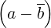. So functions are :
dcomplex C_op_apib (dcomplex a, dcomplex b)
Description a + b.
dcomplex C_op_apcb (dcomplex a, dcomplex b)
Description a + b.
dcomplex C_op_amcb (dcomplex a, dcomplex b)
Description a -b.
dcomplex C_op_amib (dcomplex a, dcomplex b)
Description a - i b
dcomplex C_op_dapb (double d, dcomplex a, dcomplex b)
Description d(a + b).
dcomplex C_op_damb (double d, dcomplex a, dcomplex b)
Description d(a - b).
dcomplex C_op_dapib (double d, dcomplex a, dcomplex b)
Description d(a + b).
dcomplex C_op_damib (double d, dcomplex a, dcomplex b)
Description d(a - b).
dcomplex C_op_dapcb (double d, dcomplex a, dcomplex b)
Description d .
.
dcomplex C_op_damcb (double d, dcomplex a, dcomplex b)
Description d .
.
dcomplex C_op_idapb (double d, dcomplex a, dcomplex b)
Description d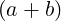.
dcomplex C_op_idamb (double d, dcomplex a, dcomplex b)
Description d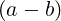.
dcomplex C_op_idapcb (double d, dcomplex a, dcomplex b)
Description d .
.
dcomplex C_op_idamcb (double d, dcomplex a, dcomplex b)
Description d .
.
The structures and functions related to vectors are declared in pnl/pnl_vector.h.
Vectors are declared for several basic types : double, int, and dcomplex. In the following declarations, BASE must be replaced by one the previous types and the corresponding vector structures are respectively named PnlVect, PnlVectInt, PnlVectComplex
typedef struct _PnlVect {
/**
* Must be the first element in order for the object mechanism to work
* properly. This allows any PnlVect pointer to be cast to a PnlObject
*/
PnlObject object;
int size; /*!< size of the vector */
int mem_size; /*!< size of the memory block allocated for array */
double *array; /*!< pointer to store the data */
int owner; /*!< 1 if the object owns its array member, 0 otherwise */
} PnlVect;
typedef struct _PnlVectInt {
/**
* Must be the first element in order for the object mechanism to work
* properly. This allows any PnlVectInt pointer to be cast to a PnlObject
*/
PnlObject object;
int size; /*!< size of the vector */
int mem_size; /*!< size of the memory block allocated for array */
int *array; /*!< pointer to store the data */
int owner; /*!< 1 if the object owns its array member, 0 otherwise */
} PnlVectInt;
typedef struct _PnlVectComplex {
/**
* Must be the first element in order for the object mechanism to work
* properly. This allows any PnlVectComplex pointer to be cast
* to a PnlObject
*/
PnlObject object;
int size; /*!< size of the vector */
int mem_size; /*!< size of the memory block allocated for array */
dcomplex *array; /*!< pointer to store the data */
int owner; /*!< 1 if the object owns its array member, 0 otherwise */
} PnlVectComplex;
size is the size of the vector, array is a pointer containing the data and owner is an integer to know if the vector owns its array pointer (owner=1) or shares it with another structure (owner=0). mem_size is the number of elements the vector can hold at most.
General functions These functions exist for all types of vector no matter what the basic type is. The following conventions are used to name functions operating on vectors. Here is the table of prefixes used for the different basic types.
| type | prefix | BASE |
| double | pnl_vect | double |
| int | pnl_vect_int | int |
| dcomplex | pnl_vect_complex | dcomplex |
In this paragraph, we present the functions operating on PnlVect which exist for all types. To deduce the prototypes of these functions for other basic types, one must replace pnl_vect and double according the above table.
Constructors and destructors There are no special functions to access the size of a vector, instead the field size should be accessed directly.
PnlVect * pnl_vect_new ()
Description Create a new PnlVect of size 0.
PnlVect * pnl_vect_create (int size)
Description Create a new PnlVect pointer.
PnlVect * pnl_vect_create_from_zero (int size)
Description Create a new PnlVect pointer and sets it to zero.
PnlVect * pnl_vect_create_from_scalar (int size, double x)
Description Create a new PnlVect pointer and sets all elements t x.
PnlVect * pnl_vect_create_from_ptr (int size, const double *x)
Description Create a new PnlVect pointer and copies x to array.
PnlVect * pnl_vect_create_from_mat ( const PnlMat *M)
Description Create a new PnlVect pointer of size M->mn and copy the content of M
row wise.
PnlVect * pnl_vect_create_from_list (int size, ...)
Description Create a new PnlVect pointer of length size filled with the extra
arguments passed to the function. The number of extra arguments passed must
be equal to size and they must be of the type BASE. Example: To create a
vector {1., 2.}, you should enter pnl_vect_create_from_list(2, 1.0, 2.0) and NOT
pnl_vect_create_from_list(2, 1.0, 2) or pnl_vect_create_from_list(2, 1, 2.0). Be
aware that this cannot be checked inside the function.
PnlVect * pnl_vect_create_from_file (const char *file)
Description Read a vector from a file and creates the corresponding PnlVect . The
data might be stored as a row or column vector. Entries can be separated by spaces,
tabs, commas or semicolons. Anything after a # or % is ignored up to the end of the
line.
PnlVect * pnl_vect_copy (const PnlVect *v)
Description This is a copying constructor. It creates a copy of a PnlVect .
void pnl_vect_clone (PnlVect *clone, const PnlVect *v)
Description Clone a PnlVect . clone must be an already existing PnlVect . It is resized
to match the size of v and the data are copied. Future modifications to v will not affect
clone.
PnlVect * pnl_vect_create_subvect_with_ind (const PnlVect *V, const
PnlVectInt *ind)
Description Create a new vector containing V(ind(:)).
void pnl_vect_extract_subvect_with_ind (PnlVect *V_sub, const PnlVect
*V, const PnlVectInt *ind)
Description On exit, V_sub = V(ind(:)).
PnlVect * pnl_vect_create_subvect (const PnlVect *V, int i, int len)
Description Create a new vector containing V(i:i+len-1). The elements are copied.
void pnl_vect_extract_subvect (PnlVect *V_sub, const PnlVect *V, int i, int
len)
Description On exit, V_sub = V(i:i+len-1). The elements are copied.
void pnl_vect_set_subblock (PnlVect *dest, const PnlVect *src, int i)
Description Set dest[i:] = src.
void pnl_vect_free (PnlVect **v)
Description Free a PnlVect pointer and set the data pointer to NULL
PnlVect pnl_vect_wrap_array (const double *x, int size)
Description Create a PnlVect containing the data x. No copy is made. It is just a
container.
PnlVect pnl_vect_wrap_subvect (const PnlVect *x, int i, int s)
Description Create a PnlVect containing x(i:i+s-1). No copy is made. It is just a
container. The returned PnlVect has size=s and owner=0.
PnlVect pnl_vect_wrap_subvect_with_last (const PnlVect *x, int i, int j)
Description Create a PnlVect containing x(i:j). No copy is made. It is just a container.
PnlVect pnl_vect_wrap_mat (const PnlMat *M)
Description Return a PnlVect (not a pointer) whose array is the row wise array of M.
The new vector shares its data with the matrix M, which means that any modification
to one of them will affect the other.
int pnl_vect_resize (PnlVect *v, int size)
Description Resize a PnlVect . It copies as much of the old data to fit in the resized
object.
int pnl_vect_resize_from_scalar (PnlVect *v, int size, double x)
Description Resize a PnlVect . Copy as much of the old data as possible and fill the
new cells with x.
int pnl_vect_resize_from_ptr (PnlVect *v, int size, double *t)
Description Resize a PnlVect and uses t to fill the vector. t must be of size size.
Accessing elements If it is supported by the compiler, the following functions are declared inline. To speed up these functions, you can define the macro PNL_RANGE_CHECK_OFF, see Section 1.3.2 for an explanation.
Accessing elements of a vector is faster using the following macros
GET (PnlVect *v, int i)
Description Return v[i] for reading, eg. x=GET(v,i)
GET_INT (PnlVectInt *v, int i)
Description Same as GET but for an integer vector.
GET_COMPLEX (PnlVectComplex *v, int i)
Description Same as GET but for a complex vector.
LET (PnlVect *v, int i)
Description Return v[i] as a lvalue for writing, eg. LET(v,i)=x
LET_INT (PnlVectInt *v, int i)
Description Same as LET but for an integer vector.
LET_COMPLEX (PnlVectComplex *v, int i)
Description Same as LET but for a complex vector.
void pnl_vect_set (PnlVect *v, int i, double x)
Description Set v[i]=x.
double pnl_vect_get (const PnlVect *v, int i)
Description Return the value of v[i].
void pnl_vect_lget (PnlVect *v, int i)
Description Return the address of v[i].
void pnl_vect_set_all (PnlVect *v, double x)
Description Set all elements to x.
void pnl_vect_set_zero (PnlVect *v)
Description Set all elements to zero.
void pnl_vect_print (const PnlVect *V)
Description Print a PnlVect as a column vector
void pnl_vect_fprint (FILE *fic, const PnlVect *V)
Description Print a PnlVect in file fic as a column vector. The file can be read by
pnl_vect_create_from_file.
void pnl_vect_print_asrow (const PnlVect *V)
Description Print a PnlVect as a row vector
void pnl_vect_fprint_asrow (FILE *fic, const PnlVect *V)
Description Print a PnlVect in file fic as a row vector. The file can be read by
pnl_vect_create_from_file.
void pnl_vect_print_nsp (const PnlVect *V)
Description Print a vector to the standard output in a format compatible with Nsp.
void pnl_vect_fprint_nsp (FILE *fic, const PnlVect *V)
Description Print a vector to a file in a format compatible with Nsp.
Applying external operation to vectors
void pnl_vect_minus (PnlVect *lhs)
Description In-place unary minus
void pnl_vect_plus_scalar (PnlVect *lhs, double x)
Description In-place vector scalar addition
void pnl_vect_minus_scalar (PnlVect *lhs, double x)
Description In-place vector scalar substraction
void pnl_vect_mult_scalar (PnlVect *lhs, double x)
Description In-place vector scalar multiplication
void pnl_vect_div_scalar (PnlVect *lhs, double x)
Description In-place vector scalar division
void pnl_vect_plus_vect (PnlVect *lhs, const PnlVect *rhs)
Description In-place vector vector addition
void pnl_vect_minus_vect (PnlVect *lhs, const PnlVect *rhs)
Description In-place vector vector substraction
void pnl_vect_inv_term (PnlVect *lhs)
Description In-place term by term vector inversion
void pnl_vect_div_vect_term (PnlVect *lhs, const PnlVect *rhs)
Description In-place term by term vector division
void pnl_vect_mult_vect_term (PnlVect *lhs, const PnlVect *rhs)
Description In-place vector vector term by term multiplication
void pnl_vect_map (PnlVect *lhs, const PnlVect *rhs, double(*f)(double))
Description lhs = f(rhs)
void pnl_vect_map_inplace (PnlVect *lhs, double(*f)(double))
Description lhs = f(lhs)
void pnl_vect_map_vect (PnlVect *lhs, const PnlVect *rhs1, const PnlVect *rhs2,
double(*f)(double, double))
Description lhs = f(rhs1, rhs2)
void pnl_vect_map_vect_inplace (PnlVect *lhs, PnlVect *rhs,
double(*f)(double,double))
Description lhs = f(lhs,rhs)
void pnl_vect_axpby (double a, const PnlVect *x, double b, PnlVect *y)
Description Compute y : = a x + b y. When b==0, the content of y is not used on
input and instead y is resized to match x.
double pnl_vect_sum (const PnlVect *lhs)
Description Return the sum of all the elements of a vector
void pnl_vect_cumsum (PnlVect *lhs)
Description Compute the cumulative sum of all the elements of a vector. The original
vector is modified
double pnl_vect_prod (const PnlVect *V)
Description Return the product of all the elements of a vector
void pnl_vect_cumprod (PnlVect *lhs)
Description Compute the cumulative product of all the elements of a vector. The
original vector is modified
double pnl_vect_norm_two (const PnlVect *V)
Description Return the two norm of a vector
double pnl_vect_norm_one (const PnlVect *V)
Description Return the one norm of a vector
double pnl_vect_norm_infty (const PnlVect *V)
Description Return the infinity norm of a vector
double pnl_vect_scalar_prod (const PnlVect *rhs1, const PnlVect *rhs2)
Description Compute the scalar product between 2 vectors
int pnl_vect_cross (PnlVect *lhs, const PnlVect *x, const PnlVect *y)
Description Compute the cross product of x and y and store the result in lhs. The
vectors x and y must be of size 3 and FAIL is returned otherwise.
double pnl_vect_dist (const PnlVect *x, const PnlVect *y)
Description Compute the distance between x and y, ie 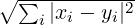.
int pnl_vect_isequal (const PnlVect *V1, const PnlVect *V2, double err)
Description Test if two vectors are equal up to err component–wise. The error err
is either relative or absolute depending on the magnitude of the components. Return
TRUE or FALSE.
int pnl_vect_isequal_abs (const PnlVect *V1, const PnlVect *V2, double abserr)
Description Test if two vectors are equal up to an absolute error abserr
component–wise. Return TRUE or FALSE.
int pnl_vect_isequal_rel (const PnlVect *V1, const PnlVect *V2, double relerr)
Description Test if two vectors are equal up to a relative error relerr component–wise.
Return TRUE or FALSE.
int pnl_vect_eq_all (const PnlVect *v, double x)
Description Test if all the components of v are equal to x. Return TRUE or FALSE.
Ordering functions The following functions are not defined for PnlVectComplex because there is no total ordering on Complex numbers
double pnl_vect_max (const PnlVect *V)
Description Return the maximum of a a vector
double pnl_vect_min (const PnlVect *V)
Description Return the minimum of a vector
void pnl_vect_minmax (double *m, double *M, const PnlVect *)
Description Compute the minimum and maximum of a vector which are returned in
m and M respectively.
void pnl_vect_min_index (double *m, int *im, const PnlVect *)
Description Compute the minimum of a vector and its index stored in sets m and im
respectively.
void pnl_vect_max_index (double *M, int *iM, const PnlVect *)
Description Compute the maximum of a vector and its index stored in sets m and
im respectively.
void pnl_vect_minmax_index (double *m, double *M, int *im, int *iM, const
PnlVect *)
Description Compute the minimum and maximum of a vector and the corresponding
indices stored respectively in m, M, im and iM.
void pnl_vect_qsort (PnlVect *, char order)
Description Sort a vector using a quick sort algorithm according to order (’i’ for
increasing or ’d’ for decreasing).
void pnl_vect_qsort_index (PnlVect *, PnlVectInt *index, char order)
Description Sort a vector using a quick sort algorithm according to order (’i’ for
increasing or ’d’ for decreasing ). On output, index contains the permutation used to
sort the vector.
int pnl_vect_find (PnlVectInt *ind, char *type, int(*f)(double *t), …)
Description f is a function taking a C array as argument and returning an integer. type is a
string composed by the letters ’r’ and ’v’ and is used to describe the types of the arguments
appearing after f. This function aims at simulating Scilab’s find function. Here are a
few examples (capital letters are used for vectors and small letters for real values)
ind = find ( a < X )
int isless ( double *t ) { return t[0] < t[1]; }
pnl_vect_find ( ind, "rv", isless, a, X );
ind = find (X <= Y)
int isless ( double *t ) { return t[0] <= t[1]; }
pnl_vect_find ( ind, "vv", isless, X, Y );
ind = find ((a < X) && (X <= Y))
int cmp ( double *t )
{
return (t[0] <= t[1]) && (t[1] <= t[2]);
}
pnl_vect_find ( ind, "rvv", cmp, a, X, Y );
ind contains on exit the indices i for which the function f returned 1. This function returns OK or FAIL when something went wrong (size mismatch between matrices, invalid string type).
void pnl_vect_swap_elements (PnlVect *v, int i, int j)
Description Exchange v[i] and v[j].
void pnl_vect_reverse (PnlVect *v)
Description Perform a mirror operation on v. On output v[i] = v[n-1-i] for i=0,…,n-1
where n is the length of the vector.
void pnl_vect_complex_mult_double (PnlVectComplex *lhs, double x)
Description In-place multiplication by a double.
PnlVectComplex* pnl_vect_complex_create_from_array (int size, const
double *re, const double *im)
Description Create a PnlVectComplex given the arrays of the real parts re and
imaginary parts im.
void pnl_vect_complex_split_in_array (const PnlVectComplex *v, double *re,
double *im)
Description Split a complex vector into two C arrays : the real parts of the elements
of v are stored into re and the imaginary parts into im.
void pnl_vect_complex_split_in_vect (const PnlVectComplex *v, PnlVect *re,
PnlVect *im)
Description Split a complex vector into two PnlVect ’s : the real parts of the elements
of v are stored into re and the imaginary parts into im.
There exist functions to directly access the real or imaginary parts of an element of a complex vector. These functions also have inlined versions that are used if the variable HAVE_INLINE was declared at compilation time.
double pnl_vect_complex_get_real (const PnlVectComplex *v, int i)
Description Return the real part of v[i].
double pnl_vect_complex_get_imag (const PnlVectComplex *v, int i)
Description Return the imaginary part of v[i].
double* pnl_vect_complex_lget_real (const PnlVectComplex *v, int i)
Description Return the real part of v[i] as a lvalue.
double* pnl_vect_complex_lget_imag (const PnlVectComplex *v, int i)
Description Return the imaginary part of v[i] as a lvalue.
void pnl_vect_complex_set_real (const PnlVectComplex *v, int i, double re)
Description Set the real part of v[i] to re.
void pnl_vect_complex_set_imag (const PnlVectComplex *v, int i, double im)
Description Set the imaginary part of v[i] to im.
Equivalently to these functions, there exist macros. When the compiler is able to handle inline code, there is no gain in using macros instead of inlined functions at least in principle.
GET_IMAG (v, i)
Description Return the imaginary part of v[i].
LET_REAL (v, i)
Description Return the real part of v[i] as a lvalue.
LET_IMAG (v, i)
Description Return the imaginary part of v[i] as a lvalue.
typedef struct PnlVectCompact {
/**
* Must be the first element in order for the object mechanism to work
* properly. This allows any PnlVectCompact pointer to be cast to a PnlObject
*/
PnlObject object;
int size; /* size of the vector */
double val; /* single value */
double *array; /* Pointer to double values */
char convert; /* ’a’, ’d’ : array, double */
} PnlVectCompact;
PnlVectCompact * pnl_vect_compact_new ()
Description Create a PnlVectCompact of size 0.
PnlVectCompact * pnl_vect_compact_create (int n, double x)
Description Create a PnlVectCompact filled in with x
PnlVectCompact * pnl_vect_compact_create_from_ptr (int n, double *x)
Description Create a PnlVectCompact filled in with the content of x. Note that x
must have at least n elements.
int pnl_vect_compact_resize (PnlVectCompact *v, int size, double x)
Description Resize a PnlVectCompact .
PnlVectCompact * pnl_vect_compact_copy (const PnlVectCompact *v)
Description Copy a PnlVectCompact
void pnl_vect_compact_free (PnlVectCompact **v)
Description Free a PnlVectCompact
PnlVect * pnl_vect_compact_to_pnl_vect (const PnlVectCompact *C)
Description Convert a PnlVectCompact pointer to a PnlVect pointer.
double pnl_vect_compact_get (const PnlVectCompact *C, int i)
Description Access function
void pnl_vect_compact_set_all (PnlVectCompact *C, double x)
Description Set all elements of C to x. C is converted to a compact storage.
void pnl_vect_compact_set_ptr (PnlVectCompact *C, double *ptr)
Description Copy the array ptr into C. We assume that the sizes match. C is converted
to a non compact storage.
The structures and functions related to matrices are declared in pnl/pnl_matrix.h.
typedef struct _PnlMat{
/**
* Must be the first element in order for the object mechanism to work
* properly. This allows any PnlMat pointer to be cast to a PnlObject
*/
PnlObject object;
int m; /*!< nb rows */
int n; /*!< nb columns */
int mn; /*!< product m*n */
int mem_size; /*!< size of the memory block allocated for array */
double *array; /*!< pointer to store the data row-wise */
int owner; /*!< 1 if the object owns its array member, 0 otherwise */
} PnlMat;
typedef struct _PnlMatInt{
/**
* Must be the first element in order for the object mechanism to work
* properly. This allows any PnlMatInt pointer to be cast to a PnlObject
*/
PnlObject object;
int m; /*!< nb rows */
int n; /*!< nb columns */
int mn; /*!< product m*n */
int mem_size; /*!< size of the memory block allocated for array */
int *array; /*!< pointer to store the data row-wise */
int owner; /*!< 1 if the object owns its array member, 0 otherwise */
} PnlMatInt;
typedef struct _PnlMatComplex{
/**
* Must be the first element in order for the object mechanism to work
* properly. This allows any PnlMatComplex pointer to be cast
* to a PnlObject
*/
PnlObject object;
int m; /*!< nb rows */
int n; /*!< nb columns */
int mn; /*!< product m*n */
int mem_size; /*!< size of the memory block allocated for array */
dcomplex *array; /*!< pointer to store the data row-wise */
int owner; /*!< 1 if the object owns its array member, 0 otherwise */
} PnlMatComplex;
m is the number of rows, n is the number of columns. array is a pointer containing the data of the matrix stored line wise, The element (i, j) of the matrix is array[i*m+j]. owner is an integer to know if the matrix owns its array pointer (owner=1) or shares it with another structure (owner=0). mem_size is the number of elements the matrix can hold at most.
The following operations are implemented on matrices and vectors. alpha and beta are numbers, A and B are matrices and x and y are vectors.
| pnl_mat_axpy | B := alpha * A + B |
| pnl_mat_scalar_prod | x’ A y |
| pnl_mat_dgemm | C := alpha * op (A) * op (B) + beta * C |
| pnl_mat_mult_vect_transpose_inplace | y = A’ * x |
| pnl_mat_mult_vect_inplace | y = A * x |
| pnl_mat_lAxpby | y := lambda * A * x + beta * y |
| pnl_mat_dgemv | y := alpha * op (A) * x + beta * y |
| pnl_mat_dger | A := alpha x * y’ + A |
These functions exist for all types of matrices no matter what the basic type is. The following conventions are used to name functions operating on matrices. Here is the table of prefixes used for the different basic types.
| type | prefix | BASE |
| double | pnl_mat | double |
| int | pnl_mat_int | int |
| dcomplex | pnl_mat_complex | dcomplex |
In this paragraph we present the functions operating on PnlMat which exist for all types. To deduce the prototypes of these functions for other basic types, one must replace pnl_mat and double according the above table.
Constructors and destructors There are no special functions to access the sizes of a matrix, instead the fields m, n and mn give direct access to the number of rows, columns and the size of the matrix.
PnlMat * pnl_mat_new ()
Description Create a PnlMat of size 0
PnlMat * pnl_mat_create (int m, int n)
Description Create a PnlMat with m rows and n columns.
PnlMat * pnl_mat_create_from_scalar (int m, int n, double x)
Description Create a PnlMat with m rows and n columns and sets all the elements
to x.
PnlMat * pnl_mat_create_from_zero (int m, int n)
Description Create a PnlMat with m rows and n columns and sets all elements to 0.
PnlMat * pnl_mat_create_from_ptr (int m, int n, const double *x)
Description Create a PnlMat with m rows and n columns and copies the array x to
the new vector. Be sure that x is long enough to fill all the vector because it cannot be
checked inside the function.
PnlMat * pnl_mat_create_from_list (int m, int n, ...)
Description Create a new PnlMat pointer of size m x n filled with the extra arguments
passed to the function. The number of extra arguments passed must be equal to m x n,
be aware that this cannot be checked inside the function.
PnlMat * pnl_mat_copy (const PnlMat *M)
Description Create a new PnlMat which is a copy of M.
PnlMat * pnl_mat_create_diag_from_ptr (const double *x, int d)
Description Create a new squared PnlMat by specifying its size and diagonal terms
as an array.
PnlMat * pnl_mat_create_diag (const PnlVect *V)
Description Create a new squared PnlMat by specifying its diagonal terms in a
PnlVect .
PnlMat * pnl_mat_create_from_file (const char *file)
Description Read a matrix from a file and creates the corresponding PnlMat . One
row of the matrix corresponds to one line of the file and the elements of a row can be
separated by spaces, tabs, commas or semicolons. Anything after a # or % is ignored up
to the end of the line.
void pnl_mat_free (PnlMat **M)
Description Free a PnlMat and sets *M to NULL
PnlMat pnl_mat_wrap_array (const double *x, int m, int n)
Description Create a PnlMat of size m x n which contains x. No copy is made. It is
just a container.
PnlMat pnl_mat_wrap_vect (const PnlVect *V)
Description Return a PnlMat (not a pointer) whose array is the array of V. The new
matrix shares its data with the vector V, which means that any modification to one of
them will affect the other.
void pnl_mat_clone (PnlMat *clone, const PnlMat *M)
Description Clone M into clone. No no new PnlMat is created.
int pnl_mat_resize (PnlMat *M, int m, int n)
Description Resize a PnlMat . The new matrix is of size m x n. The old data are lost.
PnlVect * pnl_vect_create_submat (const PnlMat *M, const PnlVectInt *indi,
const PnlVectInt *indj)
Description Create a new vector containing the values M(indi(:), indj(:)). indi and
indj must be of the same size.
void pnl_vect_extract_submat (PnlVect *V_sub, const PnlMat *M, const
PnlVectInt *indi, const PnlVectInt *indj)
Description On exit, V_sub = M(indi(:), indj(:)). indi and indj must be of the same
size.
void pnl_mat_extract_subblock (PnlMat *M_sub, const PnlMat *M, int i, int
len_i, int j, int len_j)
Description M_sub = M(i:i+len_i-1, j:j+len_j-1). len_i (resp. len_j) is the number
of rows (resp. columns) to be extracted.
void pnl_mat_set_subblock (PnlMat *M, const PnlMat *block, int i, int j)
Description If block is a matrix of size m_block x n_block, the dimensions of M
must satisfy that M->m >= i + m_block and M->n >= j + n_block. On output
M(i:i+m_block-1, j:j+n_block-1) = block.
Accessing elements. If it is supported by the compiler, the following functions are declared inline. To speed up these functions, you can define the macro PNL_RANGE_CHECK_OFF, see Section 1.3.2 for an explanation.
Accessing elements of a matrix is faster using the following macros
MGET (PnlMat *M, int i, int j)
Description Return M[i,j] for reading, eg. x=MGET(M,i,j)
MGET_INT (PnlMatInt *M, int i, int j)
Description Same as MGET but for an integer matrix.
MGET_COMPLEX (PnlMatComplex *M, int i, int j)
Description Same as MGET but for a complex matrix.
MLET (PnlMat *M, int i, int j)
Description Return M[i,j] as a lvalue for writing, eg. MLET(M,i,j)=x
MLET_INT (PnlMatInt *M, int i, int j)
Description Same as MLET but for an integer matrix.
MLET_COMPLEX (PnlMatComplex *M, int i, int j)
Description Same as MLET but for a complex matrix.
void pnl_mat_set (PnlMat *M, int i, int j, double x)
Description Set the value of M[i, j]=x
double pnl_mat_get (const PnlMat *M, int i, int j)
Description Get the value of M[i, j]
double * pnl_mat_lget (PnlMat *M, int i, int j)
Description Return the address of M[i, j] for use as a lvalue.
void pnl_mat_set_all (PnlMat *M, double x)
Description Set all elements of M to x.
void pnl_mat_set_zero (PnlMat *M)
Description Set all elements of M to 0.
void pnl_mat_set_id (PnlMat *M)
Description Set the matrix M to the identity matrix. M must be a square matrix.
void pnl_mat_set_diag (PnlMat *M, double x, int d)
Description Set the dth diagonal terms of the matrix M to the value x. M must be a
square matrix.
void pnl_mat_set_from_ptr (PnlMat *M, const double *x)
Description Set M row–wise with the values given by x. The array x must be at least
M->mn long.
void pnl_mat_get_row (PnlVect *V, const PnlMat *M, int i)
Description Extract and copies the i-th row of M into V.
void pnl_mat_get_col (PnlVect *V, const PnlMat *M, int j)
Description Extract and copies the j-th column of M into V.
PnlVect pnl_vect_wrap_mat_row (const PnlMat *M, int i)
Description Return a PnlVect (not a pointer) whose array is the i-th row of M. The
new vector shares its data with the matrix M, which means that any modification to
one of them will affect the other.
PnlMat pnl_mat_wrap_mat_rows (const PnlMat *M, int i_start, int i_end)
Description Return a PnlMat (not a pointer) holding rows from i_start to i_end
(included) of M. The new matrix shares its data with the matrix M, which means that
any modification to one of them will affect the other.
void pnl_mat_swap_rows (PnlMat *M, int i, int j)
Description Swap two rows of a matrix.
void pnl_mat_set_col (PnlMat *M, const PnlVect *V, int j)
Description Set the i-th column of a matrix M with the content of V
void pnl_mat_set_col_from_ptr (PnlMat *M, const double *x, int j)
Description Set the i-th column of M with the content of x.
void pnl_mat_set_row (PnlMat *M, const PnlVect *V, int i)
Description Set the i-th row of M with the content of V
void pnl_mat_set_row_from_ptr (PnlMat *M, const double *x, int i)
Description Set the i-th row of M with the content of x
void pnl_mat_add_row (PnlMat *M, int i, const PnlVect *r)
Description Add a row in matrix M before position i and fill it with the content of r.
If r == NULL, row i is left uninitialized. The index i may vary between 0 — add a row
at the top of the matrix — and M->m — add a row after all rows.
void pnl_mat_del_row (PnlMat *M, int i)
Description Delete the row with index i (between 0 and M->m-1) of the matrix M.
void pnl_mat_print (const PnlMat *M)
Description Print a matrix to the standard output.
void pnl_mat_fprint (FILE *fic, const PnlMat *M)
Description Print a matrix to a file. The saved matrix can be reloaded by the function
pnl_mat_create_from_file.
void pnl_mat_print_nsp (const PnlMat *M)
Description Print a matrix to the standard output in a format compatible with Nsp.
void pnl_mat_fprint_nsp (FILE *fic, const PnlMat *M)
Description Print a matrix to a file in a format compatible with Nsp.
void pnl_mat_plus_scalar (PnlMat *lhs, double x)
Description In-place matrix scalar addition
void pnl_mat_minus_scalar (PnlMat *lhs, double x)
Description In-place matrix scalar substraction
void pnl_mat_mult_scalar (PnlMat *lhs, double x)
Description In-place matrix scalar multiplication
void pnl_mat_div_scalar (PnlMat *lhs, double x)
Description In-place matrix scalar division
void pnl_mat_mult_mat_term (PnlMat *lhs, const PnlMat *rhs)
Description In-place matrix matrix term by term product
void pnl_mat_div_mat_term (PnlMat *lhs, const PnlMat *rhs)
Description In-place matrix matrix term by term division
void pnl_mat_kron_mat_inplace (PnlMat *res, const PnlMat *B, const PnlMat
*B)
Description In-place Kroenecker product of A and B
PnlMat * pnl_mat_kron_mat (const PnlMat *B, const PnlMat *B)
Description Return the Kroenecker product of A and B
void pnl_mat_map_inplace (PnlMat *lhs, double(*f)(double))
Description lhs = f(lhs).
void pnl_mat_map (PnlMat *lhs, const PnlMat *rhs, double(*f)(double))
Description lhs = f(rhs).
void pnl_mat_map_mat_inplace (PnlMat *lhs, const PnlMat *rhs,
double(*f)(double, double))
Description lhs = f(lhs, rhs).
void pnl_mat_map_mat (PnlMat *lhs, const PnlMat *rhs1, const PnlMat *rhs2,
double(*f)(double, double))
Description lhs = f(rhs1, rhs2).
double pnl_mat_sum (const PnlMat *lhs)
Description Sum matrix component-wise
void pnl_mat_sum_vect (PnlVect *y, const PnlMat *A, char c)
Description Sum matrix column or row wise. Argument c can be either ’r’ (to get a
row vector) or ’c’ (to get a column vector). When c=’r’, y(j) = ∑
iAij and when c=’rc,
y(i) = ∑
jAij.
void pnl_mat_cumsum (PnlMat *A, char c)
Description Cumulative sum over the rows or columns. Argument c can be either ’r’
to sum over the rows or ’c’ to sum over the columns. When c=’r’, Aij = ∑
1≤k≤iAkj
and when c=’rc, Aij = ∑
1≤k≤jAik.
double pnl_mat_prod (const PnlMat *lhs)
Description Product matrix component-wise
void pnl_mat_prod_vect (PnlVect *y, const PnlMat *A, char c)
Description Prod matrix column or row wise. Argument c can be either ’r’ (to get a
row vector) or ’c’ (to get a column vector). When c=’r’, y(j) = ∏
iAij and when c=’rc,
y(i) = ∏
jAij.
void pnl_mat_cumprod (PnlMat *A, char c)
Description Cumulative prod over the rows or columns. Argument c can be either ’r’
to prod over the rows or ’c’ to prod over the columns. When c=’r’, Aij = ∏
1≤k≤iAkj
and when c=’rc, Aij = ∏
1≤k≤jAik.
int pnl_mat_isequal (const PnlMat *A, const PnlMat *B, double err)
Description Test if two matrices are equal up to err component–wise. The error err
is either relative or absolute depending on the magnitude of the components. Return
TRUE or FALSE.
int pnl_mat_isequal_abs (const PnlMat *A, const PnlMat *B, double abserr)
Description Test if two matrices are equal up to an absolute error abserr
component–wise. Return TRUE or FALSE.
int pnl_mat_isequal_rel (const PnlMat *A, const PnlMat *B, double relerr)
Description Test if two matrices are equal up to a relative error relerr
component–wise. Return TRUE or FALSE.
void pnl_mat_max ( PnlVect *M, const PnlMat *A, char d)
Description On exit, M(i) = max j(A(i,j)) when d=’c’ and M(i) = max j(A(j,i))
when d=’r’ and M(0) = max i,j = A(i,j) when d=’*’.
void pnl_mat_min ( PnlVect *m,const PnlMat *A, char d)
Description On exit, m(i) = min j(A(i,j)) when d=’c’ and m(i) = min j(A(j,i))
when d=’r’ and M(0) = min i,j = A(i,j) when d=’*’.
void pnl_mat_minmax ( PnlVect *m, PnlVect *M, const PnlMat *A, char d)
Description On exit, m(i) = min j(A(i,j)) and M(i) = max j(A(i,j)) when d=’c’
and m(i) = min j(A(j,i)) and M(i) = min j(A(j,i)) when d=’r’ and M(0) = max i,j =
A(i,j) and m(0) = min i,j = A(i,j) when d=’*’.
void pnl_mat_min_index ( PnlVect *m, PnlVectInt *im, const PnlMat *A, char
d)
Description Idem as pnl_mat_min and index contains the indices of the minima. If
index==NULL, the indices are not computed.
void pnl_mat_max_index ( PnlVect *M, PnlVectInt *iM, const PnlMat *A, char
d)
Description Idem as pnl_mat_max and index contains the indices of the maxima. If
index==NULL, the indices are not computed.
void pnl_mat_minmax_index ( PnlVect *m, PnlVect *M, PnlVectInt *im,
PnlVectInt *iM, const PnlMat *A, char d)
Description Idem as pnl_mat_minmax and im contains the indices of the minima
and iM contains the indices of the minima. If im==NULL (resp. iM==NULL, the
indices of the minima (resp. maxima) are not computed.
void pnl_mat_qsort (PnlMat *, char dir, char order)
Description Sort a matrix using a quick sort algorithm according to order (’i’ for
increasing or ’d’ for decreasing). The parameter dir determines whether the matrix is
sorted by rows or columns. If dir=’c’, each row is sorted independently of the others
whereas if dir=’r’, each column is sorted independently of the others.
void pnl_mat_qsort_index (PnlMat *, PnlMatInt *index, char dir, char order)
Description Sort a matrix using a quick sort algorithm according to order (’i’ for
increasing or ’d’ for decreasing). The parameter dir determines whether the matrix is
sorted by rows or columns. If dir=’c’, each row is sorted independently of the others
whereas if dir=’r’, each column is sorted independently of the others. In addition to the
function pnl_mat_qsort, the permutation index is computed and stored into index.
int pnl_mat_find (PnlVectInt *indi, PnlVectInt indj, char *type, int(*f)(double *t),
…)
Description f is a function taking a C array as argument and returning an integer. type is a
string composed by the letters ’r’ and ’m’ and is used to describe the types of the arguments
appearing after f : ’r’ for real numbers and ’m’ for matrices. This function aims at simulating
Scilab’s find function. Here are a few examples (capital letters are used for matrices and small
letters for real values)
[indi, indj] = find ( a < X )
int isless ( double *t ) { return t[0] < t[1]; }
pnl_mat_find ( indi, indj, "rm", isless, a, X );
ind = find (X <= Y)
int isless ( double *t ) { return t[0] <= t[1]; }
pnl_mat_find ( ind, "mm", isless, X, Y );
[indi, indj] = find ((a < X) && (X <= Y))
int cmp ( double *t )
{
return (t[0] <= t[1]) && (t[1] <= t[2]);
}
pnl_mat_find ( indi, indj, "rmm", cmp, a, X, Y );
(indi, indj) contains on exit the indices (i,j) for which the function f returned 1. Note that if indj == NULL on entry, a linear indexing is used for matrices, which means that matrices are seen as large vectors built up be stacking rows. This function returns OK or FAIL if something went wrong (size mismatch between matrices, invalid string type).
void pnl_mat_plus_mat (PnlMat *lhs, const PnlMat *rhs)
Description In-place matrix matrix addition
void pnl_mat_minus_mat (PnlMat *lhs, const PnlMat *rhs)
Description In-place matrix matrix substraction
void pnl_mat_sq_transpose (PnlMat *M)
Description On exit, M is transposed
PnlMat * pnl_mat_transpose (const PnlMat *M)
Description Create a new matrix which is the transposition of M
void pnl_mat_tr ( PnlMat *tM, const PnlMat *M)
Description On exit, tM = M’
double pnl_mat_trace (const PnlMat *M)
Description Return the trace of a square matrix.
void pnl_mat_axpy (double alpha, const PnlMat *A, PnlMat *B)
Description Compute B := alpha * A + B
void pnl_mat_dger (double alpha, const PnlVect *x, const PnlVect *y, PnlMat *A)
Description Compute A := alpha x * y’ + A
PnlVect * pnl_mat_mult_vect (const PnlMat *A, const PnlVect *x)
Description Matrix vector multiplication A * x
void pnl_mat_mult_vect_inplace (PnlVect *y, const PnlMat *A, const PnlVect
*x)
Description In place matrix vector multiplication y = A * x. You cannot use the
same vector for x and y.
PnlVect * pnl_mat_mult_vect_transpose (const PnlMat *A, const PnlVect *x)
Description Matrix vector multiplication A’ * x
void pnl_mat_mult_vect_transpose_inplace (PnlVect *y, const PnlMat *A,
const PnlVect *x)
Description In place matrix vector multiplication y = A’ * x. You cannot use the
same vector for x and y. The vectors x and y must be different.
int pnl_mat_cross (PnlMat *lhs, const PnlMat *A, const PnlMat *B)
Description Compute the cross products of the vectors given in matrices A and B
which must have either 3 rows or 3 columns. A row wise computation is first tried, then
a column wise approach is tested. FAIL is returned in case no dimension equals 3.
void pnl_mat_lAxpby (double lambda, const PnlMat *A, const PnlVect *x, double
b, PnlVect *y)
Description Compute y := lambda A x + b y. When b=0, the content of y is not
used on input and instead y is resized to match A*x. The vectors x and y must be
different.
void pnl_mat_dgemv (char trans, double lambda, const PnlMat *A, const PnlVect
*x, double mu, PnlVect *b)
Description Compute b := lambda op(A) x + mu b, where op (X) = X or op (X) =
X’. If trans=’N’ or trans=’n’, op (A) = A, whereas if trans=’T’ or trans=’t’, op (A)
= A’.When mu==0, the content of b is not used and instead b is resized to match
op(A)*x. The vectors x and b must be different.
void pnl_mat_dgemm (char transA, char transB, double alpha, const PnlMat *A,
const PnlMat *B, double beta, PnlMat *C)
Description Compute C := alpha * op(A) * op (B) + beta * C. When beta=0, the
content of C is unused and instead C is resized to store alpha A *B. If transA=’N’ or
transA=’n’, op (A) = A, whereas if transA=’T’ or transA=’t’, op (A) = A’. The same
holds for transB. The matrix C must be different from A and B.
PnlMat * pnl_mat_mult_mat (const PnlMat *rhs1, const PnlMat *rhs2)
Description Matrix multiplication rhs1 * rhs2
void pnl_mat_mult_mat_inplace (PnlMat *lhs, const PnlMat *rhs1, const
PnlMat *rhs2)
Description In-place matrix multiplication lhs = rhs1 * rhs2. The matrix lhs must be
different from rhs1 and rhs2.
double pnl_mat_scalar_prod (const PnlMat *A, const PnlVect *x, const PnlVect
*y)
Description Compute x’ * A * y
void pnl_mat_exp (PnlMat *B, const PnlMat *A)
Description Compute the matrix exponential B = exp(A).
void pnl_mat_log (PnlMat *B, const PnlMat *A)
Description Compute the matrix logarithm B = log(A). For the moment, this function
only works if A is diagonalizable.
void pnl_mat_eigen (PnlVect *v, PnlMat *P, const PnlMat *A, int
with_eigenvector)
Description Compute the eigenvalues (stored in v) and optionally the eigenvectors
stored column wise in P when with_eigenvector==TRUE. If A is symmetric or
Hermitian in the complex case, P is orthonormal. When with_eigenvector=FALSE, P
can be NULL.
Linear systems and matrix decompositions The following functions are designed to solve linear system of the from A x = b where A is a matrix and b is a vector except in the functions pnl_mat_syslin_mat, pnl_mat_lu_syslin_mat and pnl_mat_chol_syslin_mat which expect the right hand side member to be a matrix too. Whenever the vector b is not needed once the system is solved, you should consider using “inplace” functions.
All the functions described in this paragraph return OK if the computations have been carried out successfully and FAIL otherwise.
int pnl_mat_chol (PnlMat *M)
Description Compute the Cholesky decomposition of M. M must be symmetric, the
positivity is tested in the algorithm. M = L * L’. On exit, the lower part of M contains
the Cholesky decomposition L and the upper part is set to zero.
int pnl_mat_pchol (PnlMat *M, double tol, int *rank, PnlVectInt *p)
Description Compute the Cholesky decomposition of M with complete pivoting. P’
* A * P = L * L’. M must be symmetric positive semi-definite. On exit, the lower part
of M contains the Cholesky decomposition L and the upper part is set to zero. The
permutation matrix is stored in an integer vector p : the only non zero elements of P
are P(p(k),k) = 1
int pnl_mat_lu (PnlMat *A, PnlPermutation *p)
Description Compute a P A = LU factorization. P must be an already allocated
PnlPermutation . On exit the decomposition is stored in A, the lower part of A contains
L while the upper part (including the diagonal terms) contains U. Remember that the
diagonal elements of L are all 1. Row i of A was interchanged with row p(i).
int pnl_mat_upper_syslin (PnlVect *x, const PnlMat *U, const PnlVect *b)
Description Solve an upper triangular linear system U x = b
int pnl_mat_lower_syslin (PnlVect *x, const PnlMat *L, const PnlVect *b)
Description Solve a lower triangular linear system L x = b
int pnl_mat_chol_syslin (PnlVect *x, const PnlMat *chol, const PnlVect *b)
Description Solve a symmetric definite positive linear system A x = b, in which chol
is assumed to be the Cholesky decomposition of A computed by pnl_mat_chol
int pnl_mat_chol_syslin_inplace ( const PnlMat *chol, PnlVect *b)
Description Solve a symmetric definite positive linear system A x = b, in which chol
is assumed to be the Cholesky decomposition of A computed by pnl_mat_chol. The
solution of the system is stored in b on exit.
int pnl_mat_lu_syslin (PnlVect *x, const PnlMat *LU, const PnlPermutation *p,
const PnlVect *b)
Description Solve a linear system A x = b using a LU decomposition. LU and P are
assumed to be the PA = LU decomposition as computed by pnl_mat_lu. In particular,
the structure of the matrix LU is the following : the lower part of A contains L while
the upper part (including the diagonal terms) contains U. Remember that the diagonal
elements of L are all 1.
int pnl_mat_lu_syslin_inplace (const PnlMat *LU, const PnlPermutation *p,
PnlVect *b)
Description Solve a linear system A x = b using a LU decomposition. LU and P are
assumed to be the PA = LU decomposition as computed by pnl_mat_lu. In particular,
the structure of the matrix LU is the following : the lower part of A contains L while
the upper part (including the diagonal terms) contains U. Remember that the diagonal
elements of L are all 1. The solution of the system is stored in b on exit.
int pnl_mat_syslin (PnlVect *x, const PnlMat *A, const PnlVect *b)
Description Solve a linear system A x = b using a LU factorization which is computed
inside this function.
int pnl_mat_syslin_inplace (PnlMat *A, PnlVect *b)
Description Solve a linear system A x = b using a LU factorization which is computed
inside this function. The solution of the system is stored in b and A is overwritten by
its LU decomposition.
int pnl_mat_syslin_mat (PnlMat *A, PnlMat *B)
Description Solve a linear system A X = B using a LU factorization which is
computed inside this function. A and B are matrices. A must be square. The solution
of the system is stored in B on exit. On exit, A contains the LU decomposition of the
input matrix which is lost.
int pnl_mat_chol_syslin_mat (const PnlMat *A, PnlMat *B)
Description Solve a linear system A X = B using a Cholesky factorization of
the symmetric positive defnite matrix A. A contains the Cholesky decomposition as
computed by pnl_mat_chol. B is matrix with the same number of rows as A. The
solution of the system is stored in B on exit.
int pnl_mat_lu_syslin_mat (const PnlMat *A, const PnlPermutation *p,
PnlMat *B)
Description Solve a linear system A X = B using a P A = L U factorization. A
contains the L U factors and p the associated permutation. A and p must have been
computed by pnl_mat_lu. B is matrix with the same number of rows as A. The solution
of the system is stored in B on exit.
The following functions are designed to invert matrices. The authors provide these functions although they cannot find good reasons to use them. Note that to solve a linear system, one must used the syslin functions and not invert the system matrix because it is much longer.
int pnl_mat_upper_inverse (PnlMat *A, const PnlMat *B)
Description Inversion of an upper triangular matrix
int pnl_mat_lower_inverse (PnlMat *A, const PnlMat *B)
Description Inversion of a lower triangular matrix
int pnl_mat_inverse (PnlMat *inverse, const PnlMat *A)
Description Compute the inverse of a matrix A and stores the result into inverse. A
LU factorisation of the matrix A is computed inside this function.
int pnl_mat_inverse_with_chol (PnlMat *inverse, const PnlMat *A)
Description Compute the inverse of a symmetric positive definite matrix A and stores
the result into inverse. The Cholesky factorisation of the matrix A is computed inside
this function.
Linear systems and matrix decompositions The following functions are designed to solve linear system of the from A x = b where A is a matrix and b is a vector except in the functions pnl_mat_syslin_mat, pnl_mat_lu_syslin_mat and pnl_mat_chol_syslin_mat which expect the right hand side member to be a matrix too. Whenever the vector b is not needed once the system is solved, you should consider using “inplace” functions.
All the functions described in this paragraph return OK if the computations have been carried out successfully and FAIL otherwise.
int pnl_mat_qr (PnlMat *Q, PnlMat *R, PnlPermutation *p, const PnlMat *A)
Description Compute a A P = QR decomposition. If on entry P=NULL, then the
decomposition is computed without pivoting, i.e A = QR. When P≠NULL, P must be
an already allocated PnlPermutation . Q is an orthogonal matrix, i.e Q-1 = QT and
R is an upper triangular matrix. The use of pivoting improves the numerical stability
when A is almost rank deficient, i.e when the smallest eigenvalue of A is very close to
0.
int pnl_mat_qr_syslin (PnlVect *x, const PnlMat *Q, const PnlMat *R, const
PnlVectInt *p, const PnlVect *b)
Description Solve a linear system A x = b where A is given by its QR decomposition
with column pivoting as computed by the function pnl_mat_qr.
int pnl_mat_ls (const PnlMat *A, PnlVect *b)
Description Solve a linear system A x = b in the least square sense, i.e. x =
arg min U∥A * u - b∥2. The solution is stored into b on exit. It internally uses a AP =
QR decomposition.
int pnl_mat_ls_mat (const PnlMat *A, PnlMat *B)
Description Solve a linear system A X = B with A and B two matrices in the least
square sense, i.e. X = arg min U∥A * U - B∥2. The solution is stored into B on exit. It
internally uses a AP = QR decomposition. Same function as pnl_mat_ls but handles
several r.h.s.
PnlMatComplex * pnl_mat_complex_create_from_mat (const PnlMat *R)
Description Create a complex matrix using a real one. The complex parts of the
entries of the returned matrix are all set to zero.
typedef PnlVectInt PnlPermutation;
The PnlPermutation type is actually nothing else than a vector of integers, i.e. a PnlVectInt. It is used to store the partial pivoting with row interchanges transformation needed in the LU decomposition. We use the Blas convention for storing permutations. Consider a PnlPermutation p generated by a LU decomposition of a matrix A : to compute the decomposition, row i of A was interchanged with row p(i).
PnlPermutation * pnl_permutation_new ()
Description Create an empty PnlPermutation .
PnlPermutation * pnl_permutation_create (int n)
Description Create a PnlPermutation of size n.
void pnl_permutation_free (PnlPermutation **p)
Description Free a PnlPermutation .
void pnl_permutation_inverse (PnlPermutation *inv, const PnlPermutation *p)
Description Compute in inv the inverse of the permutation p.
void pnl_vect_permute (PnlVect *px, const PnlVect *x, const PnlPermutation *p)
Description Apply a PnlPermutation to a PnlVect .
void pnl_vect_permute_inplace (PnlVect *x, const PnlPermutation *p)
Description Apply a PnlPermutation to a PnlVect in-place.
void pnl_vect_permute_inverse (PnlVect *px, const PnlVect *x, const
PnlPermutation *p)
Description Apply the inverse of PnlPermutation to a PnlVect .
void pnl_vect_permute_inverse_inplace (PnlVect *x, const PnlPermutation
*p)
Description Apply the inverse of a PnlPermutation to a PnlVect in-place.
void pnl_mat_col_permute (PnlMat *pX, const PnlMat *X, const
PnlPermutation *p)
Description Apply a PnlPermutation to the columns of a matrix. pX contains the
result of the permutation applied to X.
void pnl_mat_row_permute (PnlMat *pX, const PnlMat *X, const
PnlPermutation *p)
Description Apply a PnlPermutation to the rows of a matrix. pX contains the result
of the permutation applied to X.
void pnl_permutation_fprint (FILE *fic, const PnlPermutation *p)
Description Print a permutation to a file.
void pnl_permutation_print (const PnlPermutation *p)
Description Print a permutation to the standard output.
The structures and functions related to tridiagonal matrices are declared in pnl/pnl_tridiag_matrix.h.
We only store the three main diagonals as three vectors.
typedef struct PnlTridiagMat{
/**
* Must be the first element in order for the object mechanism to work
* properly. This allows any PnlTridiagMat pointer to be cast to a PnlObject
*/
PnlObject object;
int size; /*!< number of rows, the matrix must be square */
double *D; /*!< diagonal elements */
double *DU; /*!< upper diagonal elements */
double *DL; /*!< lower diagonal elements */
} PnlTridiagMat;
size is the size of the matrix, D is an array of size size containing the diagonal terms. DU, DL are two arrays of size size-1 containing respectively the upper diagonal (Mi,i+1) and the lower diagonal (Mi-1,i).
typedef struct PnlTridiagMatLU{
/**
* Must be the first element in order for the object mechanism to work
* properly. This allows any PnlTridiagMatLU pointer to be cast to a PnlObject
*/
PnlObject object;
int size; /*!< number of rows, the matrix must be square */
double *D; /*!< diagonal elements */
double *DU; /*!< upper diagonal elements */
double *DU2; /*!< second upper diagonal elements */
double *DL; /*!< lower diagonal elements */
int *ipiv; /*!< Permutation: row i has been interchanged with row ipiv(i) */
};
This type is used to store the LU decomposition of a tridiagonal matrix.
PnlTridiagMat * pnl_tridiag_mat_new ()
Description Create a PnlTridiagMat with size 0
PnlTridiagMat * pnl_tridiag_mat_create (int size)
Description Create a PnlTridiagMat with size size
PnlTridiagMat * pnl_tridiag_mat_create_from_scalar (int size, double x)
Description Create a PnlTridiagMat with the 3 diagonals filled with x
PnlTridiagMat * pnl_tridiag_mat_create_from_two_scalar (int size, double
x, double y)
Description Create a PnlTridiagMat with the diagonal filled with x and the upper
and lower diagonals filled with y
PnlTridiagMat * pnl_tridiag_mat_create_from_ptr (int size, const double
*lower_D, const double *D, const double *upper_D)
Description Create a PnlTridiagMat
PnlTridiagMat * pnl_tridiag_mat_create_from_mat (const PnlMat *mat)
Description Create a tridiagonal matrix from a full matrix (all the elements but the
3 diagonal ones are ignored).
PnlMat * pnl_tridiag_mat_to_mat (const PnlTridiagMat *T)
Description Create a full matrix from a tridiagonal one.
PnlTridiagMat * pnl_tridiag_mat_copy (const PnlTridiagMat *T)
Description Copy a tridiagonal matrix.
void pnl_tridiag_mat_clone (PnlTridiagMat *clone, const PnlTridiagMat *T)
Description Copy the content of T into clone
void pnl_tridiag_mat_free (PnlTridiagMat **v)
Description Free a PnlTridiagMat
int pnl_tridiag_mat_resize (PnlTridiagMat *v, int size)
Description Resize a PnlTridiagMat .
Accessing elements. If it is supported by the compiler, the following functions are declared inline. To speed up these functions, you can use the macro constant PNL_RANGE_CHECK_OFF, see Section 1.3.2 for an explanation.
void pnl_tridiag_mat_set (PnlTridiagMat *self, int d, int up, double x)
Description Set self[d, d+up] = x, up can be {-1,0,1}.
double pnl_tridiag_mat_get (const PnlTridiagMat *self, int d, int up)
Description Get self[d, d+up], up can be {-1,0,1}.
double * pnl_tridiag_mat_lget (PnlTridiagMat *self, int d, int up)
Description Return the address self[d, d+up] = x, up can be {-1,0,1}.
void pnl_tridiag_mat_fprint (FILE *fic, const PnlTridiagMat *M)
Description Print a tri-diagonal matrix to a file.
void pnl_tridiag_mat_print (const PnlTridiagMat *M)
Description Print a tridiagonal matrix to the standard output.
void pnl_tridiag_mat_plus_tridiag_mat (PnlTridiagMat *lhs, const
PnlTridiagMat *rhs)
Description In-place matrix matrix addition
void pnl_tridiag_mat_minus_tridiag_mat (PnlTridiagMat *lhs, const
PnlTridiagMat *rhs)
Description In-place matrix matrix substraction
void pnl_tridiag_mat_plus_scalar (PnlTridiagMat *lhs, double x)
Description In-place matrix scalar addition
void pnl_tridiag_mat_minus_scalar (PnlTridiagMat *lhs, double x)
Description In-place matrix scalar substraction
void pnl_tridiag_mat_mult_scalar (PnlTridiagMat *lhs, double x)
Description In-place matrix scalar multiplication
void pnl_tridiag_mat_div_scalar (PnlTridiagMat *lhs, double x)
Description In-place matrix scalar division
void pnl_tridiag_mat_mult_tridiag_mat_term (PnlTridiagMat *lhs, const
PnlTridiagMat *rhs)
Description In-place matrix matrix term by term product
void pnl_tridiag_mat_div_tridiag_mat_term (PnlTridiagMat *lhs, const
PnlTridiagMat *rhs)
Description In-place matrix matrix term by term division
void pnl_tridiag_mat_map_inplace (PnlTridiagMat *lhs, double(*f)(double))
Description lhs = f(lhs).
void pnl_tridiag_mat_map_tridiag_mat_inplace (PnlTridiagMat *lhs, const
PnlTridiagMat *rhs, double(*f)(double, double))
Description lhs = f(lhs, rhs).
Standard matrix operations & Linear systems
void pnl_tridiag_mat_mult_vect_inplace (PnlVect *lhs, const PnlTridiagMat
*mat, const PnlVect *rhs)
Description In place matrix multiplication. The vector lhs must be different from rhs.
PnlVect * pnl_tridiag_mat_mult_vect (const PnlTridiagMat *mat, const
PnlVect *vec)
Description Matrix multiplication
void pnl_tridiag_mat_lAxpby (double lambda, const PnlTridiagMat *A, const
PnlVect *x, double mu, PnlVect *b)
Description Compute b := lambda A x + mu b. When mu==0, the content of b is
not used on input and instead b is resized to match A*x. Note that the vectors x and
b must be different.
double pnl_tridiag_mat_scalar_prod (const PnlVect *x,const PnlTridiagMat
*A, const PnlVect *y)
Description Compute x’ * A * y
void pnl_tridiag_mat_syslin_inplace ( PnlTridiagMat *M, PnlVect *b)
Description Solve the linear system M x = b. The solution is written into b on exit.
On exit, M is modified and becomes unusable.
void pnl_tridiag_mat_syslin (PnlVect *x, PnlTridiagMat *M, const PnlVect *b)
Description Solve the linear system M x = b. On exit, M is modified and becomes
unusable.
PnlTridiagMatLU * pnl_tridiag_mat_lu_new ()
Description Create an empty PnlTridiagMatLU
PnlTridiagMatLU * pnl_tridiag_mat_lu_create (int size)
Description Create a PnlTridiagMatLU with size size
PnlTridiagMatLU * pnl_tridiag_mat_lu_copy (const PnlTridiagMatLU *mat)
Description Create a new PnlTridiagMatLU which is a copy of mat.
void pnl_tridiag_mat_lu_clone (PnlTridiagMatLU *clone, const
PnlTridiagMatLU *mat)
Description Clone a PnlTridiagMatLU . clone must already exist, no memory is
allocated for the envelope.
void pnl_tridiag_mat_lu_free (PnlTridiagMatLU **m)
Description Free a PnlTridiagMatLU
int pnl_tridiag_mat_lu_resize (PnlTridiagMatLU *v, int size)
Description Resize a PnlTridiagMatLU
int pnl_tridiag_mat_lu_compute (PnlTridiagMatLU *LU, const PnlTridiagMat
*A)
Description Compute the LU factorisation of a tridiagonal matrix A. LU must
have already been created using pnl_tridiag_mat_lu_new. On exit, LU contains the
decomposition which is suitable for use in pnl_tridiag_mat_lu_syslin.
int pnl_tridiag_mat_lu_syslin_inplace (PnlTridiagMatLU *LU, PnlVect *b)
Description Solve a linear system A x = b where the matrix LU is given the LU
decomposition of A previously computed by pnl_tridiag_mat_lu_compute. On exit, b
is overwritten by the solution x.
int pnl_tridiag_mat_lu_syslin (PnlVect *x, PnlTridiagMatLU *LU, const
PnlVect *b)
Description Solve a linear system A x = b where the matrix LU is given the LU
decomposition of A previously computed by pnl_tridiag_mat_lu_compute.
typedef struct
{
/**
* Must be the first element in order for the object mechanism to work
* properly. This allows any PnlBandMat pointer to be cast to a PnlObject
*/
PnlObject object;
int m; /*!< nb rows */
int n; /*!< nb columns */
int nu; /*!< nb of upperdiagonals */
int nl; /*!< nb of lowerdiagonals */
int m_band; /*!< nb rows of the band storage */
int n_band; /*!< nb columns of the band storage */
double *array; /*!< a block to store the bands */
} PnlBandMat;
The structures and functions related to band matrices are declared in pnl/pnl_band_matrix.h.
PnlBandMat * pnl_band_mat_new ()
Description Create a band matrix of size 0.
PnlBandMat * pnl_band_mat_create (int m, int n, int nl, int nu)
Description Create a band matrix of size m x n with nl lower diagonals and nu upper
diagonals.
PnlBandMat * pnl_band_mat_create_from_mat (const PnlMat *BM, int nl,
int nu)
Description Extract a band matrix from a PnlMat .
void pnl_band_mat_free (PnlBandMat **)
Description Free a band matrix.
void pnl_band_mat_clone (PnlBandMat *clone, const PnlBandMat *M)
Description Copy the band matrix M into clone. No new PnlBandMat is created.
PnlBandMat * pnl_band_mat_copy (PnlBandMat *BM)
Description Create a new band matrix which is a copy of BM. Each band matrix
owns its data array.
PnlMat * pnl_band_mat_to_mat (PnlBandMat *BM)
Description Create a full matrix from a band matrix.
int pnl_band_mat_resize (PnlBandMat *BM, int m, int n, int nl, int nu)
Description Resize BM to store a m x n band matrix with nu upper diagonals and
nl lower diagonals.
Accessing elements. If it is supported by the compiler, the following functions are declared inline. To speed up these functions, you can use the macro constant PNL_RANGE_CHECK_OFF, see Section 1.3.2 for an explanation.
void pnl_band_mat_set (PnlBandMat *M, int i, int j, double x)
Description Mi,j = x.
void pnl_band_mat_get (PnlBandMat *M, int i, int j)
Description Return Mi,j.
void pnl_band_mat_lget (PnlBandMat *M, int i, int j)
Description Return the address &(Mi,j).
void pnl_band_mat_set_all (PnlBandMat *M, double x)
Description Set all the elements of M to x.
void pnl_band_mat_print_as_full (PnlBandMat *M)
Description Print a band matrix in a full format.
void pnl_band_mat_plus_scalar (PnlBandMat *lhs, double x)
Description In-place addition, lhs += x
void pnl_band_mat_minus_scalar (PnlBandMat *lhs, double x)
Description In-place substraction lhs -= x
void pnl_band_mat_div_scalar (PnlBandMat *lhs, double x)
Description lhs = lhs ./ x
void pnl_band_mat_mult_scalar (PnlBandMat *lhs, double x)
Description lhs = lhs * x
void pnl_band_mat_plus_band_mat (PnlBandMat *lhs, const PnlBandMat
*rhs)
Description In-place addition, lhs += rhs
void pnl_band_mat_minus_band_mat (PnlBandMat *lhs, const PnlBandMat
*rhs)
Description In-place substraction lhs -= rhs
void pnl_band_mat_inv_term (PnlBandMat *lhs)
Description In-place term by term inversion lhs = 1 ./ rhs
void pnl_band_mat_div_band_mat_term (PnlBandMat *lhs, const
PnlBandMat *rhs)
Description In-place term by term division lhs = lhs ./ rhs
void pnl_band_mat_mult_band_mat_term (PnlBandMat *lhs, const
PnlBandMat *rhs)
Description In-place term by term multiplication lhs = lhs .* rhs
void pnl_band_mat_map (PnlBandMat *lhs, const PnlBandMat *rhs,
double(*f)(double))
Description lhs = f(rhs)
void pnl_band_mat_map_inplace (PnlBandMat *lhs, double(*f)(double))
Description lhs = f(lhs)
void pnl_band_mat_map_band_mat_inplace (PnlBandMat *lhs, const
PnlBandMat *rhs, double(*f)(double,double))
Description lhs = f(lhs,rhs)
Standard matrix operations & Linear system
void pnl_band_mat_lAxpby (double lambda, const PnlBandMat *A, const
PnlVect *x, double mu, PnlVect *b)
Description Compute b := lambda A x + mu b. When mu==0, the content of b is
not used on input and instead b is resized to match the size of A*x.
void pnl_band_mat_mult_vect_inplace (PnlVect *y, const PnlBandMat *BM,
const PnlVect *x)
Description y = BM * x
void pnl_band_mat_syslin_inplace (PnlBandMat *M, PnlVect *b)
Description Solve the linear system M x = b with M a PnlBandMat . Note that M
is modified on output and becomes unusable. On exit, the solution x is stored in b.
void pnl_band_mat_syslin (PnlVect *x,PnlBandMat *M, PnlVect *b)
Description Solve the linear system M x = b with M a PnlBandMat . Note that M
is modified on output and becomes unusable.
void pnl_band_mat_lu (PnlBandMat *BM, PnlVectInt *p)
Description Compute the LU decomposition with partial pivoting with row
interchanges. On exit, BM is enlarged to store the LU decomposition. On exit, p stores
the permutation applied to the rows. Note that the Lapack format is used to store p,
this format differs from the one used by PnlPermutation .
void pnl_band_mat_lu_syslin_inplace (const PnlBandMat *M, PnlVectInt *p,
PnlVect *b)
Description Solve the band linear system M x = b where M is the LU decomposition
computed by pnl_band_mat_lu and p the associated permutation. On exit, the solution
x is stored in b.
void pnl_band_mat_lu_syslin (PnlVect *x, const PnlBandMat *M, PnlVectInt
*p, const PnlVect *b)
Description Solve the band linear system M x = b where M is the LU decomposition
computed by pnl_band_mat_lu and p the associated permutation.
The structures and functions related to matrices are declared in pnl/pnl_sp_matrix.h.
typedef struct _PnlSpMat
{
/**
* Must be the first element in order for the object mechanism to work
* properly. This allows a PnlSpMat pointer to be cast to a PnlObject
*/
PnlObject object;
int m; /*!< number of rows */
int n; /*!< number of columns */
int nz; /*!< number of non-zero elements */
int *J; /*!< column indices, vector of size nzmax */
int *I; /*!< row offset integer vector,
array[I[i]] is the first element of row i.
Vector of size (m+1) */
double *array; /*!< pointer to store the data of size nzmax*/
int nzmax; /*!< size of the memory block allocated for array */
} PnlSpMat;
typedef struct _PnlSpMatInt
{
/**
* Must be the first element in order for the object mechanism to work
* properly. This allows a PnlSpMat pointer to be cast to a PnlObject
*/
PnlObject object;
int m; /*!< number of rows */
int n; /*!< number of columns */
int nz; /*!< number of non-zero elements */
int *J; /*!< column indices, vector of size nzmax */
int *I; /*!< row offset integer vector,
array[I[i]] is the first element of row i.
Vector of size (m+1) */
int *array; /*!< pointer to store the data of size nzmax */
int nzmax; /*!< size of the memory block allocated for array */
} PnlSpMatInt;
typedef struct _PnlSpMatComplex
{
/**
* Must be the first element in order for the object mechanism to work
* properly. This allows a PnlSpMat pointer to be cast to a PnlObject
*/
PnlObject object;
int m; /*!< number of rows */
int n; /*!< number of columns */
int nz; /*!< number of non-zero elements */
int *J; /*!< column indices, vector of size nzmax */
int *I; /*!< row offset integer vector,
array[I[i]] is the first element of row i.
Vector of size (m+1) */
dcomplex *array; /*!< pointer to store the data of size nzmax */
int nzmax; /*!< size of the memory block allocated for array */
} PnlSpMatComplex;
The non zero elements of row i are stored in array between the indices I[i] and I[i+1]-1. The array J
contains the column indices of every element of array.
Sparse matrices are defined using the internal template approach and can be used for integer, float or complex base data according to the following table
| base type | prefix | type |
| double | pnl_sp_mat | PnlSpMat |
| int | pnl_sp_mat_int | PnlSpMatInt |
| dcomplex | pnl_sp_mat_complex | PnlSpMatComplex |
PnlSpMat * pnl_sp_mat_new ()
Description Create an empty sparse matrix.
PnlSpMat * pnl_sp_mat_create (int m, int n, int nzmax)
Description Create a sparse matrix with size m x n designed to hold at most nzmax
non zero elements.
void pnl_sp_mat_clone (PnlSpMat *dest, const PnlSpMat *src)
Description Clone src into dest, which is automatically resized. On output, dest and
src are equal but independent.
PnlSpMat * pnl_sp_mat_copy (PnlSpMat *src)
Description Create an independent copy of src.
void pnl_sp_mat_free (PnlSpMat **)
Description Delete a sparse matrix.
int pnl_sp_mat_resize (PnlSpMat *M, int m, int n, int nzmax)
Description Resize an existing PnlSpMat to become a m x n sparse matrices holding
at most nzmax. Note that no old data are kept except if M->m is left unchanged and
we only call this function to increase M->nzmax. Return OK or FAIL.
PnlMat * pnl_mat_create_from_sp_mat (const PnlSpMat *M)
Description Create a dense PnlMat from a spare one.
PnlSpMat * pnl_sp_mat_create_from_mat (const PnlMat *M)
Description Create a sparse matrix from a dense one.
void pnl_sp_mat_create_from_file (char *file)
Description Read a sparse matrix from the file with name file. We use the Matrix Market
Exchange Format
M N L | <--- rows, columns, entries
I1 J1 A(I1, J1) | <--+
I2 J2 A(I2, J2) | |
I3 J3 A(I3, J3) | |-- L lines
. . . | |
IL JL A(IL, JL) | <--+
The format (I1, J1) A(I1, J1) is also accepted. Anything after a # or % is ignored up to the end of the line.
void pnl_sp_mat_set (PnlSpMat *M, int i, int j, double x)
Description Set M[i,j] = x. This function increases M->nzmax if necessary.
double pnl_sp_mat_get (const PnlSpMat *M, int i, int j)
Description Return M[i,j]. If M has no entry with such an index, zero is returned.
void pnl_sp_mat_plus_scalar (PnlSpMat *M, double x)
Description Add x to all non zero entries of M. To apply the operation to all entries
including the zero ones, first convert M to a dense matrix and use pnl_mat_plus_scalar.
void pnl_sp_mat_minus_scalar (PnlSpMat *M, double x)
Description Substract x to all non zero entries of M. To apply the operation
to all entries including the zero ones, first convert M to a dense matrix and use
pnl_mat_minus_scalar.
void pnl_sp_mat_mult_scalar (PnlSpMat *M, double x)
Description In-place matrix scalar multiplication
void pnl_sp_mat_div_scalar (PnlSpMat *M, double x)
Description In-place matrix scalar division
void pnl_sp_mat_fprint (FILE *fic, const PnlSpMat *M)
Description Print a sparse matrix to a file descriptor using the format (row, col) –>
val. The file can be read by pnl_sp_mat_create_from_file.
void pnl_sp_mat_print (const PnlSpMat *M)
Description Same as pnl_sp_mat_fprint but print to standard output.
void pnl_sp_mat_mult_vect (PnlVect *y, const PnlSpMat *A, const PnlVect *x)
Description y = A x.
void pnl_sp_mat_lAxpby (double lambda, const PnlSpMat *A, const PnlVect *x,
double b, PnlVect *y)
Description Compute y := lambda A x + b y. When b=0, the content of y is not
used on input and instead y is resized to match A*x. The vectors x and y must be
different.
void pnl_sp_mat_plus_sp_mat_inplace (PnlSpMat *res, const PnlSpMat *A,
const PnlSpMat *B)
Description In-place addition: res = A + B.
PnlSpMat * pnl_sp_mat_sp_mat (const PnlSpMat *A, const PnlSpMat *B)
Description Return the sum of A and B.
void pnl_sp_mat_kron_inplace (PnlSpMat *result, const PnlSpMat *A, const
PnlSpMat *B)
Description In-place Kroenecker product of A and B.
PnlSpMat * pnl_sp_mat_kron (const PnlSpMat *A, const PnlSpMat *B)
Description Return the Kroenecker product of A and B.
int pnl_sp_mat_isequal (const PnlSpMat *x, const PnlSpMat *y, double abserr)
Description Test if two sparse matrices are equal up to err component–wise. The
error err is either relative or absolute depending on the magnitude of the components.
Return TRUE or FALSE.
int pnl_sp_mat_isequal_abs (const PnlSpMat *x, const PnlSpMat *y, double
relerr)
Description Test if two sparse matrices are equal up to an absolute error abserr
component–wise. Return TRUE or FALSE.
int pnl_sp_mat_isequal_rel (const PnlSpMat *x, const PnlSpMat *y, double err)
Description Test if two sparse matrices are equal up to a relative error relerr
component–wise. Return TRUE or FALSE.
The Hyper matrix types and related functions are defined in the header pnl/pnl_matrix.h.
typedef struct PnlHmat{
/**
* Must be the first element in order for the object mechanism to work
* properly. This allows any PnlHmat pointer to be cast to a PnlObject
*/
PnlObject object;
int ndim; /*!< nb dimensions */
int *dims; /*!< pointer to store the values of the ndim dimensions */
int mn; /*!< product dim_1 *...*dim_ndim */
int *pdims; /*!< array of size ndim, s.t. pdims[i] = dims[ndim-1] x ... dims[i+1]
with pdims[ndim - 1] = 1 */
double *array; /*!< pointer to store */
} PnlHmat;
typedef struct PnlHmatInt{
/**
* Must be the first element in order for the object mechanism to work
* properly. This allows any PnlHmatInt pointer to be cast to a PnlObject
*/
PnlObject object;
int ndim; /*!< nb dimensions */
int *dims; /*!< pointer to store the value of the ndim dimensions */
int mn; /*!< product dim_1 *...*dim_ndim */
int *pdims; /*!< array of size ndim, s.t. pdims[i] = dims[ndim-1] x ... dims[i+1]
with pdims[ndim - 1] = 1 */
int *array; /*!< pointer to store */
} PnlHmatInt;
typedef struct PnlHmatComplex{
/**
* Must be the first element in order for the object mechanism to work
* properly. This allows any PnlHmatComplex pointer to be cast to a PnlObject
*/
PnlObject object;
int ndim; /*!< nb dimensions */
int *dims; /*!< pointer to store the value of the ndim dimensions */
int mn; /*!< product dim_1 *...*dim_ndim */
int *pdims; /*!< array of size ndim, s.t. pdims[i] = dims[ndim-1] x ... dims[i+1]
with pdims[ndim - 1] = 1 */
dcomplex *array; /*!< pointer to store */
} PnlHmatComplex;
ndim is the number of dimensions, dim is an array to store the size of each dimension and nm contains the product of the sizes of each dimension. array is an array of size mn containing the data. The integer array pdims is used to create the one–to–one map between the natural indexing and the linear indexing used in array.
These functions exist for all types of hypermatrices no matter what the basic type is. The following conventions are used to name functions operating on hypermatrices. Here is the table of prefixes used for the different basic types.
| base type | prefix | type |
| double | pnl_hmat | PnlHmat |
| int | pnl_hmat_int | PnlHmatInt |
| dcomplex | pnl_hmat_complex | PnlHmatComplex |
In this paragraph, we present the functions operating on PnlHmat which exist for all types. To deduce the prototypes of these functions for other basic types, one must replace pnl_hmat and double according the above table.
PnlHmat * pnl_hmat_new ()
Description Create an empty PnlHmat .
PnlHmat * pnl_hmat_create (int ndim, const int *dims)
Description Create a PnlHmat with ndim dimensions and the size of each dimension
is given by the entries of the integer array dims
PnlHmat * pnl_hmat_create_from_scalar (int ndim, const int *dims, double x)
Description Create a PnlHmat with ndim dimensions given by ∏
idims[i] filled with
x.
PnlHmat * pnl_hmat_create_from_ptr (int ndim, const int *dims, const double *x)
PnlHmat * pnl_hmat_copy (const PnlHmat *H)
Description Copy a PnlHmat .
void pnl_hmat_clone (PnlHmat *clone, const PnlHmat *H)
Description Clone a PnlHmat .
int pnl_hmat_resize (PnlHmat *H, int ndim, const int *dims)
Description Resize a PnlHmat .
void pnl_hmat_set (PnlHmat *self, int *tab, double x)
Description Set the element of index tab to x.
double pnl_hmat_get (const PnlHmat *self, int *tab)
Description Return the value of the element of index tab
double* pnl_hmat_lget (PnlHmat *self, int *tab)
Description Return the address of self[tab] for use as a lvalue.
PnlMat pnl_mat_wrap_hmat (PnlHmat *H, int *t)
Description Return a true PnlMat not a pointer holding the data H(t,:,:). Note that t
must be of size ndim-2 and that it cannot be checked within the function. The returned
matrix shares its data with H, it is only a view not a true copy.
PnlVect pnl_vect_wrap_hmat (PnlHmat *H, int *t)
Description Return a true PnlVect not a pointer holding the data H(t,:). Note that t
must be of size ndim-1 and that it cannot be checked within the function. The returned
vector shares its data with H, it is only a view not a true copy.
void pnl_hmat_print (const PnlHmat *H)
Description Print an hypermatrix.
void pnl_hmat_plus_hmat (PnlHmat *lhs, const PnlHmat *rhs)
Description Compute lhs += rhs.
void pnl_hmat_mult_scalar (PnlHmat *lhs, double x)
Description Compute lhs *= x where x is a real number.
The structures and functions related to solvers are declared in pnl/pnl_linalgsolver.h.
typedef struct _PnlIterationBase PnlIterationBase;
typedef struct _PnlCgSolver PnlCgSolver;
typedef struct _PnlBicgSolver PnlBicgSolver;
typedef struct _PnlGmresSolver PnlGmresSolver;
struct _PnlIterationBase
{
/**
* Must be the first element in order for the object mechanism to work
* properly. This allows any PnlVectXXX pointer to be cast to a PnlObject
*/
PnlObject object;
int iteration;
int max_iter;
double normb;
double tol_;
double resid;
int error;
/* char * err_msg; */
};
/* When you repeatedly use iterative solvers, do not malloc each time */
struct _PnlCgSolver
{
/**
* Must be the first element in order for the object mechanism to work
* properly. This allows any PnlCgSolver pointer to be cast to a PnlObject
*/
PnlObject object;
PnlVect * r;
PnlVect * z;
PnlVect * p;
PnlVect * q;
double rho;
double oldrho;
double beta;
double alpha;
PnlIterationBase * iter;
} ;
struct _PnlBicgSolver
{
/**
* Must be the first element in order for the object mechanism to work
* properly. This allows any PnlBicgSolver pointer to be cast to a PnlObject
*/
PnlObject object;
double rho_1, rho_2, alpha, beta, omega;
PnlVect * p;
PnlVect * phat;
PnlVect * s;
PnlVect * shat;
PnlVect * t;
PnlVect * v;
PnlVect * r;
PnlVect * rtilde;
PnlIterationBase * iter;
} ;
struct _PnlGmresSolver
{
/**
* Must be the first element in order for the object mechanism to work
* properly. This allows any PnlGmresSolver pointer to be cast to a PnlObject
*/
PnlObject object;
int restart;
double beta;
PnlVect * s;
PnlVect * cs;
PnlVect * sn;
PnlVect * w;
PnlVect * r;
PnlMat * H;
PnlVect * v[MAX_RESTART];
PnlIterationBase *iter;
PnlIterationBase *iter_inner;
} ;
A Left preconditioner solves the problem :

and whereas right preconditioner solves
More information is given in Saad, Yousef (2003). Iterative methods for sparse linear systems (2nd ed. ed.). SIAM. ISBN 0898715342. OCLC 51266114. The reader will find in this book some discussion about right or/and left preconditioner and a description of the following algorithms.
These algorithms, we implemented with a left preconditioner. Right preconditioner can be easily computed changing matrix vector multiplication operator from M x to M PR x and solving PRy = x at the end of algorithm.
Three methods are implemented : Conjugate Gradient, BICGstab and GMRES with restart. For each of them a structure is created to store temporary vectors used in the algorithm. In some cases, we have to apply iterative methods more than once : for example to solve at each time step a discrete form of an elliptic problem come from parabolic problem. In the cases, do not call the constructor and destructor at each time, but instead use the initialization and solve procedures.
Formally we have,
Create iterative method For each time step Initialisation of iterative method Solve linear system link to elliptic problem end for free iterative method
In these functions, we don’t use any particular matrix structure. We give the matrix vector multiplication as a parameter of the solver.
Conjugate Gradient method Only available for symmetric and positive matrices.
PnlCgSolver * pnl_cg_solver_new ()
Description Create an empty PnlCgSolver
PnlCgSolver * pnl_cg_solver_create (int Size, int max-iter, double tolerance)
Description Create a new PnlCgSolver pointer.
void pnl_cg_solver_initialisation (PnlCgSolver *Solver, const PnlVect *b)
Description Initialisation of the solver at the beginning of iterative method.
void pnl_cg_solver_free (PnlCgSolver **Solver)
Description Destructor of iterative solver
int pnl_cg_solver_solve (void(*matrix vector-product)(const void *, const
PnlVect *, const double, const double, PnlVect *), const void *Matrix-Data,
void(*matrix vector-product-PC)(const void *, const PnlVect *, const double, const
double, PnlVect *), const void *PC-Data, PnlVect *x, const PnlVect *b, PnlCgSolver
*Solver)
Description Solve the linear system matrix vector-product is the matrix vector
multiplication function matrix vector-product-PC is the preconditionner function
Matrix-Data & PC-Data is data to compute matrix vector multiplication.
PnlBicgSolver * pnl_bicg_solver_new ()
Description Create an empty PnlBicgSolver.
PnlBicgSolver * pnl_bicg_solver_create (int Size, int max-iter, double tolerance)
Description Create a new PnlBicgSolver pointer.
void pnl_bicg_solver_initialisation (PnlBicgSolver *Solver, const PnlVect *b)
Description Initialisation of the solver at the beginning of iterative method.
void pnl_bicg_solver_free (PnlBicgSolver **Solver)
Description Destructor of iterative solver
int pnl_bicg_solver_solve (void(*matrix vector-product)(const void *, const
PnlVect *, const double, const double, PnlVect *), const void *Matrix-Data,
void(*matrix vector-product-PC)(const void *, const PnlVect *, const double, const
double, PnlVect *), const void *PC-Data, PnlVect *x, const PnlVect *b, PnlBicgSolver
*Solver)
Description Solve the linear system matrix vector-product is the matrix vector
multiplication function matrix vector-product-PC is the preconditioner function
Matrix-Data & PC-Data is data to compute matrix vector multiplication.
GMRES with restart See Saad, Yousef (2003) for a discussion about the restart parameter. For GMRES we need to store at the p-th iteration p vectors of the same size of the right and side. It could be very expensive in term of memory allocation. So GMRES with restart algorithm stop if p = restart and restarts the algorithm with the previously computed solution as initial guess.
Note that if restart equals m, we have a classical GMRES algorithm.
PnlGmresSolver * pnl_gmres_solver_new ()
Description Create an empty PnlGmresSolver
PnlGmresSolver * pnl_gmres_solver_create (int Size, int max-iter, int restart,
double tolerance)
Description Create a new PnlGmresSolver pointer.
void pnl_gmres_solver_initialisation (PnlGmresSolver *Solver, const PnlVect
*b)
Description Initialisation of the solver at the beginning of iterative method.
void pnl_gmres_solver_free (PnlGmresSolver **Solver)
Description Destructor of iterative solver
int pnl_gmres_solver_solve (void(*matrix vector-product)(const void *, const
PnlVect *, const double, const double, PnlVect *), const void *Matrix-Data,
void(*matrix vector-product-PC)(const void *, const PnlVect *, const double, const
double, PnlVect *), const void *PC-Data, PnlVect *x, const PnlVect *b, PnlGmresSolver
*Solver)
Description Solve the linear system matrix vector-product is the matrix vector
multiplication function matrix vector-product-PC is the preconditionner function
Matrix-Data & PC-Data is data to compute matrix vector multiplication.
In the next paragraph, we write all the solvers for PnlMat . This will be done as follows: construct an application matrix vector.
static void pnl_mat_mult_vect_applied(const void *mat, const PnlVect *vec,
const double a , const double b,
PnlVect *lhs)
{pnl_mat_lAxpby(a, (PnlMat*)mat, vec, b, lhs);}
and give it as the parameter of the iterative method
int pnl_mat_cg_solver_solve(const PnlMat * Matrix, const PnlMat * PC,
PnlVect * x, const PnlVect *b, PnlCgSolver * Solver)
{ return pnl_cg_solver_solve(pnl_mat_mult_vect_applied,
Matrix, pnl_mat_mult_vect_applied,
PC, x, b, Solver);}
In practice, we cannot define all iterative methods for all structures. With this implementation, the user can easily :
implement right precondioner,
implement method with sparse matrix and diagonal preconditioner, or special combination of this form …
Iterative algorithms for PnlMat
int pnl_mat_cg_solver_solve (const PnlMat *M, const PnlMat *PC, PnlVect
*x, const PnlVect *b, PnlCgSolver *Solver)
Description Solve the linear system M x = b with preconditionner PC.
int pnl_mat_bicg_solver_solve (const PnlMat *M, const PnlMat *PC, PnlVect
*x, const PnlVect *b, PnlBicgSolver *Solver)
Description Solve the linear system M x = b with preconditionner PC.
int pnl_mat_gmres_solver_solve (const PnlMat *M, const PnlMat *PC,
PnlVect *x, PnlVect *b, PnlGmresSolver *Solver)
Description Solve the linear system M x = b with preconditionner PC.
The functions related to this chapter are declared in pnl/pnl_cdf.h.
For various distribution functions, we provide functions named pnl_cdf_xxx where xxx is the abbreviation of the distribution name. All these functions are based on the same prototype
|
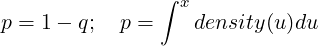
|
which If which=1, it computes p and q. If which=2, it computes x. For higher values of which it computes one the parameters characterizing the distribution using all the others, p, q, x.
p the probability ∫ xdensity(u)du
q = 1 - p
x the upper bound of the integral
status an integer which indicates on exit the success of the computation. (0) if calculation completed correctly. (-I) if the input parameter number I was out of range. (1) if the answer appears to be lower than the lowest search bound. (2) if the answer appears to be higher than the greatest search bound. (3) if p + q≠1.
bound is undefined if STATUS is 0. Bound exceeded by parameter number I if STATUS is negative. Lower search bound if STATUS is 1. Upper search bound if STATUS is 2.
void pnl_cdf_bet (int *which, double *p, double *q, double *x, double *y, double
*a, double *b, int *status, double *bound)
Description Cumulative Distribution Function BETA distribution.
void pnl_cdf_bin (int *which, double *p, double *q, double *x, double *xn, double
*pr, double *ompr, int *status, double *bound)
Description Cumulative Distribution Function BINa distribution.
void pnl_cdf_chi (int *which, double *p, double *q, double *x, double *df, int
*status, double *bound)
Description Cumulative Distribution Function CHI-Square distribution.
void pnl_cdf_chn (int *which, double *p, double *q, double *x, double *df, double
*pnonc, int *status, double *bound)
Description Cumulative Distribution Function Non-central Chi-Square distribution.
void pnl_cdf_f (int *which, double *p, double *q, double *x, double *dfn, double
*dfd, int *status, double *bound)
Description Cumulative Distribution Function F distribution.
void pnl_cdf_fnc (int *which, double *p, double *q, double *x, double *dfn, double
*dfd, double *pnonc, int *status, double *bound)
Description Cumulative Distribution Function Non-central F distribution.
void pnl_cdf_gam (int *which, double *p, double *q, double *x, double *shape,
double *rate, int *status, double *bound)
Description Cumulative Distribution Function GAMma distribution. Note that the
parameter rate is 1/scale. The density writes f(x) = 1∕(saΓ(a))xa-1e-x∕s with scale=s
and shape=1/rate=a.
void pnl_cdf_nbn (int *which, double *p, double *q, double *x, double *xn, double
*pr, double *ompr, int *status, double *bound)
Description Cumulative Distribution Function Negative BiNomial distribution.
void pnl_cdf_nor (int *which, double *p, double *q, double *x, double *mean,
double *sd, int *status, double *bound)
Description Cumulative Distribution Function NORmal distribution.
void pnl_cdf_poi (int *which, double *p, double *q, double *x, double *xlam, int
*status, double *bound)
Description Cumulative Distribution Function POIsson distribution.
void pnl_cdf_t (int *which, double *p, double *q, double *x, double *df, int *status,
double *bound)
Description Cumulative Distribution Function T distribution.
double pnl_cdfchi2n (double x, double df, double ncparam)
Description Compute the cumulative density function at x of the non central χ2
distribution with df degrees of freedom and non centrality parameter ncparam.
void pnl_cdfbchi2n (double x, double df, double ncparam, double beta, double *P)
Description Store in P the cumulative density function at x of the random variable
beta *X where X is non central χ2 random variable with df degrees of freedom and non
centrality parameter ncparam.
double pnl_normal_density (double x)
Description Normal density function.
double pnl_cdfnor (double x)
Description Cumulative normal distribution function.
double pnl_cdf2nor (double a, double b, double r)
Description Cumulative bivariate normal distribution function, returns
 ∫
-∞a ∫
-∞be-
∫
-∞a ∫
-∞be- dxdy.
dxdy.
double pnl_inv_cdfnor (double x)
Description Inverse of the cumulative normal distribution function.
The functionalities described in this chapter are declared in pnl/pnl_random.h.
Random number generators should be called through the new rng interface based on the PnlRng object. This interface uses reentrant functions and is suitable for multi-threaded applications.
The older rand interface is kept for compatibility purposes only and should not be used in new code.
| Random generator | index | Type | Info |
| KNUTH | PNL_RNG_KNUTH | pseudo | |
| MRGK3 | PNL_RNG_MRGK3 | pseudo | |
| MRGK5 | PNL_RNG_MRGK5 | pseudo | |
| SHUFL | PNL_RNG_SHUFL | pseudo | |
| L’ECUYER | PNL_RNG_L_ECUYER | pseudo | |
| TAUSWORTHE | PNL_RNG_TAUSWORTHE | pseudo | |
| MERSENNE | PNL_RNG_MERSENNE | pseudo | |
| SQRT | PNL_RNG_SQRT | quasi | |
| HALTON | PNL_RNG_HALTON | quasi | |
| FAURE | PNL_RNG_FAURE | quasi | |
| SOBOL_I4 | PNL_RNG_SOBOL_I4 | quasi | uses 32 bit intergers |
| SOBOL_I8 | PNL_RNG_SOBOL2_I8 | quasi | uses 64 bit intergers |
| NIEDERREITER | PNL_RNG_NIEDERREITER | quasi |
It is possible to create several random number generators each with its own state variable so that they can evolve independently in a shared memory environment. These generators are suitable for use in multi-threaded programs.
typedef struct _PnlRng PnlRng;
struct _PnlRng
{
PnlObject object;
int type; /*!< generator type *
void (*Compute)(PnlRng *g, double *sample); /*!< the function to compute the
next number in the sequence */
int rand_or_quasi; /*!< can be PNL_MC or PNL_QMC */
int dimension; /*!< dimension of the space in which we draw the samples */
int counter; /*!< counter = number of samples already drawn */
int has_gauss; /*!< Is a gaussian deviate available? */
double gauss; /*!< If has_gauss==1, gauss a gaussian sample */
int size_state; /*!< size in bytes of the state variable */
void *state; /*!< state of the random generator */
};
PnlRng * pnl_rng_create (int type)
Description Create a PnlRng corresponding to type which can be any of the values
PNL_RNG_XXX listed in Table 2 which correspond to pseudo random number
generators. Once a generator has been created, you must call pnl_rng_sseed before
using it.
void pnl_rng_sseed (PnlRng *rng, unsigned long int s)
Description Set the seed of the genrator rng using s. If s=0, then a default seed
(depending on the generator) is used.
int pnl_rng_sdim (PnlRng *rng, int dim)
Description Set the dimension of the state space for a QMC generator and initializes
it accordingly. Returns OK if the generator has been initialized properly and FAIL
otherwise.
PnlRng * pnl_rng_copy (const PnlRng *rng)
Description Create a copy of rng.
void pnl_rng_clone (PnlRng *dest, const PnlRng *src)
Description Copy the content of src into the already existing basis dest. On exit, src
and dest are identical but independent.
PnlRng * pnl_rng_dcmt_create_id (int id, ulong seed)
Description Create a generator with type PNL_RNG_DCMT and identifier id. Two
generators with different ids are independent. Note that the returned generator must
be initialized with pnl_rng_sseed before usage. The identifier id can for instance
correspond to the thread number or the processor rank in parallel computing.
PnlRng ** pnl_rng_dcmt_create_array_id (int start_id, int max_id, ulong
seed, int *count)
Description Create an array of generators with types PNL_RNG_DCMT and
identifiers linearly varying between start_id and max_id. The number of generators
created is max_id - start_id + 1. All the generators are independent. Note that each
generator of the returned array must be initialized with pnl_rng_sseed before usage.
PnlRng ** pnl_rng_dcmt_create_array (int n, ulong seed, int *count)
Description Create an array of n independent DCMT. seed is the seed used to
initialize the Mersenne Twister generator internally used to find new DCMT. On exit,
count contains the number of generators actually created. Before using the generators,
you must initialize each of them by calling the function pnl_rng_sseed count times.
Some auxiliary functions internally used (to be used with caution)
PnlRng * pnl_rng_new ()
Description Create an empty PnlRng .
void pnl_rng_init (PnlRng *rng, int type)
Description Initialize an empty PnlRng as returned by pnl_rng_new to become
a generator of type type which can be any of the values PNL_RNG_XXX
listed in Table 2 which correspond to pseudo random number generators. Calling
pnl_rng_create is equivalent to calling first pnl_rng_new and then pnl_rng_init.
PnlRng * pnl_rng_get_from_id (int id)
Description Return the global generator described by its macro name. The variable
id can be any of the values PNL_RNG_XXX listed in Table 2.
The following functions return one sample from the specified distribution.
int pnl_rng_bernoulli (double p, PnlRng *rng)
Description Generate a sample from the Bernouilli law on {0,1} with parameter p.
long pnl_rng_poisson (double lambda, PnlRng *rng)
Description Generate a sample from the Poisson law with parameter lambda.
double pnl_rng_exp (double lambda, PnlRng *rng)
Description Generate a sample from the Exponential law with parameter lambda.
double pnl_rng_dblexp (double lambda_p, double lambda_m, double p, PnlRng
*rng)
Description Generate a sample from the asymmetric exponential distribution with
density
|
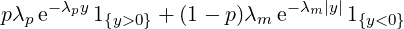
|
where λp > 0,λm > 0 and p ∈ [0,1].
double pnl_rng_uni (PnlRng *rng)
Description Generate a sample from the Uniform law on ]0,1].
double pnl_rng_uni_ab (double a, double b, PnlRng *rng)
Description Generate a sample from the Uniform law on [a,b].
double pnl_rng_normal (PnlRng *rng)
Description Generate a sample from the standard normal distribution.
double pnl_rng_lognormal (double m, double sigma2, PnlRng *rng)
Description Generate a sample from the log-normal distribution. The underlying normal
distribution has mean m and variance sigma2.
double pnl_rng_invgauss (double mu, double lambda, PnlRng *rng)
Description Generate a sample from the inverse Gaussian distribution with mean mu and
shape parameter lambda.
long pnl_rng_poisson1 (double lambda, double t,PnlRng *rng)
Description Generate a sample from a Poisson process with intensity lambda at time
t.
double pnl_rng_gamma (double a, double b, PnlRng *rng)
Description Generate a sample from the Γ(a,b) distribution.
double pnl_rng_chi2 (double df, PnlRng *rng)
Description Generate a sample from the centered χ2(df) distribution.
double pnl_rng_ncchi2 (double df, double xnonc, PnlRng *rng)
Description Generate a sample from the non central χ2 distribution with df degrees of
freedom and non central parameter xnonc.
double pnl_rng_bessel (double v, double a,PnlRng *rng)
Description Generate a sample from the Bessel distribution with parameters v > -1 and a
> 0.
double pnl_rng_gauss (int d, int create_or_retrieve, int index, PnlRng *rng)
Description The second argument can be either CREATE (to actually draw the sample) or
RETRIEVE (to retrieve that element of index index). With CREATE, it draws d random
normal variables and stores them for future usage. They can be withdrawn using RETRIEVE
with the index of the number to be retrieved.
The following functions take an already existing PnlVect *as first argument and fill each entry of the vector with a sample from the specified distribution. All the entries are independent. The difference between n-samples from a distribution in dimension 1, and one sample from the same distribution in dimension n only matters when using a quasi random number generator.
void pnl_vect_rng_bernoulli (PnlVect *V, int samples, double a, double b, double
p, PnlRng *rng)
Description Simulate an i.i.d. sample from the Bernoulli distribution with values in
a,b and parameter p. The result is stored in V.
void pnl_vect_rng_bernoulli_d (PnlVect *V, int dimension, const PnlVect *a,
const PnlVect *b, const PnlVect *p, PnlRng *rng)
Description Simulate a random vector according to the Bernoulli distribution with
values in {a,b} and parameter p. The result is stored in V, ie. V(i) follows a Bernoulli
distribution on {a(i), b(i)} with parameter p(i).
void pnl_vect_rng_poisson (PnlVect *V, int samples, double lambda, PnlRng
*rng)
Description Simulate an i.i.d. sample from the Poisson distribution with parameter
lambda. The result is stored in V. Note that, we are using double based vectors and not
integer based vectors.
void pnl_vect_rng_poisson_d (PnlVect *V, int dimension, const PnlVect
*lambda, PnlRng *rng)
Description Simulate a random vector according to the Poisson distribution with
vector parameter lambda. The result is stored in V, ie. V(i) follows a Poisson
distribution with parameter lambda(i). Note that, we are using double based vectors
and not integer based vectors.
void pnl_vect_rng_uni (PnlVect *G, int samples, double a, double b, PnlRng
*rng)
Description G is a vector of independent and identically distributed samples from
the uniform distribution on [a,b].
void pnl_vect_rng_normal (PnlVect *G, int samples, PnlRng *rng)
Description G is a vector of independent and identically distributed samples from
the standard normal distribution.
void pnl_vect_rng_uni_d (PnlVect *G, int d, double a, double b, PnlRng *rng)
Description G is a sample from the uniform distribution on [a,b]d.
void pnl_vect_rng_normal_d (PnlVect *G, int d, PnlRng *rng)
Description G is a sample from the d-dimensional standard normal distribution.
The following functions take an already existing PnlMat *as first argument and fill each entry of the matrix with a sample from the specified distribution. All the entries are independent. On return, the matrix M is of size samples x dimension. The rows of M are independent and identically distributed. Each row is a sample from the given law in dimension dimension.
void pnl_mat_rng_uni (PnlMat *M, int samples, int d, const PnlVect *a, const
PnlVect *b, PnlRng *rng)
Description M contains samples samples from the uniform distribution on
∏
i=1d[ai,bi].
void pnl_mat_rng_uni2 (PnlMat *M, int samples, int d, double a, double b,
PnlRng *rng)
Description M contains samples samples from the uniform distribution on [a,b]d.
void pnl_mat_rng_normal (PnlMat *M, int samples, int d, PnlRng *rng)
Description M contains samples samples from the d-dimensional standard normal
distribution.
void pnl_mat_rng_bernoulli (PnlMat *M, int samples, int dimension, const
PnlVect *a, const PnlVect *b, const PnlVect *p, PnlRng *rng)
Description Compute a random matrix with independent rows, each of them having
a vector Bernoulli distribution, ie. M(i, j) follows a Bernoulli distribution on {a(j), b(j)}
with parameter p(j).
void pnl_mat_rng_poisson (PnlMat *M, int samples, int dimension, const
PnlVect *lambda, PnlRng *rng)
Description Compute a random matrix with independent rows, each of them having
a vector Poisson distribution, ie. M(i, j) follows a Poisson distribution with parameter
p(j).
Some examples
#include <stdlib.h>
#include "pnl/pnl_random.h"
int main ()
{
int i, M;
PnlRng *rng = pnl_rng_create(PNL_RNG_MERSENNE);
PnlVect *v = pnl_vect_new();
M = 10000;
/* rng must be initialized. When sseed=0, a default
value depending on the generator is used */
pnl_rng_sseed(rng, 0);
for (i=0 ; i<M ; i++)
{
/* Simulates a normal random vector in R^{10} */
pnl_vect_rng_normal(v, 10, rng);
/* Do something with v */
}
pnl_vect_free(&v);
pnl_rng_free(&rng); /* Frees the generator */
exit(0);
}
#include <stdlib.h>
#include <time.h>
#include "pnl/pnl_random.h"
int main ()
{
int i, M;
double E;
PnlRng *rng = pnl_rng_create(PNL_RNG_MERSENNE);
M = 10000;
/* rng must be initialized. */
pnl_rng_sseed(rng, time (NULL));
for (i=0 ; i<M ; i++)
{
/* Simulates an exponential random variable */
E = pnl_rng_exp(1, rng);
/* Do something with E */
}
pnl_rng_free(&rng); /* Frees the generator */
exit(0);
}
Note: For backward compatibility with older versions of the PNL, we still provide the old rand interface to random number generation although we strongly encourage users to use the new rng interface (see section 6.1).
Every generator is identified by an integer valued macro. One must NOT refer to a generator using directly the value of the macro PNL_RNG_XXX because there is no warranty that the order used to store the generators will remain the same in future releases. Instead, one should call generators directly using their macro names.
The initial seeds of all the generators are fixed by the function pnl_rand_init but you can change it by calling pnl_rand_sseed.
Before starting to use random number generators, you must initialize them by calling
int pnl_rand_init (int type_generator, int simulation_dim, long samples)
Description It resets the sample counter to 0 and checks that the generator described
by type_generator can actually generate samples in dimension simulation_dim and
fixes the seed.
int pnl_rand_or_quasi (int type_generator)
Description Return the type the generator of index type_generator, PNL_MC or
PNL_QMC
void pnl_rand_sseed ((int type_generator, unsigned long int seed))
Description It sets the seed of the generator type_generator with seed.
const char * pnl_rand_name (int type_generator)
Description Return the name of the generator of index type_generator
Once a generator is chosen, there are several functions available in the library to draw samples according to a given law.
The following functions return one sample from a specified law.
int pnl_rand_bernoulli (double p, int type_generator)
Description Generate a sample from the Bernouilli law on {0,1} with parameter p.
long pnl_rand_poisson (double lambda, int type_generator)
Description Generate a sample from the Poisson law with parameter lambda.
double pnl_rand_exp (double lambda, int type_generator)
Description Generate a sample from the Exponential law with parameter lambda.
double pnl_rand_uni (int type_generator)
Description Generate a sample from the Uniform law on [0,1].
double pnl_rand_uni_ab (double a, double b, int type_generator)
Description Generate a sample from the Uniform law on [a,b].
double pnl_rand_normal (int type_generator)
Description Generate a sample from the standard normal distribution.
long pnl_rand_poisson1 (double lambda, double t, int type_generator)
Description Generate a sample from a Poisson process with intensity lambda at time
t.
double pnl_rand_gamma (double a, double b, int type_generator)
Description Generate a sample from the Γ(a,b) distribution.
double pnl_rand_chi2 (double n, int type_generator)
Description Generate a sample from the centered χ2(n) distribution.
double pnl_rand_bessel (double v, double a, int generator)
Description Generate a sample from the Bessel distribution with parameters v > -1
and a > 0.
The following functions take an already existing PnlVect * as its first argument and fill each entry of the vector with a sample from the specified law. All the entries are independent. The difference between n-samples from a distribution in dimension 1, and one sample from the same distribution in dimension n only matters when using a Quasi random number generator.
void pnl_vect_rand_uni (PnlVect *G, int samples, double a, double b, int
type_generator)
Description G is a vector of independent and identically distributed samples from
the uniform distribution on [a,b].
void pnl_vect_rand_normal (PnlVect *G, int samples, int generator)
Description G is a vector of independent and identically distributed samples from
the standard normal distribution.
void pnl_vect_rand_uni_d (PnlVect *G, int d, double a, double b, int
type_generator)
Description G is a sample from the uniform distribution on [a,b]d.
void pnl_vect_rand_normal_d (PnlVect *G, int d, int generator)
Description G is a sample from the d-dimensional standard normal distribution.
The following functions take an already existing PnlMat * as first argument and fill each entry of the vector with a sample from the specified law. All the entries are in-dependant. On return, the matrix M is of size samples x dimension. The rows of M are independently and identically distributed. Each row is a sample from the given law in dimension dimension.
void pnl_mat_rand_uni (PnlMat *M, int samples, int d, const PnlVect *a, const
PnlVect *b, int type_generator)
Description M contains samples samples from the uniform distribution on
∏
i=1d[ai,bi].
void pnl_mat_rand_uni2 (PnlMat *M, int samples, int d, double a, double b, int
type_generator)
Description M contains samples samples from the uniform distribution on [a,b]d.
void pnl_mat_rand_normal (PnlMat *M, int samples, int d, int type_generator)
Description M contains samples samples from the d-dimensional standard normal
distribution.
Because of the use of Quasi random number generators, you may need to draw a set of samples at once because they represent one sample from a multi-dimensional distribution. The following function enables to draw one sample from the dimension-dimensional standard normal distribution and store it so that you can access the elements individually afterwards.
double pnl_rand_gauss (int d, int create_or_retrieve, int index, int
type_generator)
Description The second argument can be either CREATE (to actually draw the
sample) or RETRIEVE (to retrieve that element of index index). With CREATE,
it draws d random normal variables and stores them for future usage. They can be
withdrawn using RETRIEVE with the index of the number to be retrieved.
To use these functionalities, you should include pnl/pnl_basis.h.
struct PnlBasis_t {
PnlObject object;
/** The basis type */
int id;
/** The string to label the basis */
const char *label;
/** The number of variates */
int nb_variates;
/** The total number of elements in the basis */
int nb_func;
/** The tensor matrix */
PnlMatInt *T;
/** The sparse Tensor matrix */
PnlSpMatInt *SpT;
/** The number of functions in the tensor #T */
int len_T;
/** The i-th element of the one dimensional basis. */
double (*f)(double x, int i);
/** The first derivative of i-th element of the one dimensional basis */
double (*Df)(double x, int i);
/** The second derivative of the i-th element of the one dimensional basis */
double (*D2f)(double x, int i);
/** TRUE if the basis is reduced */
int isreduced;
/** The center of the domain */
double *center;
/** The inverse of the scaling factor to map the domain to [-1, 1]^nb_variates */
double *scale;
/** An array of additional functions */
PnlRnFuncR *func_list;
/** The number of functions in #func_list */
int len_func_list;
};
A PnlBasis is a family of multivariate functions with real values. Tow different kinds of functions can be stored in these families: tensor functions — originally, this was the only possibility, and standard multivariate function typed as PnlRnFuncR.
Tensor functions. Tensors functions are built as a tensor product of one dimensional elements. Hence, we only need a tensor matrix T to describe a multi-dimensional basis in terms of the one dimensional one. These tensors functions can be easily evaluated and differentiated twice, see pnl_basis_eval, pnl_basis_eval_vect, pnl_basis_eval_D, pnl_basis_eval_D_vect, pnl_basis_eval_D2, pnl_basis_eval_D2_vect, pnl_basis_eval_derivs, pnl_basis_eval_derivs_vect.
The two tensors T and SpT do actually store the same information — T(i,j) is the degree w.r.t the j-th variable in the i-th function. Originally, we were only using the dense representation T, which is far more convenient to use when building the basis but it slows down the evaluation of the basis by a great deal. To overcome this lack of efficiency, a sparse storage has been added.
| PNL_BASIS_CANONICAL |
| for the Canonical polynomials |
| PNL_BASIS_HERMITE |
| for the Hermite polynomials |
| PNL_BASIS_TCHEBYCHEV |
| for the Tchebychev polynomials |
The Hermite polynomials are defined by
 |
If G is a real valued standard normal random variable, E[Hn(G)Hm(G)] = n!1 .
.
Standard multivariate functions. These functions are supposed to be PnlRnFuncR.
To make this toolbox more complete, it is now possible to add some extra functions, which are not tensor product. They are stored using an independent mechanism in func_list. These additional functions are only taken into account by the methods pnl_basis_i, pnl_basis_i_vect, pnl_basis_eval and pnl_basis_eval_vect. Note in particular that it is not possible to differentiate these functions. To add an extra function to an existing PnlBasis, call the function pnl_basis_add_function.
int pnl_basis_type_register (const char *name, double (*f)(double, int), double
(*Df)(double, int), double (*D2f)(double, int))
Description Register a new basis type and return the index to be passed to pnl_basis_create .
The variable name is a unique string identifier of the family. The variables f, Df, D2f are the
one dimensional basis functions, its first and second order derivatives. Each of these functions
must return a double and take two arguments : the first one is the point at which evaluating
the basis functions, the second one is the index of function. Here is a toy example to show
how the canonical basis is registered (this family is actually already available with
the id PNL_BASIS_CANONICAL, so the following example may look a little
fake)
double f(double x, int n) { return pnl_pow_i(x, n); }
double Df(double x, int n) { return n * pnl_pow_i(x, n-1); }
double f(double x, int n) { return n * (n-1) * pnl_pow_i(x, n-2); }
int id = pnl_basis_register ("Canonic", f, Df, D2f);
/*
* B is the Canonical basis of polynomials with degree less or equal than 2 in
* dimension 5.
*/
PnlBasis *B = pnl_basis_create_from_degree (id, 2, 5);
PnlBasis * pnl_basis_new ()
Description Create an empty PnlBasis .
void pnl_basis_print (const PnlBasis *B)
Description Print the characteristics of a basis.
PnlBasis * pnl_basis_create (int index, int nb_func, int nb_variates)
Description Create a PnlBasis for the family defined by index (see Table 3 and
pnl_basis_type_register) with nb_variates variates. The basis will contain nb_func.
PnlBasis * pnl_basis_create_from_degree (int index, int degree, int nb_variates)
Description Create a PnlBasis for the family defined by index (see Table 3 and
pnl_basis_type_register) with total degree less or equal than degree and nb_variates
variates. The total degree is the sum of the partial degrees.
For instance, calling pnl_basis_create_from_degree (index, 2, 4) is equivalent to calling
pnl_basis_create_from_tensor (index, T) where T is given by

PnlBasis * pnl_basis_create_from_prod_degree (int index, int degree, int
nb_variates)
Description Create a PnlBasis for the family defined by index (see Table 3 and
pnl_basis_type_register) with total degree less or equal than degree and nb_variates
variates. The total degree is the product of MAX(1, d_i) where the d_i are the partial
degrees.
PnlBasis * pnl_basis_create_from_tensor (int index, PnlMatInt *T)
Description Create a PnlBasis for the polynomial family defined by index (see Table 3)
using the basis described by the tensor matrix T. The number of lines of T is the number of
functions of the basis whereas the numbers of columns of T is the number of variates of the
functions. Note that T is not copied inside this function but only its address is stored, so
never free T. It will be freed when calling pnl_basis_free on the returned object.
i
Here is an example of a tensor matrix. Assume you are working with three variate functions,
the basis { 1, x, y, z, x^2, xy, yz, z^3} is decomposed in the one dimensional
canonical basis using the following tensor matrix

void pnl_basis_add_function (PnlBasis *b, PnlRnFuncR *f)
Description Add the function f to the already existing basis b.
void pnl_basis_clone (PnlBasis *dest, const PnlBasis *src)
Description Clone src into dest. The basis dest must already exist before calling this
function. On exit, dest and src are identical and independent.
PnlBasis * pnl_basis_copy (const PnlBasis *B)
Description Create a copy of B.
void pnl_basis_set_from_tensor (PnlBasis *b, int index, const PnlMatInt
*T)
Description Set an alredy existing basis b to a polynomial family defined by index (see
Table 3) using the basis described by the tensor matrix T. The number of lines of T is the
number of functions of the basis whereas the numbers of columns of T is the number of
variates of the functions.
Same function as pnl_basis_create_from_tensor except that it operates on an already
existing basis.
PnlBasis * pnl_basis_create_from_hyperbolic_degree (int index, double degree,
double q, int n)
Description Create a sparse basis of polynomial with n variates. We give the example of the
Canonical basis. A canonical polynomial with n variates writes X1α1X2α2…Xnαn. To be a
member of the basis, it must satisfy 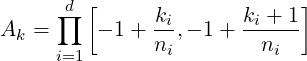1∕q ≤ degree. This kind of basis based on
an hyperbolic set of indices gives priority to polynomials associated to low order
interaction.
void pnl_basis_free (PnlBasis **basis)
Description Free a PnlBasis created by pnl_basis_create. Beware that basis is the address
of a PnlBasis *.
void pnl_basis_del_elt (PnlBasis *B, const PnlVectInt *d)
Description Remove the function defined by the tensor product d from an existing basis
B.
void pnl_basis_del_elt_i (PnlBasis *B, int i)
Description Remove the i-th element of basis B.
void pnl_basis_add_elt (PnlBasis *B, const PnlVectInt *d)
Description Add the function defined by the tensor d to the Basis B.
Functional regression based on a least square approach often leads to ill conditioned linear systems. One way of improving the stability of the system is to use centered and renormalised polynomials so that the original domain of interest D (a subset of ℝd) is mapped to [-1,1]d. If the domain D is rectangular and writes [a,b] where a,b ∈ ℝd, the mapping is done by
| (1) |
void pnl_basis_set_domain (PnlBasis *B, const PnlVect *a, const PnlVect *b)
Description This function declares B as a centered and normalised basis as defined by
Equation 1. Calling this function is equivalent to calling pnl_basis_set_reduced with
center=(b+a)/2 and scale=(b-a)/2.
void pnl_basis_set_reduced (PnlBasis *B, const PnlVect *center, const PnlVect
*scale)
Description This function declares B as a centered and normalised basis using the
mapping
 |
int pnl_basis_fit_ls (PnlBasis *P, PnlVect *coef, PnlMat *x, PnlVect *y)
Description Compute the coefficients coef defined by
|
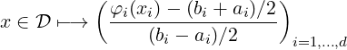
|
where N is the number of functions to regress upon and n is the number of points at which the values of the original function are known. Pj is the j - th basis function. Each row of the matrix x defines the coordinates of one point xi. The function to be approximated is defined by the vector y of the values of the function at the points x.
double pnl_basis_ik_vect (const PnlBasis *b, const PnlVect *x, int i, int
k)
Description An element of a basis writes ∏
l=0nbvariatesϕl(xl) where the ϕ’s are one
dimensional polynomials. This functions computes the therm ϕk of the i-th basis function at
the point x.
double pnl_basis_i_vect (const PnlBasis *b, const PnlVect *x, int i)
Description If b is composed of f0,…,fnb_func-1, then this function returns fi(x).
double pnl_basis_i_D_vect (const PnlBasis *b, const PnlVect *x, int i, int
j)
Description If b is composed of f0,…,fnb_func-1, then this function returns ∂xjfi(x).
double pnl_basis_i_D2_vect (const PnlBasis *b, const PnlVect *x, int i, int j1, int
j2)
Description If b is composed of f0,…,fnb_func-1, then this function returns ∂2xj1,xj2fi(x).
void pnl_basis_eval_derivs_vect (const PnlBasis *b, const PnlVect *coef, const
PnlVect *x, double *fx, PnlVect *Dfx, PnlMat *D2fx)
Description Compute the function, the gradient and the Hessian matrix of
∑
k=0ncoefkPk(⋅) at the point x. On output, fx contains the value of the function, Dfx its
gradient and D2fx its Hessian matrix. This function is optimized and performs much
better than calling pnl_basis_eval, pnl_basis_eval_D and pnl_basis_eval_D2
sequentially.
double pnl_basis_eval_vect (const PnlBasis *basis, const PnlVect *coef, const PnlVect
*x)
Description Compute the linear combination of P_k(x) defined by coef. Given
the coefficients computed by the function pnl_basis_fit_ls, this function returns
∑
k=0ncoefkPk(x).
double pnl_basis_eval_D_vect (const PnlBasis *basis, const PnlVect *coef, const
PnlVect *x, int i)
Description Compute the derivative with respect to x_i of the linear combination of
P_k(x) defined by coef. Given the coefficients computed by the function pnl_basis_fit_ls,
this function returns ∂xi ∑
k=0ncoefkPk(x) The index i may vary between 0 and
P->nb_variates - 1.
double pnl_basis_eval_D2_vect (const PnlBasis *basis, const PnlVect *coef, const
PnlVect *x, int i, int j)
Description Compute the derivative with respect to x_i of the linear combination of
P_k(x) defined by coef. Given the coefficients computed by the function pnl_basis_fit_ls,
this function returns ∂xi∂xj ∑
k=0ncoefkPk(x). The indices i and j may vary between 0 and
P->nb_variates - 1.
The following functions are provided for compatibility purposes but are marked as deprecated. Use the functions with the _vect extension.
double pnl_basis_ik (const PnlBasis *b, const double *x, int i, int k)
Description Same as function pnl_basis_ik_vect but takes a C array as the point of
evaluation.
double pnl_basis_i (PnlBasis *b, double *x, int i)
Description Same as function pnl_basis_i_vect but takes a C array as the point of
evaluation.
double pnl_basis_i_D ( const PnlBasis *b, const double *x, int i, int j )
Description Same as function pnl_basis_i_D_vect but takes a C array as the point
of evaluation.
double pnl_basis_i_D2 (const PnlBasis *b, const double *x, int i, int j1, int j2)
Description Same as function pnl_basis_i_D2_vect but takes a C array as the point
of evaluation.
double pnl_basis_eval (PnlBasis *P, PnlVect *coef, double *x)
Description Same as function pnl_basis_eval_vect but takes a C array as the point
of evaluation.
double pnl_basis_eval_D (PnlBasis *P, PnlVect *coef, double *x, int i)
Description Same as function pnl_basis_eval_D_vect but takes a C array as the
point of evaluation.
double pnl_basis_eval_D2 (PnlBasis *P, PnlVect *coef, double *x, int i, int j)
Description Same as function pnl_basis_eval_D2_vect but takes a C array as the
point of evaluation.
void pnl_basis_eval_derivs (PnlBasis *P, PnlVect *coef, double *x, double *fx,
PnlVect *Dfx, PnlMat *D2fx)
Description Same as function pnl_basis_eval_derivs_vect but takes a C array as
the point of evaluation.
To use these functionalities, you should include pnl/pnl_integration.h.
Numerical integration methods are designed to numerically evaluate the integral over a finite or non finite interval (resp. over a square) of real valued functions defined on ℝ (resp. on ℝ2).
typedef struct {
double (*function) (double x, void *params);
void *params;
} PnlFunc;
typedef struct {
double (*function) (double x, double y, void *params);
void *params;
} PnlFunc2D;
We provide the following two macros to evaluate a PnlFunc or PnlFunc2D at a given point
#define PNL_EVAL_FUNC(F, x) (*((F)->function))(x, (F)->params) #define PNL_EVAL_FUNC2D(F, x, y) (*((F)->function))(x, y, (F)->params)
double pnl_integration (PnlFunc *F, double x0, double x1, int n, char *meth)
Description Evaluate ∫
x0x1F using n discretization steps. The method used to
discretize the integral is defined by meth which can be "rect" (rectangle rule), "trap"
(trapezoidal rule), "simpson" (Simpson’s rule).
double pnl_integration_2d (PnlFunc2D *F, double x0, double x1, double y0,
double y1, int nx, int ny, char *meth)
Description Evaluate ∫
[x0,x1]×[y0,y1]F using nx (resp. ny) discretization steps for [x0,
x1] (resp. [y0, y1]). The method used to discretize the integral is defined by meth which
can be "rect" (rectangle rule), "trap" (trapezoidal rule), "simpson" (Simpson’s rule).
int pnl_integration_qng (PnlFunc *F, double x0, double x1, double epsabs, double
epsrel, double *result, double *abserr, int *neval)
Description Evaluate ∫
x0x1F with an absolute error less than espabs and a relative
error less than esprel. The value of the integral is stored in result, while the variables
abserr and neval respectively contain the absolute error and the number of function
evaluations. This function returns OK if the required accuracy has been reached and
FAIL otherwise. This function uses a non-adaptive Gauss Konrod procedure (qng routine
from QuadPack).
int pnl_integration_GK (PnlFunc *F, double x0, double x1, double epsabs, double
epsrel, double *result, double *abserr, int *neval)
Description This function is a synonymous of pnl_integration_qng and is only
available for backward compatibility. It is deprecated, please use pnl_integration_qng
instead.
int pnl_integration_qng_2d (PnlFunc2D *F, double x0, double x1, double y0,
double y1, double epsabs, double epsrel, double *result, double *abserr, int *neval)
Description Evaluate ∫
[x0,x1]×[y0,y1]F with an absolute error less than espabs and a
relative error less than esprel. The value of the integral is stored in result, while the
variables abserr and neval respectively contain the absolute error and the number of
function evaluations. This function returns OK if the required accuracy has been reached
and FAIL otherwise.
int pnl_integration_GK2D (PnlFunc *F, double x0, double x1, double epsabs,
double epsrel, double *result, double *abserr, int *neval)
Description This function is a synonymous of pnl_integration_qng_2d and
is only available for backward compatibility. It is deprecated, please use
pnl_integration_qng_2d instead.
int pnl_integration_qag (PnlFunc *F, double x0, double x1, double epsabs, int
limit, double epsrel, double *result, double *abserr, int *neval)
Description Evaluate ∫
x0x1F with an absolute error less than espabs and a
relative error less than esprel. x0 and x1 can be non finite (i.e. PNL_NEGINF or
PNL_POSINF). The value of the integral is stored in result, while the variables abserr
and neval respectively contain the absolute error and the number of iterations. limit is
the maximum number of subdivisions of the interval (x0,x1) used during the integration.
If on input, limit 0, then 750 subdivisions are used. This function returns OK if the
required accuracy has been reached and FAIL otherwise. This function uses some
adaptive procedures (qags and qagi routines from QuadPack). This function is able to
handle functions F with integrable singularities on the interval [x0,x1].
int pnl_integration_qagp (PnlFunc *F, double x0, double x1, const PnlVect
*singularities, double epsabs, int limit, double epsrel, double *result, double *abserr, int
*neval)
Description Evaluate ∫
x0x1F for a function F with known singularities listed in
singularities. singularities must be a sorted vector which does not contain x0 nor x1. x0
and x1 must be finite. The value of the integral is stored in result, while the variables
abserr and neval respectively contain the absolute error and the number of iterations.
limit is the maximum number of subdivisions of the interval (x0,x1) used during the
integration. If on input, limit = 0, then 750 subdivisions are used. This function returns
OK if the required accuracy has been reached and FAIL otherwise. This function uses
some adaptive procedures (qagp routine from QuadPack). This function is able to handle
functions F with integrable singularities on the interval [x0,x1].
This toolbox uses C version of the Fortran FFTPack library available on http://www.netlib.org/fftpack.
The forward Fourier transform of a vector c is defined by
 |
The inverse Fourier transform enables to recover c from z and is defined by
|
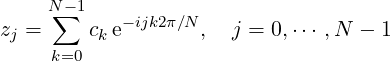
|
Note that the inverse Fourier transform is scaled by 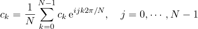, such that the inverse Fourier transform applies to the Fourier transform just yields the original vector.
The coefficients of the Fourier transform of a real function satisfy the following relation
| (2) |
where N is the number of discretization points.
A few remarks on the FFT of real functions and its inverse transform:
We only need half of the coefficients.
When a value is known to be real, its imaginary part is not stored. So the imaginary part of the zero-frequency component is never stored as it is known to be zero.
For a sequence of even length the imaginary part of the frequency n∕2 is not stored either, since the symmetry (2) implies that this is purely real too.
FFTPack storage The functions use the fftpack storage convention for half-complex sequences. In this convention, the half-complex transform of a real sequence is stored with frequencies in increasing order, starting from zero, with the real and imaginary parts of each frequency in neighboring locations.
The storage scheme is best shown by some examples. The table below shows the output for an odd-length sequence, n = 5. The two columns give the correspondence between the 5 values in the half-complex sequence (stored in a PnlVect V ) and the values (PnlVectComplex C) that would be returned if the same real input sequence were passed to pnl_fft as a complex sequence (with imaginary parts set to 0),
| (3) |
The elements of index greater than N∕2 of the complex array, as C(3) and C(4) are filled in using the symmetry condition.
The next table shows the output for an even-length sequence, n = 6. In the even case, there are two values which are purely real,
| (4) |
To use the following functions, you should include pnl/pnl_fft.h.
All FFT functions need some extra memory to perform their computations. This is automatically handled by all the functions but you can these repeatedly, for instance inside a Monte Carlo loop, you should allocate a workspace once and for all and use the same at every iteration. In this case, use the functions defined in Section 9.2.2.
int pnl_fft_inplace (PnlVectComplex *data)
Description Compute the FFT of data in place. The original content of data is lost.
int pnl_ifft_inplace (PnlVectComplex *data)
Description Compute the inverse FFT of data in place. The original content of data
is lost.
int pnl_fft (const PnlVectComplex *in, PnlVectComplex *out)
Description Compute the FFT of in and stores it into out.
int pnl_ifft (const PnlVectComplex *in, PnlVectComplex *out)
Description Compute the inverse FFT of in and stores it into out.
int pnl_fft2 (double *re, double *im, int n)
Description Compute the FFT of the vector of length n whose real (resp. imaginary)
parts are given by the arrays re (resp. im). The real and imaginary parts of the FFT
are respectively stored in re and im on output.
int pnl_ifft2 (double *re, double *im, int n)
Description Compute the inverse FFT of the vector of length n whose real (resp.
imaginary) parts are given by the arrays re (resp. im). The real and imaginary parts of
the inverse FFT are respectively stored in re and im on output.
int pnl_real_fft (const PnlVect *in, PnlVectComplex *out)
Description Compute the FFT of the real valued sequence in and stores it into out.
int pnl_real_ifft (const PnlVectComplex *in, PnlVect *out)
Description Compute the inverse FFT of in and stores it into out. The vector in is
supposed to be the FFT of a real valued vector.
int pnl_real_fft_inplace (double *data, int n)
Description Compute the FFT of the real valued vector data of length n. The result
is stored in data using the FFTPack storage described above, see 9.1.0.0.
int pnl_real_ifft_inplace (double *data, int n)
Description Compute the inverse FFT of the vector data of length n. data is supposed
to be the FFT coefficients a real valued sequence stored using the FFTPack storage.
On output, data contains the inverse FFT.
int pnl_real_fft2 (double *re, double *im, int n)
Description Compute the FFT of the real vector re of length n. im is only used on
output to store the imaginary part the FFT. The real part is stored into re
int pnl_real_ifft2 (double *re, double *im, int n)
Description Compute the inverse FFT of the vector re + i * im of length n, which is
supposed to be the FFT of a real valued sequence. On exit, im is unused.
int pnl_fft2d_inplace (PnlMatComplex *data)
Description Compute the 2D FFT of data. This function applies a 1D FFT to each
row of the matrix and then a 1D FFT to each column of the modified matrix.
int pnl_ifft2d_inplace (PnlMatComplex *data)
Description Compute the inverse 2D FFT of data. This function is the inverse of the
function pnl_fft2d_inplace.
int pnl_fft2d (const PnlMatComplex *in, PnlMatComplex *out)
Description Compute the 2D FFT of in and stores it into out.
int pnl_ifft2d (const PnlMatComplex *in, PnlMatComplex *out)
Description Compute the inverse 2D FFT of in and stores it into out.
int pnl_real_fft2d (const PnlMat *in, PnlMatComplex *out)
Description Compute the 2D FFT of the real matrix in and stores it into out.
int pnl_real_ifft2d (const PnlMatComplex *in, PnlMatComplex *out)
Description Compute the inverse 2D FFT of the complex matrix in which is known
to be the forward 2D FFT a real matrix. The result id stored it into out. Note that this
function modifies the input matrix in.
double* pnl_fft_alloc_wspace (const char *func, int n)
Description Return an allocated workspace array ready yo use for function func and
input data of size n
int pnl_fft_inplace_with_wspace (PnlVectComplex *data, double *wspace)
Description Compute the FFT of data in place. The original content of data is lost.
int pnl_ifft_inplace_with_wspace (PnlVectComplex *data, double *wspace)
Description Compute the inverse FFT of data in place. The original content of data
is lost.
int pnl_real_fft_inplace_with_wspace (double *data, double *wspace, int n)
Description Compute the inverse FFT of in and stores it into out. The vector in is
supposed to be the FFT of a real valued vector.
int pnl_real_ifft_inplace_with_wspace (double *data, double *wspace, int n)
Description Compute the inverse FFT of the vector data of length n. data is supposed
to be the FFT coefficients a real valued sequence stored using the FFTPack storage.
On output, data contains the inverse FFT.
int pnl_real_fft_with_wspace (const PnlVect *in, PnlVectComplex *out, double
*wspace)
Description Compute the FFT of the real valued sequence in and stores it into out.
int pnl_real_ifft_with_wspace (const PnlVectComplex *in, PnlVect *out, double
*wspace)
Description Compute the inverse FFT of in and stores it into out. The vector in is
supposed to be the FFT of a real valued vector.
For a real valued function f such that t⟼f(t)e-σct is integrable over ℝ+, we can define its Laplace transform
|
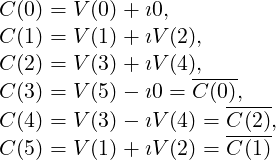
|
To use the following functions, you should include pnl/pnl_laplace.h.
typedef struct
{
dcomplex (*F) (dcomplex x, void *params);
void *params;
} PnlCmplxFunc;
double pnl_ilap_euler (PnlCmplxFunc *fhat, double t, int N, int M)
Description Compute f(t) where f is given by its Laplace transform fhat by
numerically inverting the Laplace transform using Euler’s summation. The values N =
M = 15 usually give a very good accuracy. For more details on the accuracy of the
method.
double pnl_ilap_cdf_euler (PnlCmplxFunc *fhat, double t, double h, int N, int
M)
Description Compute the cumulative distribution function F(t) where F(x) =
∫
0xf(t)dt and f is a density function with values on the positive real linegiven by its
Laplace transform fhat. The computation is carried out by numerical inversion of the
Laplace transform using Euler’s summation. The values N = M = 15 usually give a
very good accuracy. The parameter h is the discretization step, the algorithm is very
sensitive to the choice of h.
double pnl_ilap_fft (PnlVect *res, PnlCmplxFunc *fhat, double T, double eps)
Description Compute f(t) for t ∈ [h,T] on a regular grid and stores the values in
res, where h = T∕size(res). The function f is defined by its Laplace transform fhat,
which is numerically inverted using a Fast Fourier Transform algorithm. The size of res
is related to the choice of the relative precision eps required on the value of f(t) for all
t ≤ T.
double pnl_ilap_gs (PnlFunc *fhat, double t, int n)
Description Compute f(t) where f is given by its Laplace transform fhat by
numerically inverting the Laplace transform using a weighted combination of different
Gaver Stehfest’s algorithms. Note that this function does not need the complex valued
Laplace transform but only the real valued one. n is the number of terms used in the
weighted combination.
double pnl_ilap_gs_basic (PnlFunc *fhat, double t, int n)
Description Compute f(t) where f is given by its Laplace transform fhat by
numerically inverting the Laplace transform using Gaver Stehfest’s method. Note that
this function does not need the complex valued Laplace transform but only the real
valued one. n is the number of iterations of the algorithm. Note : This function
is provided for test purposes only. The function pnl_ilap_gs gives far more accurate
results.
To use these functionalities, you should include pnl/pnl_integration.h.
These functions are designed for numerically solving n-dimensional first order ordinary differential equation of the general form
 |
The system of equations is defined by the following structure
typedef struct
{
void (*F) (int neqn, double t, const double *y, double *yp, void *params);
int neqn;
void *params;
} PnlODEFunc ;
int neqn
Description Number of equations
void * params
Description An untyped structure used to pass extra arguments to the function f
defining the system
void (* F) (int neqn, double t, const double *y, double *yp, void *params)
Description After calling the fuction, yp should be defined as follows yp_i = f_i(neqn,
t, y, params). y and yp should be both of size neqn
We provide the following macro to evaluate a PnlODEFunc at a given point
#define PNL_EVAL_ODEFUNC(Fstruct, t, y, yp) \ (*((Fstruct)->F))((Fstruct)->neqn, t, y, yp, (Fstruct)->params)
int pnl_ode_rkf45 (PnlODEFunc *f, double *y, double t, double t_out, double relerr,
double abserr, int *flag)
Description This function computes the solution of the system defined by the PnlODEFunc
f at the point t_out. On input, (t,y) should be the initial condition, abserr,relerr are the
maximum absolute and relative errors for local error tests (at each step, abs(local error)
should be less that relerr * abs(y) + abserr). Note that if abserr = 0 or relerr = 0 on
input, an optimal value for these variables is computed inside the function The
function returns an error OK or FAIL. In case of an OK code, the y contains the
solution computed at t_out, in case of a FAIL code, flag should be examined to
determine the reason of the error. Here are the different possible values for flag
flag = 2 : integration reached t_out, it indicates successful return and is the normal mode for continuing integration.
flag = 3 : integration was not completed because relative error tolerance was too small. relerr has been increased appropriately for continuing.
flag = 4 : integration was not completed because more than 3000 derivative evaluations were needed. this is approximately 500 steps.
flag = 5 : integration was not completed because solution vanished making a pure relative error test impossible. must use non-zero abserr to continue. using the one-step integration mode for one step is a good way to proceed.
flag = 6 : integration was not completed because requested accuracy could not be achieved using smallest allowable stepsize. user must increase the error tolerance before continued integration can be attempted.
flag = 7 : it is likely that rkf45 is inefficient for solving this problem. too much output is restricting the natural stepsize choice. use the one-step integrator mode. see pnl_ode_rkf45_step.
flag = 8 : invalid input parameters this indicator occurs if any of the following is satisfied - neqn <= 0, t=tout, relerr or abserr <= 0.
int pnl_ode_rkf45_step (PnlODEFunc *f, double *y, double *t, double t_out, double
*relerr, double abserr, double *work, int *iwork, int *flag)
Description Same as pnl_ode_rkf45 but it only computes one step of integration in the
direction of t_out. work and iwork are working arrays of size 3 + 6 * neqn and 5 respectively
and should remain untouched between successive calls to the function. On output t holds
the point at which integration stopped and y the value of the solution at that
point.
To use the functions described in this section, you should include pnl/pnl_optim.h.
Consider the minimization problem
| min x | CT x | ||
| s.t. | Aineq x ≤ Bineq | ||
| Aeq x = Beq | |||
| xmin ≤ x ≤ xmax |
To solve such a linear problem, we provide a wrapper to the LPSolve library ( http://lpsolve.sourceforge.net).
int pnl_optim_linprog (const PnlVect *C, const PnlMat *A_ineq, const PnlVect
*B_ineq, const PnlMat *A_eq, const PnlVect *B_eq, const PnlVect *x_min, const PnlVect
*x_max, int debug, PnlVect *xopt, double *fobj_opt)
Description This function has the following arguments:
C The coefficients of the linear objective function.
A_ineq The l.h.s matrix of the inequality constraints. Can be NULL.
B_ineq The r.h.s vector of the inequality constraints. The lengh of B_ineq must match the number of rows of A_ineq.
A_eq The l.h.s matrix of the equality constraints. Can be NULL.
B_eq The r.h.s vector of the equality constraints. The lengh of B_eq must match the number of rows of A_ineq.
x_min The lower bound on x. If NULL, it means all the components of x must be non negative.
x_max The upper bound on x. If NULL, it means +Infinity for all the components.
debug TRUE or FALSE. If TRUE some debugging details are printed.
xopt The argmin of the problem.
fobj_opt The value of the obective funtion at the optimum xopt
The function returns OK or FAIL.
int pnl_optim_linprog_sp (const PnlSpMat *C, const PnlSpMat *A_ineq, const
PnlVect *B_ineq, const PnlSpMat *A_eq, const PnlVect *B_eq, const PnlVectInt
*index_min, const PnlVect *x_min, const PnlVectInt *index_max, const PnlVect *x_max,
int debug, PnlVect *xopt, double *fobj_opt)
Description This function has the following arguments:
C The coefficients of the linear obejctive function, given as a sparse matrix with a single column.
A_ineq The l.h.s matrix of the inequality constraints. Can be NULL.
B_ineq The r.h.s vector of the inequality constraints. The lengh of B_ineq must match the number of rows of A_ineq.
A_eq The l.h.s matrix of the equality constraints. Can be NULL.
B_eq The r.h.s vector of the equality constraints. The lengh of B_eq must match the number of rows of A_ineq.
index_min The indices of the variables with a lower bound constraint. The corresponding lower bound is given in x_min
x_min The lower bound on x. If NULL, it means all the components of x must be non negative. Can be NULL. For non specified variables, the default lower bound is 0.
index_max The indices of the variables with an upper bound constraint. The corresponding lower bound is given in x_max. Can be NULL.
x_max The upper bound on x. If NULL, it means +Infinity for all the components. For non specified variables, the default upper bound is +Infinity..
debug TRUE or FALSE. If TRUE some debugging details are printed.
xopt The argmin of the problem.
fobj_opt The value of the obective funtion at the optimum xopt
The function returns OK or FAIL.
A standard Constrained Nonlinear Optimization problem can be written as:
|
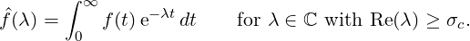
|
where the function f : ℝn → ℝ is the objective function, cI : ℝn → ℝmI are the inequality constraints and cE : ℝn → ℝmE are the equality constraints. These functions are supposed to be smooth.
In general, the inequality constraints are of the form cI(x) = 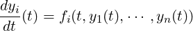. The vector l and u are the lower and upper bounds on the variables x and g(x) and the non linear inequality constraints.
Under some conditions, if x ∈ ℝn is a solution of problem (O), then there exist a vector λ = (λI,λE) ∈ ℝmI × ℝmE, such that the well known Karush-Kuhn-Tucker (KKT) optimality conditions are satisfied:
 |
l is known as the Lagrangian of the problem (O), λI and λE as the dual variables while x is the primal variable.
To solve an inequality constrained optimization problem, ie mE = 0, we provide the following function.
int pnl_optim_intpoints_bfgs_solve (PnlRnFuncR*func,
PnlRnFuncRm*grad_func, PnlRnFuncRm*nl_constraints, PnlVect *lower_bounds,
PnlVect *upper_bounds, PnlVect *x_input, double tolerance, int iter_max, int
print_inner_steps, PnlVect *output)
Description This function has the following arguments:
func is the function to minimize f.
grad is the gradient of f. If this gradient is not available, then enter grad=NULL. In this case, finite difference will be used to estimate the gradient.
nl_constraints is the function g(x), ie the non linear inequality constraints.
lower_bounds are the lower bounds on x. Can be NULL if there is no lower bound.
upper_bounds are the upper bounds on x. Can be NULL if there is no upper bound.
x_input is the initial point where the algorithm starts.
tolerance is the precision required in solving (P).
iter_max is the maximum number of iterations in the algorithm.
print_algo_steps is a flag to decide to print information.
x_output is the point where the algorithm stops.
The algorithm returns an int, its value depends on the output status of the algorithm. We have 4 cases:
0: Failure: Initial point is not strictly feasible.
1: Step is too small, we stop the algorithm.
2: Maximum number of iterations reached.
3: A solution has been found up to the required accuracy.
The last case is equivalent to the two inequalities:
where cI(x) . * λI where ’.*’ denotes the term by term multiplication.
The first inequality is known as the optimality condition, the second one as the
complementarity condition.
Remarks Our implementation requires the initial point x0 to be strictly feasible, ie: c(x0) > 0. The algorithm tries to find a pair (x, λ) solving the Equations (P), but this does not guarantee that x is a global minimum of f on the set {c(x) ≥ 0}.
To provide a uniformed framework to root finding functions, we use several structures for storing different kind of functions. The pointer params is used to store the extra parameters. These new types come with dedicated macros starting in PNL_EVAL to evaluate the function and their Jacobian.
/*
* f: R --> R
* The function pointer returns f(x)
*
typedef struct {
double (*F) (double x, void *params);
void *params;
} PnlFunc ;
#define PNL_EVAL_FUNC(Fstruct, x) (*((Fstruct)->F))(x, (Fstruct)->params)
/*
* f: R^2 --> R
* The function pointer returns f(x)
*
typedef struct {
double (*F) (double x, double y, void *params);
void *params;
} PnlFunc2D ;
#define PNL_EVAL_FUNC2D(Fstruct, x, y) (*((Fstruct)->F))(x, y, (Fstruct)->params)
/*
* f: R --> R
* The function pointer computes f(x) and Df(x) and stores them in fx
* and dfx respectively
*
typedef struct {
void (*F) (double x, double *fx, double *dfx, void *params);
void *params;
} PnlFuncDFunc ;
#define PNL_EVAL_FUNC_FDF(Fstruct, x, fx, dfx) (*((Fstruct)->F))(x, fx, dfx, (Fstruct)->params)
/*
* f: R^n --> R
* The function pointer returns f(x)
*
typedef struct {
double (*F) (const PnlVect *x, void *params);
void *params;
} PnlRnFuncR ;
#define PNL_EVAL_RNFUNCR(Fstruct, x) (*((Fstruct)->F))(x, (Fstruct)->params)
/*
* f: R^n --> R^m
* The function pointer computes the vector f(x) and stores it in
* fx (vector of size m)
*
typedef struct {
void (*F) (const PnlVect *x, PnlVect *fx, void *params);
void *params;
} PnlRnFuncRm ;
#define PNL_EVAL_RNFUNCRM(Fstruct, x, fx) (*((Fstruct)->F))(x, fx, (Fstruct)->params)
/*
* Synonymous of PnlRnFuncRm for f:R^n --> R^n
*
typedef PnlRnFuncRm PnlRnFuncRn;
#define PNL_EVAL_RNFUNCRN PNL_EVAL_RNFUNCRM
/*
* f: R^n --> R^m
* The function pointer computes the vector f(x) and stores it in fx
* (vector of size m)
* The Dfunction pointer computes the matrix Df(x) and stores it in dfx
* (matrix of size m x n)
*
typedef struct {
void (*F) (const PnlVect *x, PnlVect *fx, void *params);
void (*DF) (const PnlVect *x, PnlMat *dfx, void *params);
void (*FDF) (const PnlVect *x, PnlVect *fx, PnlMat *dfx, void *params);
void *params;
} PnlRnFuncRmDFunc ;
#define PNL_EVAL_RNFUNCRM_DF(Fstruct, x, dfx) \
(*((Fstruct)->Dfunction))(x, dfx, (Fstruct)->params)
#define PNL_EVAL_RNFUNCRM_FDF(Fstruct, x, fx, dfx) \
(*((Fstruct)->F))(x, fx, dfx, (Fstruct)->params)
#define PNL_EVAL_RNFUNCRM_F_DF(Fstruct, x, fx, dfx) \
if ( (Fstruct)->FDF != NULL ) \
{ \
PNL_EVAL_RNFUNCRN_FDF (Fstruct, x, fx, dfx); \
} \
else \
{ \
PNL_EVAL_RNFUNCRN (Fstruct, x, fx); \
PNL_EVAL_RNFUNCRN_DF (Fstruct, x, dfx); \
}
/*
* Synonymous of PnlRnFuncRmDFunc for f:R^n --> R^m
*
typedef PnlRnFuncRmDFunc PnlRnFuncRnDFunc;
#define PNL_EVAL_RNFUNCRN_DF PNL_EVAL_RNFUNCRM_DF
#define PNL_EVAL_RNFUNCRN_FDF PNL_EVAL_RNFUNCRM_FDF
#define PNL_EVAL_RNFUNCRN_F_DF PNL_EVAL_RNFUNCRM_F_DF
To use the following functions, you should include pnl/pnl_root.h.
Real valued functions of a real argument
double pnl_root_brent (PnlFunc *F, double x1, double x2, double *tol)
Description Find the root of F between x1 and x2 with an accuracy of order tol. On
exit tol is an upper bound of the error.
int pnl_root_newton_bisection (PnlFuncDFunc *Func, double x_min, double
x_max, double tol, int N_Max, double *res)
Description Find the root of F between x1 and x2 with an accuracy of order tol
and a maximum of N_max iterations. On exit, the root is stored in res. Note that the
function Func must also compute the first derivative of the function. This function relies
on combining Newton’s approach with a bisection technique.
int pnl_root_newton (PnlFuncDFunc *Func, double x0, double x_eps, double fx_eps, int
max_iter, double *res)
Description Find the root of f starting from x0 using Newton’s method with descent
direction given by the inverse of the derivative, ie. dk = f(xk)∕f′(xk). Armijo’s line search is
used to make sure |f| decreases along the iterations. αk = max{γj ; j ≥ 0} such
that
| |f(xk + αkdk)| | ≤|f(xk)|(1 - ωαk). |
In this implementation, ω = 10-4 and γ = 1∕2. The algorithm stops when one of the three following conditions is met:
the maximum number of iterations max_iter is reached;
the last improvement over x is smaller that x * x_eps;
at the current position |f(x)| < fx_eps
On exit, the root is stored in res.
int pnl_root_bisection (PnlFunc *Func, double xmin, double xmax, double epsrel, double
espabs, int N_max, double *res)
Description Find the root of F between x1 and x2 with the accuracy |x2 - x1| < epsrel * x1
+ epsabs or with the maximum number of iterations N_max. On exit, res = (x2 + x1) /
2.
Vector valued functions with several arguments
int pnl_multiroot_newton (PnlRnFuncRnDFunc *func, const PnlVect *x0, double
x_eps, double fx_eps, int max_iter, int verbose, PnlVect *res)
Description Find the root of func starting from x0 using Newton’s method with descent
direction given by the inverse of the Jacobian matrix, ie. dk = (∇f(xk))-1f(xk). Armijo’s line
search is used to make sure |f| decreases along the iterations. αk = max{γj ; j ≥ 0} such
that
| |f(xk + αkdk)| | ≤|f(xk)|(1 - ωαk). |
In this implementation, ω = 10-4 and γ = 1∕2. The algorithm stops when one of the three following conditions is met:
the maximum number of iterations max_iter is reached;
the norm of the last improvement over x is smaller that |x| * x_eps;
at the current position |f(x)| < fx_eps
On exit, the root is stored in res. Note that the function F must also compute the first derivative of the function. When defining Func, you must either define Func->F and Func->DF or Func->FDF.
We provide two wrappers for calling minpack routines.
int pnl_root_fsolve (PnlRnFuncRnDFunc *f, PnlVect *x, PnlVect *fx, double xtol, int
maxfev, int *nfev, PnlVect *scale, int error_msg)
Description Compute the root of a function f : ℝn⟼ℝn. Note that the number of
components of f must be equal to the number of variates of f. This function returns OK or
FAIL if something went wrong.
Parameters
f is a pointer to a PnlRnFuncRnDFunc used to store the function whose root is to be found. f can also store the Jacobian of the function, if not it is computed using finite differences (see the file examples/minpack_test.c for a usage example). f->FDF can be NULL because it is not used in this function.
x contains on input the starting point of the search and an approximation of the root of f on output,
xtol is the precision required on x, if set to 0 a default value is used.
maxfev is the maximum number of evaluations of the function f before the algorithm returns, if set to 0, a coherent number is determined internally.
nfev contains on output the number of evaluations of f during the algorithm,
scale is a vector used to rescale x in a way that each coordinate of the solution is approximately of order 1 after rescaling. If on input scale=NULL, a scaling vector is computed internally by the algorithm.
error_msg is a boolean (TRUE or FALSE) to specify if an error message should be printed when the algorithm stops before having converged.
On output, fx contains f(x).
int pnl_root_fsolve_lsq (PnlRnFuncRmDFunc *f, PnlVect *x, int m, PnlVect *fx,
double xtol, double ftol, double gtol, int maxfev, int *nfev, PnlVect *scale, int
error_msg)
Description Compute the root of x ∈ ℝn⟼∑
i=1mfi(x)2, note that there is no reason why m
should be equal to n.
Parameters
f is a pointer to a PnlRnFuncRmDFunc used to store the function whose root is to be found. f can also store the Jacobian of the function, if not it is computed using finite differences (see the file examples/minpack_test.c for a usage example). f->FDF can be NULL because it is not used in this function.
x contains on input the starting point of the search and an approximation of the root of f on output,
m is the number of components of f,
xtol is the precision required on x, if set to 0 a default value is used.
ftol is the precision required on f, if set to 0 a default value is used.
gtol is the precision required on the Jacobian of f, if set to 0 a default value is used.
maxfev is the maximum number of evaluations of the function f before the algorithm returns, if set to 0, a coherent number is determined internally.
nfev contains on output the number of evaluations of f during the algorithm,
scale is a vector used to rescale x in a way that each coordinate of the solution is approximately of order 1 after rescaling. If on input scale=NULL, a scaling vector is computed internally by the algorithm.
error_msg is a boolean (TRUE or FALSE) to specify if an error message should be printed when the algorithm stops before having converged.
On output, fx contains f(x).
The special function approximations are defined in the header pnl/pnl_specfun.h.
Most of these functions rely on the Cephes library which uses its own error mechanism which can be activated or deactivated using the two following functions
void pnl_deactivate_mtherr ()
Description Deactivate Cephes error mechanism
void pnl_activate_mtherr ()
Description Activate Cephes error mechanism
double pnl_bessel_i (double v, double x)
Description Modified Bessel function of the first kind of order v.
double pnl_bessel_i_scaled (double v, double x)
Description Modified Bessel function of the first kind of order v divided by e|x|.
double pnl_bessel_rati (double v, double x)
Description Ratio of modified Bessel functions of the first kind : Iv+1(x)∕Iv(x).
double pnl_bessel_j (double v, double x)
Description Bessel function of the first kind of order v.
double pnl_bessel_j_scaled (double v, double x)
Description Bessel function of the first kind of order v. Same function as
pnl_bessel_j.
double pnl_bessel_y (double v, double x)
Description Modified Bessel function of the second kind of order v.
double pnl_bessel_y_scaled (double v, double x)
Description Modified Bessel function of the second kind of order v. Same function as
pnl_bessel_y.
double pnl_bessel_k (double v, double x)
Description Bessel function of the third kind of order v.
double pnl_bessel_k_scaled (double v, double x)
Description Bessel function of the third kind of order v multiplied by ex.
dcomplex pnl_bessel_h1 (double v, double x)
Description Hankel function of the first kind of order v.
dcomplex pnl_bessel_h1_scaled (double v, double x)
Description Hankel function of the first kind of order v and divided by eIx.
dcomplex pnl_bessel_h2 (double v, double x)
Description Hankel function of the second kind of order v.
dcomplex pnl_bessel_h2_scaled (double v, double x)
Description Hankel function of the second kind of order v and multiplied by eIx.
dcomplex pnl_complex_bessel_i (double v, dcomplex z)
Description Complex Modified Bessel function of the first kind of order v.
dcomplex pnl_complex_bessel_i_scaled (double v, dcomplex z)
Description Complex Modified Bessel function of the first kind of order v divided by
e|Creal(z)|.
dcomplex pnl_complex_bessel_rati (double v, dcomplex x)
Description Ratio of complex modified Bessel functions of the first kind :
Iv+1(x)∕Iv(x).
dcomplex pnl_complex_bessel_j (double v, dcomplex z)
Description Complex Bessel function of the first kind of order v.
dcomplex pnl_complex_bessel_j_scaled (double v, dcomplex z)
Description Complex Bessel function of the first kind of order v divided by e|Cimag(z)|.
dcomplex pnl_complex_bessel_y (double v, dcomplex z)
Description Complex Modified Bessel function of the second kind of order v.
dcomplex pnl_complex_bessel_y_scaled (double v, dcomplex z)
Description Complex Modified Bessel function of the second kind of order v divided
by e|Cimag(z)|.
dcomplex pnl_complex_bessel_k (double v, dcomplex z)
Description Complex Bessel function of the third kind of order v.
dcomplex pnl_complex_bessel_k_scaled (double v, dcomplex z)
Description Complex Bessel function of the third kind of order v multiplied by ez.
dcomplex pnl_complex_bessel_h1 (double v, dcomplex z)
Description Complex Hankel function of the first kind of order v.
dcomplex pnl_complex_bessel_h1_scaled (double v, dcomplex z)
Description Complex Hankel function of the first kind of order v and divided by eIz.
dcomplex pnl_complex_bessel_h2 (double v, dcomplex z)
Description Complex Hankel function of the second kind of order v.
dcomplex pnl_complex_bessel_h2_scaled (double v, dcomplex z)
Description Complex Hankel function of the second kind of order v and multiplied
by eIz.
double pnl_sf_erf (double x)
Description Compute the error function  ∫
0x e-t2
dt.
∫
0x e-t2
dt.
dcomplex pnl_sf_complex_erf (dcomplex z)
Description Same as pnl_sf_erf for complex arguments.
double pnl_sf_erfc (double x)
Description Compute the complementary error function 1. - erf(x).
dcomplex pnl_sf_complex_erfc (dcomplex x)
Description Same as pnl_sf_erfc for complex arguments.
double pnl_sf_erfcx (double x)
Description Compute the scaled complementary error function of x, defined by
ex2
erfc(x).
dcomplex pnl_sf_complex_erfcx (dcomplex z)
Description Same as pnl_sf_erfcx for complex arguments. Note that erfcx(-i x) =
w(x).
dcomplex pnl_sf_w (dcomplex z)
Description Compute e-z2
erfc(-iz).
double pnl_sf_w_im (double x)
Description Compute 2Dawson(x)∕
double pnl_sf_erfi (double x)
Description Compute -i erf(i z)
dcomplex pnl_sf_complex_erfi (dcomplex z)
Description Same as pnl_sf_erfi for complex arguments.
double pnl_sf_dawson (double x)
Description Compute  ∕2 e-x2
erfi(x).
∕2 e-x2
erfi(x).
dcomplex pnl_sf_complex_dawson (dcomplex z)
Description Same as pnl_sf_dawson for complex arguments.
double pnl_sf_log_erf (double x)
Description Compute log pnl_sf_erf(x)
double pnl_sf_log_erfc (double x)
Description Compute log pnl_sf_erfc(x)
For x > 0, the Gamma Function is defined by
 |
double pnl_sf_fact (int n)
Description Computes factorial of n Γ(n + 1).
double pnl_sf_gamma (double x)
Description Computes Γ(x),x ≥ 0
double pnl_sf_log_gamma (double x)
Description Computes log(Γ(x)),x ≥ 0
int pnl_sf_log_gamma_sgn (double x, double *y, int *sgn)
Description Computes y = log(|Γ(x)|) for x > 0 sgn contains the sign of Γ(x) (-1 or
+1).
double pnl_sf_choose (int n, int k)
Description Computes the binomial coefficient 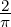 = 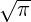 for 0 ≤ k ≤ n in double
precision.
For x > 0, the digamma function ψ is defined as the logarithmic derivative of the Gamma function Γ
 |
The function ψ admits the following integral representation
|
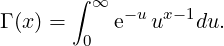
|
For a ∈ ℝ and x > 0, the Incomplete Gamma Function is defined by
|
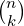
|
A relation similar to the one existing for the standard Gamma function holds
 |
| Γ(a) | = ∫ 0∞ua-1 e-u du | ||
| P(a,x) | = 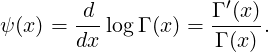 = 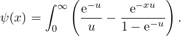∫ 0xua-1 e-u du | ||
| Q(a,x) | = 1 - P(a,x) = 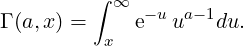 =  ∫
x∞e-u ua-1du. ∫
x∞e-u ua-1du. |
double pnl_sf_gamma_inc (double a, double x)
Description Computes Γ(a,x), a ∈ ℝ,x ≥ 0
void pnl_sf_gamma_inc_P (double a, double x)
Description Computes P(a,x), a > 0,x ≥ 0
void pnl_sf_gamma_inc_Q (double a, double x)
Description Computes Q(a,x), a > 0,x ≥ 0
For x > 0 and n ∈ ℕ, the function En is defined by
 |
This function is linked to the Incomplete Gamma function by
 |
from which we can deduce
|
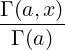
|
For n > 1, the series expansion is given by
![[ ]
n-1 --1-- --x-- ---x2--- --x3----
En(x) = x Γ (1 - n)+ -1 - n + 2 - n - 2(3- n) + 6(4 - n) - ... .](pnl-manual60x.png) |
The asymptotic behaviour is given by
![[ ]
E (x ) = e--x 1 - n-+ n(n-+-1) + ....
n x x x2](pnl-manual61x.png) |
The special case n = 1 gives
 |
For any complex number x with positive real part, this can be written
 |
By integrating the Taylor expansion of e-t ∕t, and extracting the logarithmic singularity, we can derive the following series representation for E1(x),
 |
The function E1 is linked to the exponential integral Ei
|
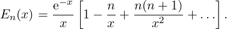
|
The above definition can be used for positive values of x, but the integral has to be understood in terms of its Cauchy principal value, due to the singularity of the integrand at zero.
 |
We deduce,
 |
For x ∈ ℝ
 |
double pnl_sf_expint_En (int n, double x)
Description Computes E_n(x) for n ≥ 0,x ≥ 0, or x > 0 when n = 0 or 1.
double pnl_sf_hyperg_2F1 (double a, double b, double c, double x)
Description Compute the Gauss hypergeometric function 2F1(a,b,c,x) for |x| < 1 and
for x < -1 when b,a,c,(b-a),(c-a),(c-b) are not integers
double pnl_sf_hyperg_1F1 (double a, double b, double x)
Description Compute the hypergeometric function 1F1(a,b,x)
double pnl_sf_hyperg_2F0 (double a, double b, double x)
Description Compute the hypergeometric function 2F0(a,b,x) for x<0 using the
relation 2F0(a,b,x) = (-x)-aU(a,1 + a - b,- ).
).
double pnl_sf_hyperg_0F1 (double c, double x)
Description Compute the hypergeometric function 0F1(c,x)
double pnl_sf_hyperg_U (double a, double b, double x)
Description Compute the confluent hypergeometric function U(a,b,x) with x > 0
We provide some bindings for the MPI library to natively handle PnlObjects.
The functionnalities described in this chapter are declared in pnl/pnl_mpi.h.
All the following functions return an error code as an integer value. This returned value should be tested against MPI_SUCCESS to check that no error occurred.
int pnl_object_mpi_pack_size (const PnlObject *Obj, MPI_Comm comm, int
*size)
Description Compute in size the amount of space needed to pack Obj.
int pnl_object_mpi_pack (const PnlObject *Obj, void *buf, int bufsize, int *pos,
MPI_Comm comm)
Description Pack Obj into buf which must be at least of length size. size must be at
least equal to the value returned by pnl_object_mpi_pack_size.
int pnl_object_mpi_unpack (PnlObject *Obj, void *buf, int bufsize, int *pos,
MPI_Comm comm)
Description Unpack the content of buf starting at position pos (unless several objects
have been packed contiguously, *pos should be equal to 0). buf is a contigous memery
area of length bufsize (note that the size is counted in bytes). pos is incremented and
is on output the first location in the input buffer after the locations occupied by the
message that was unpacked. pos is properly set for a future call to MPI_Unpack if any.
int pnl_object_mpi_send (const PnlObject *Obj, int dest, int tag, MPI_Comm
comm)
Description Perform a standard-mode blocking send of Obj. The object is sent to the
process with rank dest.
int pnl_object_mpi_ssend (const PnlObject *Obj, int dest, int tag, MPI_Comm
comm)
Description Perform a standard-mode synchronous blocking send of Obj. The object
is sent to the process with rank dest.
int pnl_object_mpi_recv (PnlObject *Obj, int src, int tag, MPI_Comm comm,
MPI_Status *status)
Description Perform a standard-mode blocking receive of Obj. The object is sent to
the process with rank dest. Note that Obj should be an already allocated object and
that its type should match the true type of the object to be received. src is the rank of
the process who sent the object.
int pnl_object_mpi_bcast (PnlObject *Obj, int root, MPI_Comm comm)
Description Broadcast the object Obj from the process with rank root to all other
processes of the group comm.
int pnl_object_mpi_reduce (PnlObject *Sendbuf, PnlObject *Recvbuf, MPI_Op
op, int root, MPI_Comm comm)
Description Perform the reduction described by op on the objects Sendbuf and stores
the result into Recvbuf. Note that Recvbuf and Sendbuf must be of the same type. The
argument root is the index of the root process and comm is a communicator. Not all
reductions are implemented for all types. Here is the list of compatible reductions
| MPI_SUM | PnlVect, PnlVectInt, PnlVectComplex, |
| PnlMat, PnlMatInt, PnlMatComplex | |
| MPI_PROD, MPI_MAX, | PnlVect, PnlVectInt, PnlMat, PnlMatInt |
| MPI_MIN |
For more expect users, we provide the following nonblocking functions.
int pnl_object_mpi_isend (const PnlObject *Obj, int dest, int tag, MPI_Comm
comm, MPI_Request *request)
Description Start a standard-mode, nonblocking send of object Obj to the process
with rank dest.
int pnl_object_mpi_irecv (void **buf, int *size, int src, int tag, MPI_Comm
comm, int *flag, MPI_Request *request)
Description Start a standard-mode, nonblocking receive of object Obj from the
process with rank root. On output flag equals to TRUE if the object can be received
and FALSE otherwise (this is the same as for MPI_Iprobe).
The interface is only accessible when the MPI bindings are compiled since it is based on the Packing/Unpacking facilities of MPI.
The functionnalities described in this chapter are declared in pnl/pnl_mpi.h.
PnlRng ** pnl_rng_create_from_file (char *str, int n)
Description Load n rng from the file of name str and returns an array of n PnlRng .
int pnl_rng_save_to_file (PnlRng **rngtab, int n, char *str)
Description Save n rng stored in rngtab into the file of name str.
int pnl_object_save (PnlObject *O, FILE *stream)
Description Save the object O into the stream stream. stream is typically created by
calling fopen with mode="wb". This function can be called several times to save several
objects in the same stream.
PnlObject* pnl_object_load (FILE *stream)
Description Load an object from the stream stream. stream is typically created by
calling fopen with mode="rb". This function can be called several times to load several
objects from the same stream. If stream was empty or it did not contain any PnlObjects,
the function returns NULL.
PnlList* pnl_object_load_into_list (FILE *stream)
Description Load as many objects as possible from the stream stream and stores
them into a PnlList . stream is typically created by calling fopen with mode="rb". If
stream was empty or it did not contain any PnlObjects, the function returns NULL.
The financial functions are defined in the header pnl/pnl_finance.h.
int pnl_cf_call_bs (double s, double k, double T, double r, double divid, double
sigma, double *ptprice, double *ptdelta)
Description Compute the price and delta of a call option (s-k)+ in the Black-Scholes
model with volatility sigma, instantaneous interest rate r, maturity T and dividend rate
divid. The parameters ptprice and ptdelta are respectively set to the price and delta on
output.
int pnl_cf_put_bs (double s, double k, double T, double r, double divid, double
sigma, double *ptprice, double *ptdelta)
Description Compute the price and delta of a put option (k-s)+ in the Black-Scholes
model with volatility sigma, instantaneous interest rate r, maturity T and dividend rate
divid. The parameters ptprice and ptdelta are respectively set to the price and delta on
output.
double pnl_bs_call (double s, double k, double T, double r, double divid, double
sigma)
Description Compute the price of a call option with spot s and strike k in the
Black-Scholes model with volatility sigma, instantaneous interest rate r, maturity T and
dividend rate divid.
double pnl_bs_put (double s, double k, double T, double r, double divid, double
sigma)
Description Compute the price a put option with spot s and strike k in the
Black-Scholes model with volatility sigma, instantaneous interest rate r, maturity T and
dividend rate divid.
double pnl_bs_call_put (int iscall, double s, double k, double T, double r, double
divid, double sigma)
Description Compute the price of a put option if iscall=0 or a call option if iscall=1
with spot s and strike k in the Black-Scholes model with volatility sigma, instantaneous
interest rate r, maturity T and dividend rate divid.
double pnl_bs_vega (double s, double k, double T, double r, double divid, double
sigma)
Description Compute the vega of a put or call option with spot s and strike k in the
Black-Scholes model with volatility sigma, instantaneous interest rate r, maturity T and
dividend rate divid.
double pnl_bs_gamma (double s, double k, double T, double r, double divid, double
sigma)
Description Compute the gamma of a put or call option with spot s and strike k in
the Black-Scholes model with volatility sigma, instantaneous interest rate r, maturity
T and dividend rate divid.
Practitioners do not speak in terms of option prices, but rather compare prices in terms of their implied Black & Scholes volatilities. So this parameter is very useful in practice. Here, we propose two functions to compute σimpl : the first one is for one up-let, maturity, strike, option price. the second function is for a list of strikes and maturities, a matrix of prices (with strikes varying row-wise).
double pnl_bs_implicit_vol (int is_call, double Price, double s, double K, double
T, double r, double divid, int *error)
Description Compute the implied volatility of a put option if iscall=0 or a call option
if iscall=1 with spot s and strike K in the Black-Scholes model with instantaneous
interest rate r, maturity T and dividend rate divid. On output error is OK if the
computation of the implied volatility succeeded or FAIL if it failed.
int pnl_bs_matrix_implicit_vol (const PnlMatInt *iscall, const PnlMat *Price,
double s, double r, double divid, const PnlVect *K, const PnlVect *T, PnlMat *Vol)
Description Compute the matrix of implied volatilities Vol(i,j) of a put option
if iscall(i,j)=0 or a call option if iscall(i,j)=1 with spot s and strike K(j) in the
Black-Scholes model with instantaneous interest rate r, maturity T(j) and dividend rate
divid. This function returns the number of failures, when everything succeeded it returns
0.
C_op_amcb, 2
C_op_amib, 3
C_op_apcb, 4
C_op_apib, 5
C_op_damb, 6
C_op_damcb, 7
C_op_damib, 8
C_op_dapb, 9
C_op_dapcb, 10
C_op_dapib, 11
C_op_idamb, 12
C_op_idamcb, 13
C_op_idapb, 14
C_op_idapcb, 15
Cabs, 16
Cadd, 17
Carg, 18
Ccos, 19
Ccosh, 20
Ccotan, 21
Ccotanh, 22
Cdiv, 23
Cexp, 24
CI, 25
CIexp, 26
Cimag, 27
Cinv, 28
Clgamma, 29
Clog, 30
Cminus, 31
CMPLX, 32
Cmul, 33
Complex, 34
Complex_polar, 35
CONE, 36
Conj, 37
Cpow, 38
Cpow_real, 39
Cprintf, 40
CRadd, 41
CRdiv, 42
Creal, 43
CRmul, 44
CRsub, 45
Csin, 46
Csinh, 47
Csqr_norm, 48
Csqrt, 49
Csub, 50
Ctan, 51
Ctanh, 52
Ctgamma, 53
CUB, 54
CZERO, 55
DBL_EPSILON, 56
DBL_MAX, 57
DOUBLE_MAX, 58
GET, 59
GET_COMPLEX, 60
GET_IMAG, 61
GET_INT, 62
GET_REAL, 63
INT_MAX, 64
LET, 65
LET_COMPLEX, 66
LET_IMAG, 67
LET_INT, 68
LET_REAL, 69
M_1_PI, 70
M_1_SQRT2PI, 71
M_2_PI, 72
M_2_SQRTPI, 73
M_2PI, 74
M_E, 75
M_EULER, 76
M_LN10, 77
M_LN2, 78
M_LOG10E, 79
M_LOG2E, 80
M_PI, 81
M_PI_2, 82
M_PI_4, 83
M_SQRT1_2, 84
M_SQRT2, 85
M_SQRT2_PI, 86
M_SQRT2PI, 87
MAX, 88
MAX_INT, 89
MGET, 90
MGET_COMPLEX, 91
MGET_INT, 92
MIN, 93
MLET, 94
MLET_COMPLEX, 95
MLET_INT, 96
NAN, 97
pnl_acosh, 98
pnl_activate_mtherr, 99
PNL_ALTERNATE, 100
pnl_array_clone, 101
pnl_array_copy, 102
pnl_array_create, 103
pnl_array_free, 104
pnl_array_get, 105
pnl_array_new, 106
pnl_array_print, 107
pnl_array_resize, 108
pnl_array_set, 109
pnl_asinh, 110
pnl_atanh, 111
pnl_band_mat_clone, 112
pnl_band_mat_copy, 113
pnl_band_mat_create, 114
pnl_band_mat_create_from_mat, 115
pnl_band_mat_div_band_mat_term, 116
pnl_band_mat_div_scalar, 117
pnl_band_mat_free, 118
pnl_band_mat_get, 119
pnl_band_mat_inv_term, 120
pnl_band_mat_lAxpby, 121
pnl_band_mat_lget, 122
pnl_band_mat_lu, 123
pnl_band_mat_lu_syslin, 124
pnl_band_mat_lu_syslin_inplace, 125
pnl_band_mat_map, 126
pnl_band_mat_map_band_mat_inplace, 127
pnl_band_mat_map_inplace, 128
pnl_band_mat_minus_band_mat, 129
pnl_band_mat_minus_scalar, 130
pnl_band_mat_mult_band_mat_term, 131
pnl_band_mat_mult_scalar, 132
pnl_band_mat_mult_vect_inplace, 133
pnl_band_mat_new, 134
PNL_BAND_MAT_OBJECT, 135
pnl_band_mat_plus_band_mat, 136
pnl_band_mat_plus_scalar, 137
pnl_band_mat_print_as_full, 138
pnl_band_mat_resize, 139
pnl_band_mat_set, 140
pnl_band_mat_set_all, 141
pnl_band_mat_syslin, 142
pnl_band_mat_syslin_inplace, 143
pnl_band_mat_to_mat, 144
pnl_basis_add_elt, 145
pnl_basis_add_function, 146
PNL_BASIS_CANONICAL, 147
pnl_basis_clone, 148
pnl_basis_copy, 149
pnl_basis_create, 150
pnl_basis_create_from_degree, 151
pnl_basis_create_from_hyperbolic_degree, 152
pnl_basis_create_from_prod_degree, 153
pnl_basis_create_from_tensor, 154
pnl_basis_del_elt, 155
pnl_basis_del_elt_i, 156
pnl_basis_eval, 157
pnl_basis_eval_D, 158
pnl_basis_eval_D2, 159
pnl_basis_eval_D2_vect, 160
pnl_basis_eval_D_vect, 161
pnl_basis_eval_derivs, 162
pnl_basis_eval_derivs_vect, 163
pnl_basis_eval_vect, 164
pnl_basis_fit_ls, 165
pnl_basis_free, 166
PNL_BASIS_HERMITE, 167
pnl_basis_i, 168
pnl_basis_i_D, 169
pnl_basis_i_D2, 170
pnl_basis_i_D2_vect, 171
pnl_basis_i_D_vect, 172
pnl_basis_i_vect, 173
pnl_basis_ik, 174
pnl_basis_ik_vect, 175
pnl_basis_new, 176
PNL_BASIS_OBJECT, 177
pnl_basis_print, 178
pnl_basis_set_domain, 179
pnl_basis_set_from_tensor, 180
pnl_basis_set_reduced, 181
PNL_BASIS_TCHEBYCHEV, 182
pnl_basis_type_register, 183
pnl_bessel_h1, 184
pnl_bessel_h1_scaled, 185
pnl_bessel_h2, 186
pnl_bessel_h2_scaled, 187
pnl_bessel_i, 188
pnl_bessel_i_scaled, 189
pnl_bessel_j, 190
pnl_bessel_j_scaled, 191
pnl_bessel_k, 192
pnl_bessel_k_scaled, 193
pnl_bessel_rati, 194
pnl_bessel_y, 195
pnl_bessel_y_scaled, 196
pnl_bicg_solver_create, 197
pnl_bicg_solver_free, 198
pnl_bicg_solver_initialisation, 199
pnl_bicg_solver_new, 200
pnl_bicg_solver_solve, 201
pnl_bs_call, 202
pnl_bs_call_put, 203
pnl_bs_gamma, 204
pnl_bs_implicit_vol, 205
pnl_bs_matrix_implicit_vol, 206
pnl_bs_put, 207
pnl_bs_vega, 208
pnl_cdf2nor, 209
pnl_cdf_bet, 210
pnl_cdf_bin, 211
pnl_cdf_chi, 212
pnl_cdf_chn, 213
pnl_cdf_f, 214
pnl_cdf_fnc, 215
pnl_cdf_gam, 216
pnl_cdf_nbn, 217
pnl_cdf_nor, 218
pnl_cdf_poi, 219
pnl_cdf_t, 220
pnl_cdfbchi2n, 221
pnl_cdfchi2n, 222
pnl_cdfnor, 223
pnl_cell_free, 224
pnl_cell_new, 225
pnl_cf_call_bs, 226
pnl_cf_put_bs, 227
pnl_cg_solver_create, 228
pnl_cg_solver_free, 229
pnl_cg_solver_initialisation, 230
pnl_cg_solver_new, 231
pnl_cg_solver_solve, 232
pnl_complex_bessel_h1, 233
pnl_complex_bessel_h1_scaled, 234
pnl_complex_bessel_h2, 235
pnl_complex_bessel_h2_scaled, 236
pnl_complex_bessel_i, 237
pnl_complex_bessel_i_scaled, 238
pnl_complex_bessel_j, 239
pnl_complex_bessel_j_scaled, 240
pnl_complex_bessel_k, 241
pnl_complex_bessel_k_scaled, 242
pnl_complex_bessel_rati, 243
pnl_complex_bessel_y, 244
pnl_complex_bessel_y_scaled, 245
pnl_complex_isequal, 246
pnl_complex_isequal_abs, 247
pnl_complex_isequal_rel, 248
pnl_cosm1, 249
pnl_deactivate_mtherr, 250
pnl_expm1, 251
pnl_fact, 252
pnl_fft, 253
pnl_fft2, 254
pnl_fft2d, 255
pnl_fft2d_inplace, 256
pnl_fft_alloc_wspace, 257
pnl_fft_inplace, 258
pnl_fft_inplace_with_wspace, 259
PNL_GET_PARENT_TYPE, 260
PNL_GET_TYPE, 261
PNL_GET_TYPENAME, 262
pnl_gmres_solver_create, 263
pnl_gmres_solver_free, 264
pnl_gmres_solver_initialisation, 265
pnl_gmres_solver_new, 266
pnl_gmres_solver_solve, 267
pnl_hmat_clone, 268
pnl_hmat_copy, 269
pnl_hmat_create, 270
pnl_hmat_create_from_ptr, 271
pnl_hmat_create_from_scalar, 272
pnl_hmat_free, 273
pnl_hmat_get, 274
pnl_hmat_lget, 275
pnl_hmat_mult_scalar, 276
pnl_hmat_new, 277
PNL_HMAT_OBJECT, 278
pnl_hmat_plus_hmat, 279
pnl_hmat_print, 280
pnl_hmat_resize, 281
pnl_hmat_set, 282
pnl_ifft, 283
pnl_ifft2, 284
pnl_ifft2d, 285
pnl_ifft2d_inplace, 286
pnl_ifft_inplace, 287
pnl_ifft_inplace_with_wspace, 288
pnl_ilap_cdf_euler, 289
pnl_ilap_euler, 290
pnl_ilap_fft, 291
pnl_ilap_gs, 292
pnl_ilap_gs_basic, 293
PNL_INF, 294
pnl_integration, 295
pnl_integration_2d, 296
pnl_integration_GK, 297
pnl_integration_GK2D, 298
pnl_integration_qag, 299
pnl_integration_qagp, 300
pnl_integration_qng, 301
pnl_integration_qng_2d, 302
pnl_inv_cdfnor, 303
pnl_iround, 304
PNL_IS_EVEN, 305
PNL_IS_ODD, 306
pnl_isequal, 307
pnl_isequal_abs, 308
pnl_isequal_rel, 309
pnl_isfinite, 310
pnl_isinf, 311
pnl_isnan, 312
pnl_itrunc, 313
pnl_lgamma, 314
PNL_LIST_ARRAY, 315
pnl_list_clone, 316
pnl_list_concat, 317
pnl_list_copy, 318
pnl_list_free, 319
pnl_list_get, 320
pnl_list_insert_first, 321
pnl_list_insert_last, 322
pnl_list_new, 323
PNL_LIST_OBJECT, 324
pnl_list_print, 325
pnl_list_remove_first, 326
pnl_list_remove_i, 327
pnl_list_remove_last, 328
pnl_list_resize, 329
pnl_log1p, 330
pnl_lround, 331
pnl_ltrunc, 332
pnl_mat_add_row, 333
pnl_mat_axpy, 334
pnl_mat_bicg_solver_solve, 335
pnl_mat_cg_solver_solve, 336
pnl_mat_chol, 337
pnl_mat_chol_syslin, 338
pnl_mat_chol_syslin_inplace, 339
pnl_mat_chol_syslin_mat, 340
pnl_mat_clone, 341
pnl_mat_col_permute, 342
pnl_mat_complex_create_from_mat, 343
pnl_mat_copy, 344
pnl_mat_create, 345
pnl_mat_create_diag, 346
pnl_mat_create_diag_from_ptr, 347
pnl_mat_create_from_file, 348
pnl_mat_create_from_list, 349
pnl_mat_create_from_ptr, 350
pnl_mat_create_from_scalar, 351
pnl_mat_create_from_sp_mat, 352
pnl_mat_create_from_zero, 353
pnl_mat_cross, 354
pnl_mat_cumprod, 355
pnl_mat_cumsum, 356
pnl_mat_del_row, 357
pnl_mat_dgemm, 358
pnl_mat_dgemv, 359
pnl_mat_dger, 360
pnl_mat_div_mat_term, 361
pnl_mat_div_scalar, 362
pnl_mat_eigen, 363
pnl_mat_exp, 364
pnl_mat_extract_subblock, 365
pnl_mat_find, 366
pnl_mat_fprint, 367
pnl_mat_fprint_nsp, 368
pnl_mat_free, 369
pnl_mat_get, 370
pnl_mat_get_col, 371
pnl_mat_get_row, 372
pnl_mat_gmres_solver_solve, 373
pnl_mat_inverse, 374
pnl_mat_inverse_with_chol, 375
pnl_mat_isequal, 376
pnl_mat_isequal_abs, 377
pnl_mat_isequal_rel, 378
pnl_mat_kron_mat, 379
pnl_mat_kron_mat_inplace, 380
pnl_mat_lAxpby, 381
pnl_mat_lget, 382
pnl_mat_log, 383
pnl_mat_lower_inverse, 384
pnl_mat_lower_syslin, 385
pnl_mat_ls, 386
pnl_mat_ls_mat, 387
pnl_mat_lu, 388
pnl_mat_lu_syslin, 389
pnl_mat_lu_syslin_inplace, 390
pnl_mat_lu_syslin_mat, 391
pnl_mat_map, 392
pnl_mat_map_inplace, 393
pnl_mat_map_mat, 394
pnl_mat_map_mat_inplace, 395
pnl_mat_max, 396
pnl_mat_max_index, 397
pnl_mat_min, 398
pnl_mat_min_index, 399
pnl_mat_minmax, 400
pnl_mat_minmax_index, 401
pnl_mat_minus_mat, 402
pnl_mat_minus_scalar, 403
pnl_mat_mult_mat, 404
pnl_mat_mult_mat_inplace, 405
pnl_mat_mult_mat_term, 406
pnl_mat_mult_scalar, 407
pnl_mat_mult_vect, 408
pnl_mat_mult_vect_inplace, 409
pnl_mat_mult_vect_transpose, 410
pnl_mat_mult_vect_transpose_inplace, 411
pnl_mat_new, 412
PNL_MAT_OBJECT, 413
pnl_mat_pchol, 414
pnl_mat_plus_mat, 415
pnl_mat_plus_scalar, 416
pnl_mat_print, 417
pnl_mat_print_nsp, 418
pnl_mat_prod, 419
pnl_mat_prod_vect, 420
pnl_mat_qr, 421
pnl_mat_qr_syslin, 422
pnl_mat_qsort, 423
pnl_mat_qsort_index, 424
pnl_mat_rand_normal, 425
pnl_mat_rand_uni, 426
pnl_mat_rand_uni2, 427
pnl_mat_resize, 428
pnl_mat_rng_bernoulli, 429
pnl_mat_rng_normal, 430
pnl_mat_rng_poisson, 431
pnl_mat_rng_uni, 432
pnl_mat_rng_uni2, 433
pnl_mat_row_permute, 434
pnl_mat_scalar_prod, 435
pnl_mat_set, 436
pnl_mat_set_all, 437
pnl_mat_set_col, 438
pnl_mat_set_col_from_ptr, 439
pnl_mat_set_diag, 440
pnl_mat_set_from_ptr, 441
pnl_mat_set_id, 442
pnl_mat_set_row, 443
pnl_mat_set_row_from_ptr, 444
pnl_mat_set_subblock, 445
pnl_mat_set_zero, 446
pnl_mat_sq_transpose, 447
pnl_mat_sum, 448
pnl_mat_sum_vect, 449
pnl_mat_swap_rows, 450
pnl_mat_syslin, 451
pnl_mat_syslin_inplace, 452
pnl_mat_syslin_mat, 453
pnl_mat_tr, 454
pnl_mat_trace, 455
pnl_mat_transpose, 456
pnl_mat_upper_inverse, 457
pnl_mat_upper_syslin, 458
pnl_mat_wrap_array, 459
pnl_mat_wrap_hmat, 460
pnl_mat_wrap_mat_rows, 461
pnl_mat_wrap_vect, 462
pnl_multiroot_newton, 463
pnl_nan, 464
PNL_NEGINF, 465
pnl_neginf, 466
pnl_normal_density, 467
PNL_OBJECT, 468
pnl_object_create, 469
pnl_object_load, 470
pnl_object_load_into_list, 471
pnl_object_mpi_bcast, 472
pnl_object_mpi_irecv, 473
pnl_object_mpi_isend, 474
pnl_object_mpi_pack, 475
pnl_object_mpi_pack_size, 476
pnl_object_mpi_recv, 477
pnl_object_mpi_reduce, 478
pnl_object_mpi_send, 479
pnl_object_mpi_ssend, 480
pnl_object_mpi_unpack, 481
pnl_object_save, 482
pnl_ode_rkf45, 483
pnl_ode_rkf45_step, 484
pnl_optim_intpoints_bfgs_solve, 485
pnl_optim_linprog, 486
pnl_optim_linprog_sp, 487
pnl_permutation_create, 488
pnl_permutation_fprint, 489
pnl_permutation_free, 490
pnl_permutation_inverse, 491
pnl_permutation_new, 492
pnl_permutation_print, 493
PNL_POSINF, 494
pnl_posinf, 495
pnl_pow_i, 496
pnl_rand_bernoulli, 497
pnl_rand_bessel, 498
pnl_rand_chi2, 499
pnl_rand_exp, 500
pnl_rand_gamma, 501
pnl_rand_gauss, 502
pnl_rand_init, 503
pnl_rand_name, 504
pnl_rand_normal, 505
pnl_rand_or_quasi, 506
pnl_rand_poisson, 507
pnl_rand_poisson1, 508
pnl_rand_sseed, 509
pnl_rand_uni, 510
pnl_rand_uni_ab, 511
pnl_real_fft, 512
pnl_real_fft2, 513
pnl_real_fft2d, 514
pnl_real_fft_inplace, 515
pnl_real_fft_inplace_with_wspace, 516
pnl_real_fft_with_wspace, 517
pnl_real_ifft, 518
pnl_real_ifft2, 519
pnl_real_ifft2d, 520
pnl_real_ifft_inplace, 521
pnl_real_ifft_inplace_with_wspace, 522
pnl_real_ifft_with_wspace, 523
pnl_rng_bernoulli, 524
pnl_rng_bessel, 525
pnl_rng_chi2, 526
pnl_rng_clone, 527
pnl_rng_copy, 528
pnl_rng_create, 529
pnl_rng_create_from_file, 530
pnl_rng_dblexp, 531
pnl_rng_dcmt_create_array, 532
pnl_rng_dcmt_create_array_id, 533
pnl_rng_dcmt_create_id, 534
pnl_rng_exp, 535
pnl_rng_free, 536
pnl_rng_gamma, 537
pnl_rng_gauss, 538
pnl_rng_get_from_id, 539
pnl_rng_init, 540
pnl_rng_invgauss, 541
pnl_rng_lognormal, 542
pnl_rng_ncchi2, 543
pnl_rng_new, 544
pnl_rng_normal, 545
PNL_RNG_OBJECT, 546
pnl_rng_poisson, 547
pnl_rng_poisson1, 548
pnl_rng_save_to_file, 549
pnl_rng_sdim, 550
pnl_rng_sseed, 551
pnl_rng_uni, 552
pnl_rng_uni_ab, 553
pnl_root_bisection, 554
pnl_root_brent, 555
pnl_root_fsolve, 556
pnl_root_fsolve_lsq, 557
pnl_root_newton, 558
pnl_root_newton_bisection, 559
pnl_round, 560
pnl_sf_choose, 561
pnl_sf_complex_dawson, 562
pnl_sf_complex_erf, 563
pnl_sf_complex_erfc, 564
pnl_sf_complex_erfcx, 565
pnl_sf_complex_erfi, 566
pnl_sf_dawson, 567
pnl_sf_erf, 568
pnl_sf_erfc, 569
pnl_sf_erfcx, 570
pnl_sf_erfi, 571
pnl_sf_expint_En, 572
pnl_sf_fact, 573
pnl_sf_gamma, 574
pnl_sf_gamma_inc, 575
pnl_sf_gamma_inc_P, 576
pnl_sf_gamma_inc_Q, 577
pnl_sf_hyperg_0F1, 578
pnl_sf_hyperg_1F1, 579
pnl_sf_hyperg_2F0, 580
pnl_sf_hyperg_2F1, 581
pnl_sf_hyperg_U, 582
pnl_sf_log_erf, 583
pnl_sf_log_erfc, 584
pnl_sf_log_gamma, 585
pnl_sf_log_gamma_sgn, 586
pnl_sf_psi, 587
pnl_sf_w, 588
pnl_sf_w_im, 589
PNL_SIGN, 590
pnl_sp_mat_clone, 591
pnl_sp_mat_copy, 592
pnl_sp_mat_create, 593
pnl_sp_mat_create_from_file, 594
pnl_sp_mat_create_from_mat, 595
pnl_sp_mat_div_scalar, 596
pnl_sp_mat_fprint, 597
pnl_sp_mat_free, 598
pnl_sp_mat_get, 599
pnl_sp_mat_isequal, 600
pnl_sp_mat_isequal_abs, 601
pnl_sp_mat_isequal_rel, 602
pnl_sp_mat_kron, 603
pnl_sp_mat_kron_inplace, 604
pnl_sp_mat_lAxpby, 605
pnl_sp_mat_minus_scalar, 606
pnl_sp_mat_mult_scalar, 607
pnl_sp_mat_mult_vect, 608
pnl_sp_mat_new, 609
PNL_SP_MAT_OBJECT, 610
pnl_sp_mat_plus_scalar, 611
pnl_sp_mat_plus_sp_mat_inplace, 612
pnl_sp_mat_print, 613
pnl_sp_mat_resize, 614
pnl_sp_mat_set, 615
pnl_sp_mat_sp_mat, 616
pnl_tgamma, 617
pnl_tridiag_mat_clone, 618
pnl_tridiag_mat_copy, 619
pnl_tridiag_mat_create, 620
pnl_tridiag_mat_create_from_mat, 621
pnl_tridiag_mat_create_from_ptr, 622
pnl_tridiag_mat_create_from_scalar, 623
pnl_tridiag_mat_create_from_two_scalar, 624
pnl_tridiag_mat_div_scalar, 625
pnl_tridiag_mat_div_tridiag_mat_term, 626
pnl_tridiag_mat_fprint, 627
pnl_tridiag_mat_free, 628
pnl_tridiag_mat_get, 629
pnl_tridiag_mat_lAxpby, 630
pnl_tridiag_mat_lget, 631
pnl_tridiag_mat_lu_clone, 632
pnl_tridiag_mat_lu_compute, 633
pnl_tridiag_mat_lu_copy, 634
pnl_tridiag_mat_lu_create, 635
pnl_tridiag_mat_lu_free, 636
pnl_tridiag_mat_lu_new, 637
pnl_tridiag_mat_lu_resize, 638
pnl_tridiag_mat_lu_syslin, 639
pnl_tridiag_mat_lu_syslin_inplace, 640
pnl_tridiag_mat_map_inplace, 641
pnl_tridiag_mat_map_tridiag_mat_inplace, 642
pnl_tridiag_mat_minus_scalar, 643
pnl_tridiag_mat_minus_tridiag_mat, 644
pnl_tridiag_mat_mult_scalar, 645
pnl_tridiag_mat_mult_tridiag_mat_term, 646
pnl_tridiag_mat_mult_vect, 647
pnl_tridiag_mat_mult_vect_inplace, 648
pnl_tridiag_mat_new, 649
pnl_tridiag_mat_plus_scalar, 650
pnl_tridiag_mat_plus_tridiag_mat, 651
pnl_tridiag_mat_print, 652
pnl_tridiag_mat_resize, 653
pnl_tridiag_mat_scalar_prod, 654
pnl_tridiag_mat_set, 655
pnl_tridiag_mat_syslin, 656
pnl_tridiag_mat_syslin_inplace, 657
pnl_tridiag_mat_to_mat, 658
PNL_TRIDIAGMAT_OBJECT, 659
pnl_trunc, 660
pnl_vect_axpby, 661
pnl_vect_clone, 662
pnl_vect_compact_copy, 663
pnl_vect_compact_create, 664
pnl_vect_compact_create_from_ptr, 665
pnl_vect_compact_free, 666
pnl_vect_compact_get, 667
pnl_vect_compact_new, 668
pnl_vect_compact_resize, 669
pnl_vect_compact_set_all, 670
pnl_vect_compact_set_ptr, 671
pnl_vect_compact_to_pnl_vect, 672
pnl_vect_complex_create_from_array, 673
pnl_vect_complex_get_imag, 674
pnl_vect_complex_get_real, 675
pnl_vect_complex_lget_imag, 676
pnl_vect_complex_lget_real, 677
pnl_vect_complex_mult_double, 678
pnl_vect_complex_set_imag, 679
pnl_vect_complex_set_real, 680
pnl_vect_complex_split_in_array, 681
pnl_vect_complex_split_in_vect, 682
pnl_vect_copy, 683
pnl_vect_create, 684
pnl_vect_create_from_file, 685
pnl_vect_create_from_list, 686
pnl_vect_create_from_mat, 687
pnl_vect_create_from_ptr, 688
pnl_vect_create_from_scalar, 689
pnl_vect_create_from_zero, 690
pnl_vect_create_submat, 691
pnl_vect_create_subvect, 692
pnl_vect_create_subvect_with_ind, 693
pnl_vect_cross, 694
pnl_vect_cumprod, 695
pnl_vect_cumsum, 696
pnl_vect_dist, 697
pnl_vect_div_scalar, 698
pnl_vect_div_vect_term, 699
pnl_vect_eq_all, 700
pnl_vect_extract_submat, 701
pnl_vect_extract_subvect, 702
pnl_vect_extract_subvect_with_ind, 703
pnl_vect_find, 704
pnl_vect_fprint, 705
pnl_vect_fprint_asrow, 706
pnl_vect_fprint_nsp, 707
pnl_vect_free, 708
pnl_vect_get, 709
pnl_vect_inv_term, 710
pnl_vect_isequal, 711
pnl_vect_isequal_abs, 712
pnl_vect_isequal_rel, 713
pnl_vect_lget, 714
pnl_vect_map, 715
pnl_vect_map_inplace, 716
pnl_vect_map_vect, 717
pnl_vect_map_vect_inplace, 718
pnl_vect_max, 719
pnl_vect_max_index, 720
pnl_vect_min, 721
pnl_vect_min_index, 722
pnl_vect_minmax, 723
pnl_vect_minmax_index, 724
pnl_vect_minus, 725
pnl_vect_minus_scalar, 726
pnl_vect_minus_vect, 727
pnl_vect_mult_scalar, 728
pnl_vect_mult_vect_term, 729
pnl_vect_new, 730
pnl_vect_norm_infty, 731
pnl_vect_norm_one, 732
pnl_vect_norm_two, 733
PNL_VECT_OBJECT, 734
pnl_vect_permute, 735
pnl_vect_permute_inplace, 736
pnl_vect_permute_inverse, 737
pnl_vect_permute_inverse_inplace, 738
pnl_vect_plus_scalar, 739
pnl_vect_plus_vect, 740
pnl_vect_print, 741
pnl_vect_print_asrow, 742
pnl_vect_print_nsp, 743
pnl_vect_prod, 744
pnl_vect_qsort, 745
pnl_vect_qsort_index, 746
pnl_vect_rand_normal, 747
pnl_vect_rand_normal_d, 748
pnl_vect_rand_uni, 749
pnl_vect_rand_uni_d, 750
pnl_vect_resize, 751
pnl_vect_resize_from_ptr, 752
pnl_vect_resize_from_scalar, 753
pnl_vect_reverse, 754
pnl_vect_rng_bernoulli, 755
pnl_vect_rng_bernoulli_d, 756
pnl_vect_rng_normal, 757
pnl_vect_rng_normal_d, 758
pnl_vect_rng_poisson, 759
pnl_vect_rng_poisson_d, 760
pnl_vect_rng_uni, 761
pnl_vect_rng_uni_d, 762
pnl_vect_scalar_prod, 763
pnl_vect_set, 764
pnl_vect_set_all, 765
pnl_vect_set_subblock, 766
pnl_vect_set_zero, 767
pnl_vect_sum, 768
pnl_vect_swap_elements, 769
pnl_vect_wrap_array, 770
pnl_vect_wrap_hmat, 771
pnl_vect_wrap_mat, 772
pnl_vect_wrap_mat_row, 773
pnl_vect_wrap_subvect, 774
pnl_vect_wrap_subvect_with_last, 775
RCadd, 776
RCdiv, 777
RCmul, 778
RCsub, 779
SQR, 780
Structs
PnlArray, 781
PnlBandMat, 782
PnlBasis, 783
PnlBicgSolver, 784
PnlCell, 785
PnlCgSolver, 786
PnlCmplxFunc, 787
PnlFunc, 788
PnlFunc2D, 789
PnlFuncDFunc, 790
PnlGmresSolver, 791
PnlHmat, 792
PnlHmatComplex, 793
PnlHmatInt, 794
PnlIterationBase, 795
PnlList, 796
PnlMat, 797
PnlMatComplex, 798
PnlMatInt, 799
PnlObject, 800
PnlODEFunc, 801
PnlPermutation, 802
PnlRnFuncR, 803
PnlRnFuncRm, 804
PnlRnFuncRmDFunc, 805
PnlRnFuncRn, 806
PnlRnFuncRnDFunc, 807
PnlRng, 808
PnlSpMat, 809
PnlSpMatComplex, 810
PnlSpMatInt, 811
PnlTridiagMat, 812
PnlTridiagMatLU, 813
PnlVect, 814
PnlVectCompact, 815
PnlVectComplex, 816
PnlVectInt, 817